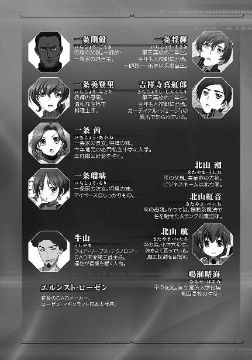

| 魔法科高校の劣等生(17) 師族会議編〈上〉 (電撃文庫) | |
| 佐島 勤 | |
| 株式会社KADOKAWA (2016) | |
本書（電子版）に掲載されているコンテンツ（ソフトウェア／プログラム／データ／情報を含む）の著作権およびその他の権利は、すべて株式会社ＫＡＤＯＫＡＷＡおよび正当な権利を有する第三者に帰属しています。
法律の定めがある場合または権利者の明示的な承諾がある場合を除き、これらのコンテンツを複製・転載、改変・編集、翻案・翻訳、放送・出版、公衆送信（送信可能化を含む）・再配信、販売・頒布、貸与等に使用することはできません。




［１］
西暦二〇九七年一月二日、正月三が日の真っ最中に魔法協会からもたらされたその報せは、関係者に大きな衝撃を与えた。
発信人は十師族・四葉家当主、四葉真夜。
内容は四葉家次期当主の指名、並びに次期当主の婚約者の決定。
それは四葉家が次世代への継承に動き始めたことを意味する。次期当主に指名された司波深雪、そしてその婚約者に決まった司波達也両名のことを知らぬ者にとっても、この通知は日本魔法界の新時代を予感させる大きなニュースとなった。
しかし、達也と深雪を知る者にとっては「新時代」に対する不安と期待などという漠然としたものに留まらず、もっと具体的なショックをもたらすニュースだった。二人が四葉家の（ある意味で）直系であるという事実どころか、四葉家との関係すら完全に隠蔽されていたのだから、兄妹に対して友情、競争心、あるいはそれ以上の感情を懐いていた少年たち、少女たちにとって「晴天の霹靂」となったのも、あるいは当然かもしれない。
十師族・一条家の長男、一条将輝もまた、大きなショックを受けた一人だった。
◇ ◇ ◇
一月二日午後四時、年始回りから戻って来た将輝は、帰って来て早々父親に呼ばれ座敷へ向かった。
将輝の父、剛毅がこの時間から家にいるのは珍しい。いつもは表向きの家業である海底資源採掘会社の現場を飛び回っているか、一条家の配下にある魔法師の訓練を監督しているかで、夕食の時間にならないと帰宅しない。しかしこの正月三が日は、十師族・一条家の当主として挨拶を受ける側だ。本人の好むと好まざるとに拘わらず、家にじっとしているのも当主の義務である。
一条家の屋敷は家族用の区画が洋風、客を迎える為の区画が武家屋敷風の和風建築になっており玄関から座敷には長い回り廊下を伝って行く構造になっている。
父親が待つ座敷の前にたどり着いた将輝は、いきなり障子を開けて座敷に踏み入るのではなく板敷きの廊下に膝を突いた。
「将輝です」
「おう、入れ」
障子の向こう側から伝法な応えがあった。貴公子的な将輝のそれとはあまり似ていない、悪く言えば粗野な、良く言えば野性的な声音だが、その代わり音量に拘わらず腹の底まで響いてくる不思議な力強さがある。
「失礼します」
膝を突いたまま障子を開け、中に入り、膝を突いて障子を閉める。親子の間で過剰とも思われる丁寧さだが、将輝にはそういう礼に適った仕草がよく似合っている。
一方、父親の剛毅は着ている物こそ紋付き羽織袴の礼装だが、足は崩して脇息に肘を突いている。昭和後期に流行った時代劇の「殿様」のような格好だが、剛毅にはそういうラフな姿勢が許される雰囲気があった。
将輝が父親の正面に座る。あまり似ていない親子だった。一条家は息子も娘も母親似という評判だが、それが噓偽り無い事実だとよく分かる。
今年四十二歳になる剛毅の見て呉れは、「男臭い」の一言に尽きる。いっそ見事と言いたくなるほど全身隈無く日に焼けた肌。短く刈り込んだ髪は、激しい日差しに色が抜け焦げ茶色になっている。年齢相応に貫禄のある風貌。それとは対照的に、歳に似合わず衰えを感じさせない肉体は、筋肉質で引き締まった、ボリュームよりも切れを感じさせるものだ。顔立ちも整ってはいるが、甘さは無く荒々しさばかりが強く印象に残る。
「まあ楽にしろ」
隙の無い姿勢で座す息子に、開口一番、剛毅が掛けた言葉はこれだった。
「じゃあ、遠慮無く」
年始回り用に正装した──学生の正装は制服である──将輝が、父親の勧めに従い足を崩す。剛毅は堅苦しい作法を好まない性格だが、けじめは付ける。十師族・一条家の当主として行動する時は、それに相応しい立ち居振る舞いができる人間だ。彼が息子に対して「楽にしろ」と言うからには、一条家の長としてではなく父親として用があるのだということを将輝は理解していた。
「将輝。お前くらいの年頃になると、こういうことは親には中々言い難いだろうが、正直に答えてくれ」
「どうしたんだ、改まって？」
剛毅がこういう前置きをするのは珍しい。普段はその外見に相応しく、歯に衣を着せない。しかも相手は自分の息子だ。将輝が訝しむのも当然だった。
しかし将輝も余裕を持っていられるのはここまでだった。
「いいから正直に答えるんだ。お前は司波深雪という女の子を知っているな？」
「な、何で親父がそんなことを訊くんだよ!?」
慌てふためいた声はそれだけで質問に対する肯定の返事になっていた。
「どうなんだ、将輝」
しかし剛毅は察しが悪いのかそれともはっきり言葉にして答えさせたいのか、重ねて将輝に問う。
「......知っている」
まだこの時点で、父親の真意は分からない。だが自分が答えるまでしつこく同じことを訊かれると覚った将輝は、観念して頷いた。
「何時、何処で知り合ったんだ」
何故親父にそんなことを答えなけりゃならないんだ、と将輝は叫びそうになった。その言葉は喉元まで出掛かっていたが、声になる寸前、抗議は無意味だと思い直して将輝は観念した。彼の父親は強引な性格だが、無神経な考え無しではない。
「前々回の九校戦。その前夜祭パーティーで彼女のことを知った。知り合ったのは、後夜祭のダンスパーティーだ」
「最初はお前が一方的に目に留めたということか。ダンスに誘って踊ってもらえたということは、少なくとも嫌われてはいないな」
最低限の情報しか与えていないのに状況をズバリ言い当てられて、将輝は顔が熱くなるのを感じた。しかしこれはまだ、様子見のジャブに過ぎなかった。
「それでお前は、深雪嬢を好きなのか？」
すかさず放たれた剛毅の強烈なストレートに、将輝は意識を飛ばし掛けた。
「いっ、一体何を......!?」
「惚れているのか？ と訊いている」
「だから何で親父にそんなことを訊かれなきゃならないんだよ！」
動揺のあまり上手く回らなくなってしまった舌を懸命に動かして、将輝は喚いた。今度はそう叫ばずにいられなかった。
「今からおよそ三十分前、魔法協会を通じて四葉からメッセージが届いた」
対する剛毅は、重々しい口調で息子の問い掛けに答えた。彼は決して、息子の恋を冷やかしたりからかったりしているのではなかった。
「四葉から？」
それはすぐに、将輝にも伝わった。剛毅の声と、彼が口にした「四葉」の名で、沸騰し掛けていた将輝の意識が冷える。
「四葉が一条に一体何の用だったんだ？」
「当家に対するものではない。十師族、師補十八家、及び百家の一部。日本魔法界の主要な各家に対する、まあ、挨拶みたいなものだ」
「挨拶？ まさかあの無愛想な四葉家が新年の挨拶を送ってきたというわけでもないだろう？ 一体何を言ってきたんだ？」
将輝と剛毅が、お互いの瞳をのぞき込む。将輝は父親が告げようとしている言葉に噓が無いことを確認し、剛毅は息子に如何なる事実をも受け容れる用意があることを確認した。
「四葉家は次期当主に、第一高校二年生の司波深雪を指名すると言ってきた」
「司波さんが、四葉の、次期当主......？」
心構えが有ったにも拘わらず、将輝は激しい動揺に見舞われていた。深雪があの、四葉家の縁者。しかも、次の当主に指名されるほどの血筋。夢にも思わなかった事実が、将輝の心を大きく揺さぶっていた。
剛毅の眼差しが強い光で将輝の目を捉える。漂流しかけていた将輝の意識が、父の話の続きを聞くべく、戻ってくる。
しかしその直後、更に強烈な衝撃が将輝の意識を襲った。
「将輝、四葉は司波深雪を次期当主に指名した。そして司波深雪と、彼女の従兄である司波達也の婚約を発表した」
「司波さんが婚約......？」
呆然と将輝が呟く。しかし自失したのはそのわずかな時間だけだった。
「従兄だって？ 司波さんと司波達也は兄妹だったはずだ！」
息子の言葉に、剛毅は小さな動作で頷いた。
「それは私の方でも確認している。確かにこれまでは兄妹ということになっていた。だが事実は従兄妹同士だったらしい」
「らしい？」
将輝はなお動揺の直中にあったが、それでも父親のセリフに存在する。不自然な箇所に気づいた。
「司波達也は四葉真夜の冷凍卵子から人工授精で産まれた彼女の息子ということになっている。ご丁寧に、年末付けで修正済みの戸籍データまで送ってきた」
剛毅は胡乱げにそう吐き捨てた。
「確かにあり得ない話ではない。少なくとも、四葉殿が虚偽を告げていると断定するだけの証拠は無い。だが、四葉殿が真実を述べているという証拠も無い」
「親父は......四葉が噓をついていると考えているのか？」
将輝の声には、何処か縋り付くような響きがあった。
「それはこの際、問題ではない」
だが剛毅は息子を突き放すことで叱咤した。
「兄妹だろうが従兄妹だろうが近親婚であることに変わりはない。魔法師の遺伝子は国の財産だ。それを損なう可能性のある近親婚は避けるべき。それが国家に対して責任を持つ、十師族として当然の在り方だ」
将輝は知らず知らずのうちに崩していた足を改め、姿勢を整えていた。
「だがそれはあくまで、四葉家が自分で決めること。ただ可能性があるというだけでは口出しできん。だからこそ将輝、お前に問う。お前は、司波深雪嬢が好きなのか？ お前は彼女に惚れているのか？」
剛毅の射貫くような眼差しが将輝を捉える。海の荒くれ者でも萎縮せずには居れないほどの強い眼光。だが将輝には、それを恐れるべき理由が何も無かった。
「ああ。俺は司波さんに惚れている。一目惚れだ」
将輝には、自分の想いを後ろめたく感じる理由が何一つ無かった。
「そうか」
剛毅は息子の堂々たる告白に、満足して頷いた。
「ならば親として、その想い、叶えてやらねばな。なに、心配するな。一条家は茜に継がせれば良い。お前は遠慮無く婿に行ってこい」
「親父？」
確かに将輝は、自分が本気で深雪に惚れているという自信があった。自分の想いが本物だと確信していた。
「まずは今回の婚約を止めさせなければならん。その為には、こっちの意志を伝えることも必要か？」
「ちょっと待ってくれ、親父！」
だが本人に想いを打ち明けるより先に、親の口から自分の気持ちを伝えられるのは断じて違う気がする。
「待っている暇などあるか。向こうは既に、婚約を外に向けて発表しているんだぞ」
しかし「このヘタレが」という眼で一刀両断されると、それが道理であると分かってしまうが故に、将輝は何も言えなくなってしまった。
◇ ◇ ◇
一月三日。前日、四葉家より主な数字付き各家へ送付された婚約発表に対して、一条家より魔法協会を通じて異議申し立てがなされた。
それを最も興味深く受け止めたのは、当の四葉家ではなく七草家当主・七草弘一だった。
一条剛毅が魔法協会に提出した意見書を電子ペーパーに表示し、弘一は薄らと笑みを浮かべていた。
（相変わらず大胆な真似をする......）
弘一と剛毅は青年時代からの旧知の仲だ。と言っても、仲の良い友人同士でもなければ、いがみ合っているわけでもない。弘一と剛毅は性格が対照的で、その為かえって適度な距離を保っている。つかず離れずの間柄というのが、この二人の関係を言い表すのに最も適切な言葉だろう。
二人の間に年齢差があるのも性格の違いが敵対関係に結びつかなかった要因だ。弘一は剛毅より学年で言えば六年上だ。二人が初めて会った時、弘一は大学生で剛毅は中学生だった。その所為か弘一は心の何処かに、剛毅に対して「手の掛かるやんちゃな弟分」という印象を残していて、本気で敵対する気になれないのだ。今回の異議申し立てについても「また無茶をやらかして」と弘一は感じていた。
（一歩間違えれば非難の十字砲火に曝されるのは一条家だというのに）
十師族はお互いに対等な同盟者であって、相手の内部事情に干渉できる関係にはない。幾ら近親婚により貴重な遺伝子資産が損なわれる可能性がある、という大義名分があっても、他家の婚約という私的な決定に口出しは許されない。
だが、自分もその私事の当事者であれば話は別だ。
今回、一条家当主は、四葉家次期当主の婚約にただ反対したのではなかった。母親同士が一卵性の双子という血の近い従兄妹同士の婚約に反対すると同時に、一条家長男・一条将輝と四葉家次期当主・司波深雪の婚約を四葉家に申し込んだのだ。
既に婚約者が決まっている相手に婚約を申し込む。普通に考えれば横恋慕の横車だ。だがこの場合は、優秀な魔法師の遺伝子が損なわれる危険性を回避する為という口実がある。
一条家の真意が四葉家次期当主の婚約を妨害することにあるのか、それとも息子の恋愛を支援することにあるのか、弘一には分からない。いや、弘一にとっては子供の恋愛の為にこんな博打を打つなどあり得ないが、彼の知る剛毅ならばやりかねない。
（だがそれは、この際どうでも良い）
四葉家次期当主に指名された司波深雪のことも、その婚約者に迎えられた司波達也のことも、弘一は既に知っていた。
高校一年生にして既に「氷炎地獄」「ニブルヘイム」といった高威力魔法を使いこなしただけでなく、横浜事変で未知の即死魔法を行使した司波深雪。その魔法にどの程度の射程距離、効果範囲があるのか全く分かっていないが、仮に対人魔法だとしても、威力はかの「流星群」に匹敵すると七草家の研究者は予測している。
そして最強の対抗魔法と正体不明の分解魔法、そして奇跡としか言いようのない再生魔法を操る司波達也。彼については、あの「灼熱のハロウィン」を引き起こした戦略級魔法師である可能性が高いという報告も受けている。しかも、国防陸軍第一〇一旅団、世界で初めて飛行魔法を実戦に投入した独立魔装大隊と密接な関係にあるのは確実だ。
この二人が四葉の血縁者であることも、弘一は以前から知っていた。司波達也が真夜の息子だとは知らなかったが、司波深雪が深夜の娘であることは確証がないだけでほぼ分かっていた。この二人が四葉の中軸となった時、十師族・師補十八家を構成する他の二十七家が束になっても四葉家を抑えることができなくなるかもしれない。弘一は知らないことだが、九島烈と同じ恐れを彼は懐いていた。
その司波深雪が四葉家の次期当主に指名され、司波達也と婚約した。この報せを受けて、弘一は大いに焦った。彼は達也と深雪を兄妹だと思っていたので（そちらの方が事実なのだが）どちらか一人、おそらく達也の方がいずれ四葉家から出て行くと考えていたのである。四葉家と完全に縁を切ることはないだろうが、時間を掛けて説得すれば国内のパワーバランスを保つ必要性を理解させることができると弘一は考えていた。──無論、説得の為の手段を問うつもりはなかった。
だから司波達也が司波深雪の兄ではなく従兄であり、二人をいきなり婚約させるという真夜の一手は弘一にとり完全な誤算だった。兄妹ではない、ということの真偽に意味は無い。精密検査を強要などできないのだから、公表された内容が即ち事実だ。婚約がいずれ婚姻となれば、司波達也は司波深雪と共に四葉の揺るぎない中心軸となる。弘一が恐れていた事態がその時、実現する。
それは最早、止めようがないと思われた。魔法協会を通じて数字付き各家へ通知するということは、正式な婚約発表だ。既に横槍を入れられる段階ではない。そう考えて、弘一はほぞをかんでいた。しかし──
（この手があったか）
剛毅の返し手は乱暴なものではあったが、無謀ではなかった。そこまで計算したものかどうかは分からない。剛毅の性格から考えて、深く考えず直感的に取ったものである可能性の方が高いように弘一には思われた。
だが、有効な手立てであることは間違いない。
弘一は娘たちを居間に呼んだ。
スーツ姿の弘一に対して、居間に集まった娘たちは華やかな振袖姿だった。好んで振袖を着ているのではなく、三人とも着せられているのである。無論、親の好みというわけではない。いや、そういう要素が皆無ではなかったが、主に来客の接待用だ。七草家では年始の挨拶に出掛けるのは長男の役目で、年賀の客を案内するのは三人の娘の役目と役割分担されているのである。なお、真由美たちの母親は療養という名目の別居中だ。
「お父様、ご用件は何でしょうか？」
弘一が向かい側に座るや否や、真由美がいきなり問い掛けた。ドレス派の彼女は、毎年のこととはいえ振袖姿で愛想を振りまくのに、そろそろ嫌気が差していた。
「お前たちにはまだ教えていなかったが、昨日魔法協会を通じて、四葉家より十師族、師補十八家及び主要な百家へ二つの報告があった」
「二十八家だけでなく、百家に対してもですか？ それほど重要なお話でしたのでしょうか？」
思わせぶりな弘一の言い方に、姉とは対照的に和装が苦にならない泉美が、父親の注文どおりに反応して見せる。
泉美は本気で興味を惹かれたのではなく父親に対するお付き合いという意味合いが強かったが、弘一は満足げに頷いた。双子とはいえ末娘、しかも大人から見て可愛げがある泉美には、弘一も多少甘くなるようだ。
「重要な話だ。四葉家にとっても、お前たちにとっても」
「私たちにとっても？」
真由美が疑問の声を上げる。弘一はここで、勿体を付けはしなかった。
「四葉家は次期当主に第一高校二年生の司波深雪嬢を指名した」
「ええっ!?」
声を上げたのは真由美。泉美は目を見開き両手で口を押さえている。比較的落ち着きを保っている香澄も、俄には信じがたいという顔をしている。
司波兄妹と最も付き合いが長い真由美ですら、達也たちの家は「四の数字落ち」ではないかと思うくらいがせいぜいだ。深雪が四葉家の一員であるなど、三人とも今の今まで想像も夢想も妄想もしていなかった。
「そして次期当主である司波深雪嬢と、同じく第一高校二年生の司波達也君の婚約が発表された」
「そんなっ!?」
「まさか、ありえません！」
「幾ら四葉家でも、兄妹で結婚はできないのでは？」
絶句したのが泉美、悲鳴を上げたのが真由美で、冷静な指摘を返したのは香澄だった。
「実は、従兄妹同士だったらしい」
「従兄妹ですか？」
香澄が取り乱していないのは姉や妹より冷静沈着な性格だからではなく、達也たちに対する思い入れが少ない所為だ。娘たちの気質を把握している弘一には、それが理解できていた。泉美が深雪に尋常でなく入れ込んでいるのも弘一は知っている。
だから最も弘一の興味を誘ったのは、真由美が激しく動揺した理由だった。
「司波深雪嬢の母親は旧姓・四葉深夜さん。司波達也君は四葉真夜さんが冷凍保存していた卵子から生まれた四葉家現当主の息子ということだ」
「達也くんが四葉家当主の......ご子息？」
呆然と呟く姉へ、香澄が気遣わしげな目を向ける。──双子の妹の方は当分の間、石化が解けそうにないので放っておくことにしたようだ。
「これに対し」
しかし、続く弘一の口調にこれまで存在しなかった鋭さを感じ取って、香澄は父親の声に意識を向けた。
「一条家当主・一条剛毅殿は二人の婚約を白紙に戻すよう、魔法協会を通じて四葉家へ異議を唱えられた」
「一条家がですか？」
父の言葉を聞いて、真由美が不思議そうに呟く。
「そうだ。ただ婚約に反対するだけなら一条家にそんな権利はないが、剛毅殿は長男の将輝君と深雪嬢の婚約を真夜殿に申し込まれたのだ」
「そういうことですか......」
どうやら真由美は動揺を克服したようだ。彼女は一条家が長男と四葉家次期当主の婚約を申し出た意味、その裏側にある思惑について考え込んでいる様子だった。
「真由美には何か心当たりがあるのか？」
真由美にはもう、達也と深雪に関する思いがけない「新事実」にショックを受けていた痕跡が見られない。長女の持つこの切り替えの速さは、弘一も評価している長所だった。
真由美が何を知っているのか、それ自体に対する興味というより、彼女がこの短時間でどのように立ち直って何を考えたのかを知りたくて、弘一は真由美に意見を求めた。
「いえ、大したことではありません。そういえば一条将輝くんは、深雪さんに強い好意を寄せていたな、と思い出しただけです」
「ほう。真由美は何時それに気がついたのかね」
「前々回の九校戦の、後夜祭パーティーです。気づいたのは私だけではないと思います」
しかし予想外に、真由美の語った内容は弘一にとって参考になった。どうやら一条家当主の動機は、息子の恋愛を手助けする方がメインだったようだ。
「そうか。一条殿は政治的な思惑から行動したのではなく、ご子息の気持ちを慮ったのだな」
弘一には、剛毅と同じように考えることはできない。娘の恋愛の為に、七草家の立場を悪化させるかもしれない行動は取れない。だが剛毅の行動原理の方が娘たちには受けが良いだろうと理解はできた。
「ところで、お前たちの目から見て司波達也君はどのような若者だ？ 真由美はどう思う？」
弘一に問われて、真由美の瞳に再び動揺が走る。
「どうと訊かれましても......優秀な後輩です」
真由美の答えは当たり障りの無いものだったが、娘の頰が微かに赤らんだのを弘一は見逃さなかった。
「香澄はどうだ」
「私は司波先輩と個人的に接する機会があまりありませんので、知識面、魔法工学的な技術面で極めて優秀な方だということしか分かりません」
香澄は取り繕った表情でそう言って、泉美に目を向けた。
「泉美は生徒会で一緒に仕事をしていますから、私より詳しいと思います」
「なるほど」
弘一の視線が泉美に移る。
「泉美は司波達也君のことをどう評価している？」
虚ろな目をしていた泉美が、名前を呼ばれて居住まいを改めた。何を訊かれたのか理解して、真面目に答えるふりをするのではなく、自然と顔付きが引き締まっていた。
「......司波先輩は、私如きでは計り知れない方です」
「ほう」
驚きを表しているのは、弘一だけではなかった。香澄は意外感を露わにして泉美の横顔を凝視し、真由美は目を丸くして身体ごと妹へ振り向いていた。
父親と二人の姉から注がれる視線に怯まず、泉美は真っ直ぐに背筋を伸ばし弘一の顔を正面から見詰め返して言葉を続けた。
「四月に第一高校で行われた『恒星炉』実験のことは、お父様も覚えていらっしゃると思います」
「ああ、そういえばあの実験の中心となったのが司波達也君だったな」
世論工作で四葉にダメージを与えるという弘一の謀を覆した出来事だ。忘れているはずがない。
「その後の九校戦でも司波先輩は技術スタッフとしてめざましい活躍をされました。前々回の九校戦で公表されたばかりの飛行魔法をミラージ・バットに導入したのも司波先輩とお聞きしています」
弘一はそれも知っていたが、確認を取るように真由美へ目を向ける。
「事実です。彼は飛行魔法を規定内のＣＡＤで実現しました。また魔法大全に収録された新魔法も開発しています」
「今年は『インビジブル・ブリット』や『フォノンメーザー』といった高等魔法の改良版を選手に提供されています」
真由美の証言を、泉美が更に補足する。
「それは大したものだ」
弘一にとって娘たちが述べたことは全て既知のものだったが、まるで初めて耳にしたかのように、自然に驚いて見せた。
「ですが、私が司波先輩のことを計り知れない方だと感じるのは、そのような表面に現れている功績故ではありません」
しかし泉美の話は、そこで終わりではなかった。
「司波先輩は......私たちとは根本的に異なる世界をご覧になっている......。私たちと同じ場所にいながら、違う世界を生きている......。私は時々、そんな風に感じることがあるのです」
「それは、真由美のように特殊な視力を持っているということかな？」
「......分かりません。何となく感じているだけですので......申し訳ございません、お父様」
自分が何を感じているか、自分でも上手く説明できず、泉美がしゅんとして俯く。
弘一が真由美に目を向ける。
真由美も首を横に振って、心当たりがないことを示した。
達也に対して泉美が懐いている印象は弘一の興味をそそったが、結論を出すには材料が不足している。弘一は自分の好奇心を一旦棚上げすることにした。
「では、異性としてはどう思う？」
思いもよらぬ質問に泉美は顔を上げて、驚きに目を見開き首を何度も横に振った。
「私などの手に負える方ではありません！ ......残念ですが。非常に残念ですが」
「泉美、どうしたというのだ？」
突如、忌々しげにぶつぶつと呟き始めた泉美のただならぬ様子に、弘一が心配よりむしろ不安の色を浮かべた。
「私に司波先輩を手玉に取れるだけの器量があれば......！ 深雪先輩を、みすみす男の方などに......」
「泉美、自分が何言ってるか分かってる？ ボクもさすがにどん引きだよ？」
父親の前ということも忘れて、香澄が思わず素の自分でツッコミを入れる。泉美の乱調はそれほどおかしなものだった。
気まずげな顔で、弘一が咳払いをする。
香澄と泉美は感電したように身を震わせると、揃って姿勢を正し、恥ずかしそうに俯いた。
「真由美、お前はどうだ。司波達也君のことを、異性としてどう思う？」
弘一は香澄と泉美を叱ることはせずに──今、二人を刺激するのは躊躇われた──真由美へ話を持っていった。
「どう、と言われましても......」
自分に矛先を向けられるのは予想された展開だろうに、真由美は落ち着きなく目をさまよわせた。ただその様子は、嫌がっている風には見えない。
迷惑そうには、見えなかった。
「司波達也君は真由美より二歳年下だが、その程度なら年齢的に釣り合いが取れないということはないだろう。四葉家現当主のご子息であれば家柄も申し分ない」
「それは、とても年下とは思えない人ですが......」
むしろ、今まで弘一が引き合わせてきたどの相手より好意的な感触だ。これなら上手く行くかもしれない。剛毅と歩調を合わせて、真夜の思惑を挫くことができるかもしれない。
「真由美、お前にその気があれば四葉家に対して正式に交際を」
弘一がそう思って言い掛けた言葉を、
「反対！」
香澄が遮った。
「香澄、控えなさい」
単に自分の邪魔をしたというだけでなく高校生に相応しからぬ不調法な振る舞いに、今度は弘一もすかさず叱りつける。
「......申し訳ありません」
香澄も自分の態度が悪かったという自覚は有るのだろう。やや不満そうではあったが、反抗はしなかった。
「お父様、確かにお姉様ならば司波先輩にも気後れせずお付き合いできると思いますが、私も反対です」
「泉美。何故だ？」
香澄に対しては厳しい態度を取った弘一が、泉美のことは頭ごなしに叱責せず話を聞く姿勢を見せている。泉美の振る舞いが礼儀正しいものだったという要因もゼロではなかっただろうが、やはり弘一は泉美に甘いようだ。
「既に正式な婚約者が発表されている男性に、女性の側からアプローチを掛けるのは外聞が悪すぎます。一条家の為さりようは、男の方だからできることです。司波先輩は殿方ですから一条さんの割り込みも笑って済ませられるでしょうけど、深雪先輩は気分を害されるに違いありません」
「......そういうものか？」
女性の感性を持ち出されては、弘一にも確かな反論はできない。そう問い返すのがこの場では精一杯だ。
「そうです！」
これ幸いと強い語調で答えたのは真由美だった。
「婚約者が発表されたばかりの男性に交際を申し込むなど、外聞が悪すぎます。しかも私は年上なんですよ。後輩を誘惑する節操のない悪女として噂の的になるのはごめんです」
「そういうものか」
形勢不利、と見たのだろう。弘一はこの場でそれ以上、四葉家が発表した婚約の件には触れなかった。今後、達也と深雪に接する時は相手が四葉家の血縁であることを踏まえ、十分な配慮を欠かさぬよう注意して、弘一は娘たちを解放した。
◇ ◇ ◇
夜の八時になれば七草家を訪れる年始の客も足が絶える。明日までは宴席の約束も入れていない。弘一は振袖から普段着に着替えた娘たちと食事を共にした後、一人で書斎にこもった。
それ自体は普段の生活パターンと大きく異なっているわけではない。娘と食卓を共にすることは珍しいが、家で食事をした後に書斎で一人きりになるのはいつものことだ。十師族当主としての仕事、実業家としての仕事、そして他人には口外できない仕事の報告書に目を通している内に、弘一の待っていた電話が掛かってきた。
『七草殿、新年のお慶びを申し上げる』
「一条殿、新年おめでとうございます。わざわざお電話を頂き恐縮です」
弘一が待っていた相手は一条剛毅だった。
『いや、こちらこそお待たせして申し訳ない』
「それほど待ってはいませんよ」
弘一が剛毅に手が空き次第、電話が欲しい旨をメールしたのが二時間前。「それほど待っていない」というのが本音か社交辞令か微妙なところだ。
『それで、話し合いたいこととは四葉家の件だろうか？』
年齢は弘一が七歳も上（剛毅が早生まれで弘一は遅生まれ）。だが先ほどから砕けた話し方をしているのは剛毅の方だ。しかしこれは十師族当主は互いに対等という不文律に則ったものであり、弘一の慇懃な話し方の方が実は不適切だと言える。
丁寧な話し方をしているからといって、目くじらを立てる頑固者は十師族にもいないのだが。
「そうです。正確に言えば、一条殿が四葉家に申し入れられたご子息の件ですね」
弘一が控えめな笑みを顔に貼り付けたままそう言うと、剛毅が画面の中で顔を顰めた。
「早合点しないでください」
剛毅の反応をある程度予想していた弘一は、慌てずそう告げた。
「私はご子息の恋愛を応援したいと思っているのです」
おそらく、非常識な横恋慕を非難する声が剛毅の許に届いているのだろう。話をスムーズに進める為に、弘一はうんざりした顔を見せた剛毅に先回りしてそう伝えた。
『そうですか。ありがとうございます』
剛毅が謝辞を述べながら弘一の真意を測りかねて怪訝な表情を見せる。
「私も四葉殿の発表されたあの婚約については苦々しく思っているのです」
剛毅の表情が訝しむものから納得を示すものに変わる。弘一が自分の息子に同情しているというより、四葉家が決めた次期当主の婚約に反感を持っているという方が、剛毅には分かりやすい話だった。
『では、七草殿も四葉家が進めようとしている近親婚を危ぶんでいる、と理解して構わないのだろうか』
「ええ、そうです。四葉家次期当主に選ばれた司波深雪嬢の優秀さについては娘たちから良く聞いていますから」
噓である。弘一と娘三人の間に「良く聞いている」というほどの会話は無い。深雪に関する情報も達也に関する情報も、ほとんど弘一が独自に調べたものだ。
ただこれを正直に告げると、何故四葉家から深雪と達也が身内であると明かされない内に二人のことを調べていたのか、という疑問を懐かれることになる。どうせ剛毅には分からないことであるし、娘から聞いたということにしておく方が都合が良いという判断だった。
「あの才能が継承されずに損なわれる可能性は看過できません」
弘一のセリフは剛毅の主張に追従するものだった。だが弘一にとっては予想外なことに、剛毅は不機嫌そうに唇をへの字に曲げた。
『──深雪嬢だけではないでしょう。司波達也君は息子に勝利した魔法師だ。親バカかもしれないが、将輝に勝ったという事実はそれだけで大きな価値がある』
「そうですね。仰るとおりです」
弘一は自分の失言を潔く認めた。剛毅は親バカと言ったが、一条将輝に勝利したことの価値は紛れもなく大きなものだ。実際に二〇九五年の九校戦で将輝率いる三高チームが達也率いる一高チームに敗れた時は、魔法協会の専用回線を使ってオンラインで開催された臨時師族会議で対応が協議されたほどなのだから。
「司波達也君の才能も、惜しまれなければなりません」
弘一が剛毅の言葉にすかさず同意して見せたのは、口先ばかりのものではなかった。
『それで、七草殿は今後どうなさるおつもりなのだ？ 四葉殿に婚約の解消を求めるにあたり、息子を応援してくださるということだろうか』
表面的には応援と言っているが、不快感を隠し切れない剛毅の表情を見れば本音では「家の息子を利用するつもりか」と考えているのが明らかだった。
これは弘一にとって計算外、ではなく想定内だった。
「実は、司波達也君を真由美の婿に迎えられないかと考えているのです」
弘一はここで、伏せていた札を明らかにした。
弘一が狙ったとおり、剛毅は少なからぬ動揺を見せた。
『......貴家の真由美嬢は五輪家のご子息と交際されていたのではありませんか』
剛毅が意外感を隠し切れない表情と口調で、弘一に探りを入れる。
「そうなのですが、娘も洋史君もあまり乗り気ではないようでして。本人たちに交際を進展させる意思が見られないので、一旦白紙に戻そうかと考えていたところなのです」
『司波達也君ならば真由美嬢もその気になると？』
「司波達也君は真由美にとって学校の後輩ですが、憎からず思っているのは間違いないようです。真由美も今年で二十歳になりますし、そろそろ結婚を意識して欲しいと親として思っています」
剛毅は弘一が一条家を利用しようとしていることを直感的に嗅ぎ取っていたが、悟性がそれを証明できずにいた。弘一の話におかしな点は無く、剛毅にとって現時点で数少ない援軍であることは間違いないのだ。
「恥ずかしながら、今はまだ娘に言い聞かせている段階です。我が家から四葉家に婚約を申し込む段階には至っていません。ですからその代わり、一条殿の異議申し立てに連名で加わらせていただきたいのですよ」
剛毅は巧みな罠にはまっているような感触を覚えていた。
『それは、当家にとってもありがたいお話です』
しかし、今は弘一の提案を受け容れるべきとしか考えられなかった。
「快くご承諾くださったことに感謝致します。当家以外にも四葉殿の決定を危ぶむ者に声を掛けてみようと思うのですが、如何でしょうか」
『そのような方々がいらっしゃるのであれば、ご紹介願いたい』
弘一に白紙委任状を渡すのではなく、あくまで自分の主導的立場を維持するのが、現段階で剛毅の取りうる精一杯の予防措置だった。
「ええ、もちろんです」
弘一は笑顔で頷いた。画面に映ったその表情から弘一の内心を読み取ることは、最初から不可能だと剛毅は諦めていた。
『それでは、魔法協会に提出した文書のオリジナルを後ほど送ります』
「連署した文書は念の為ご返送しますので、ご確認ください」
『分かりました』
「では、そのように。一条殿、ありがとうございました」
『いえ、こちらこそ。それではこれにて失礼する』
剛毅との電話会談は、弘一にとって満足のいく形で終わった。
◇ ◇ ◇
達也と深雪が水波を連れて自宅に戻ったのは一月四日、金曜日だった。
達也たちと四葉家の関係が伝えられた先は魔法界のトップ層のみだ。だがこの情報が魔法関係者の間に拡散するのに、大した日数は掛からないだろう。この家のことも今はまだ秘密にされているが、それも時間の問題と思われる。葉山から東京に四葉家の別宅を準備中だと聞かされたが、そこへ移ることも考えなければならないかもしれない。
しかしそうなるにしても、一、二ヶ月の猶予はあると達也は見ている。取り敢えずは身の回りのことを処理する必要があった。
前世紀であれば年末に家を空けていた分、一家総出で大掃除となるところだ。だが家事が高度に自動化された現代住宅では、掃除もほとんど機械任せで問題無い。自宅でお昼を済ませた後、達也と深雪は水波を残して八雲の寺、九重寺へ赴いた。
達也も改まったスーツ姿だが、深雪は振袖に着替えている。バイクというわけにはいかないし、ローラースケートも論外だ。幸い達也の自宅も九重寺も交通管制システムによる自動運転が可能な地域なので、コミューターではなく二人は自家所有のロボットカーを使った。
九重寺まで、十数分。家を出る直前に電話で都合を確かめているので万が一にも留守ということはない。
ところが、寺に着いた達也たちはそれなりの時間、待たされることになった。確かに八雲は寺にいた。だが、来客中だった。達也たちが到着する寸前、事前の約束もなくいきなりやって来たが、追い返すわけにもいかない客らしい。達也も良く知っている八雲の高弟が、非常に申し訳なさそうな顔をしながら語ってくれたことだ。
達也は出直そうかとも考えたが、その高弟に引き留められて結局待つことにした。今日は特に差し迫った用も無いし、仕事をする気分でもなかったので、達也も「構わないか」と思ったのである。
達也たちが呼ばれたのは寺に到着して三十分近くが経過した後だった。
僧坊から本堂へ向かう為、庭に出た達也は、山門の手前に先客の後ろ姿を目にした。
剃髪した老人。宗派の幹部か、と考えたが、達也はそれをすぐに打ち消した。頭は僧形だが、着ている物は高級なスーツとコートだ。いや、スーツを着た僧侶も世の中にはいるのかもしれないが、あの老人は違うと達也は感じた。少なくとも出家していない、世俗で強い権力を保持している印象があった。
達也の視線を感じ取ったのか、老人が左肩越しに振り向いた。
老人の左目は、白く濁っていた。
老人の動作に、達也は強い違和感を覚えた。左目の視力に問題があるなら、普通は右肩越しに振り向くはずだ。
あの目には、通常とは違う視力が宿っているのだろうか......。
老人はすぐに顔の向きを戻し、山門から立ち去った。
「お兄様？」
深雪に呼ばれて、達也はハッと我を取り戻す。それほど強く、彼はその老人に気を取られていた。
自分が何を恐れているのか分からぬまま、達也は意識を切り換えた。
八雲の面前に膝を折った達也は、庭で見掛けた老人の正体を訊かなかった。
「師匠、ご挨拶が遅れました。新年、おめでとうございます」
他人の客を詮索すべきことではないと達也は考えたのだ。それに根拠は無いが、質問しても答えは得られないだろうとも思った。
深雪が達也に合わせて丁寧にお辞儀する。
「おめでとう。事情は分かっているから気にしなくて良いよ」
八雲の答えを得て、兄妹は顔を上げた。
「もうご存じでしたか。さすがですね」
称賛の目を向けてくる深雪に、八雲は笑って首を振った。
「いやいや。感心されるほどのことじゃないよ。深雪くんの次期当主指名と君たちの婚約の話は結構な勢いで広まっているからね」
「......もうそんなに知られているんですか？」
苦々しい声で問う達也に、八雲はわざとらしく目を見開いて意外感を見せつけた。
「そりゃそうさ。魔法関係者にとってはビッグニュースだからね。ただでさえ謎に満ちた四葉家に関する情報じゃないか。注目を集めるのは当然の話題だ。それに加えて、もうすぐ師族会議の時期ということもある。特に今回は次の四年間の十師族を決める選定会議だろう？ その直前にこのニュース、内緒にしておけという方が無理だよ」
達也が眉を顰め、深雪も顔を曇らせた。二十八家と百家の一部に通知先が限られていたとはいえ、魔法協会を経由している時点で広く知れ渡るのは分かっていたことだった。元々第三者に達也と深雪の存在を認知させる為の措置。多くの魔法関係者の口に乗り耳に残ることは四葉家の意図に適っていた。
しかしそれはあくまで真夜たちの思惑であって、達也たちが望んだことではない。世間に流れている噂はともかく、新学期に一高内でどのような反応が待っているのか、二人は今から憂鬱だった。
「それにしても......君たちが兄妹ではなく従兄妹で、婚約とはね」
八雲がニヤリと笑う。
「僕もすっかり騙されていたよ。おめでとう」
八雲の祝福に、深雪が頰を赤らめて目を逸らす。
しかし深雪のその表情は、次の八雲の一言で強張った。
「それで、何処まで本当なんだい？」
「俺たちは事実だと聞いています」
一方、八雲が意味ありげな笑みを浮かべた瞬間から両目を半眼にして表情を消していた達也は、抑揚の乏しい口調ですぐさまそう答えた。
「ふーん、聞いている、ね」
「自分では記憶していませんから、他人に聞くしかありません」
「なるほどなるほど。幾ら達也くんでも生まれた直後の出来事は覚えていないか。ましてや生まれる前のことは間接的にしか知りようがない。道理だね」
八雲は笑顔の中から冷めた眼差しを達也へ向けた。
達也は「そのとおり」とでも言うように、黙って頭を下げた。
その後は世間話（だけ）に花を咲かせて、二十分ほどで達也と深雪は腰を上げた。
八雲が当然のように立ち上がって兄妹の後に続く。こういう場合に幾ら遠慮しても、八雲には意味が無いと達也も深雪も分かっている。二人は案内役を務めている例の高弟と八雲に挟まれる格好で駐車場脇の通用門に出た。
そこで八雲に向き直り、改めて挨拶しようとする達也と深雪。
しかし、声を出すのは八雲の方が早かった。
「達也くん。明日から少し、厳しく鍛えてあげるからそのつもりで」
達也は思わず目を見張った。今の八雲の言葉は、今回のことを気にせずこれまでどおり修行に来いという意味だ。四葉家の一員と公になっても、以前と変わらず付き合うという八雲の意思表示だった。
「今年もよろしくお願いします、師匠」
さすがに達也は取り乱した様を見せなかったが、
「先生、ありがとうございます」
深雪は少し、涙ぐんでいた。
◇ ◇ ◇
九重寺へ挨拶に赴いた翌日、達也は深雪を家に残して旧茨城県土浦の国防陸軍第一〇一旅団基地を訪れていた。
行き先は独立魔装大隊本部。訓練ではなく、風間たちへの挨拶が目的である。
達也は平服（スーツ）姿だったが、彼の持つＩＤカードの効力は正規士官の物と変わらない。機械によるカードの読み取りとバイオメトリクス照合だけですんなりゲートを通過して、徒歩で大隊本部の置かれた建物へ。彼はそのまま風間の許まで向かうつもりだったが、地上三階、地下三階の堅牢なビルの玄関に見知った人影を認めて歩み寄った。
「明けましておめでとう、大黒特尉」
「おめでとうございます、藤林中尉」
互いに敬礼しながら、達也と藤林が新年の挨拶を交わす。もっとも、達也の「おめでとう」は新年を祝うものばかりではなかったが。
「ありがとう、特尉。お給料が上がるのは素直に嬉しいわ」
藤林が冗談めかした口調でそう応える。そのセリフの奥に複雑な思いがあることを達也は感じ取ったが、この場では口にしなかった。
「中佐にもご挨拶申し上げたいのですが」
「ええ、隊長もお待ちよ。行きましょう」
藤林がにっこり笑って身を翻す。
達也はすかさず彼女の背中に続いた。
「藤林です」
「入れ」
藤林のノックに応えて風間が入室を許可する。隊長用の執務室内には一人分の気配しか無かった。
「失礼します。大黒特尉を連れて参りました」
「二人とも、そこに掛けて少し待て」
そう言いながら、風間がデスク上のコンソールを操作する。入り口向かい側の壁の一部が手前に倒れ、水平位置で止まって椅子の座面になった。
即席の長椅子に達也は藤林と並んで座る。座面にはクッションが貼り付けられていて、座り心地は悪くなかった。
風間は十五度程度に寝かせたディスプレイに目を通しスタイラスで承認印を打っていく、という作業を何度か繰り返して顔を上げた。
藤林と達也が立ち上がり、ディスプレイが収納されたデスクの前に立つ。達也が藤林より半歩前に出て風間に敬礼した。
「隊長、新年のお慶びを申し上げます。また、この度のご昇任、おめでとうございます」
「うむ。特尉、今年も期待している」
「ハッ。ありがとうございます」
風間が表情を緩め、立ち上がる。
達也と藤林の背後で床が開き、床下からソファが膨らんだ。
「まあ、掛けてくれ」
そう言って風間がエアクッションの簡易ソファに腰掛ける。その向かい、ドア側のソファに達也も腰を下ろした。
天井が二人の間に降りてきて、懸架式のテーブルになる。その上にはポットと急須と茶碗と茶托が用意されていた。
立ったままだった藤林がポットから急須にお湯を注ぎ、少し待って急須から茶碗にお茶を注ぎ分ける。彼女は二つの茶碗を茶托にセットして風間と達也の前に置いた。御礼を告げる達也にニッコリ笑って応え、藤林は風間の左脇に移動する。
「特に依頼した事項もなかったと思うが、今日はわざわざ挨拶に来てくれたのか？」
風間が茶碗を手に取りながら達也にそう訊ねる。中身が熱湯ではないとはいえ、薄い青磁の茶碗はまだ相当熱いはずだが、風間は少しもそんな素振りは見せなかった。
「隊長が昇任されたと聞いて、知らん顔はできません」
風間のざっくばらんな問い掛けに、達也も笑みを浮かべながら答えた。愛想笑いだが、だからといって気持ちが伴っていないわけではない。単に、真面目な顔ではなく笑顔を選択したというだけのことだ。
「昇任と言ってもな」
達也の愛想笑いに、風間も笑い顔で応じる。ただしこちらは、苦笑いだった。
「給料はほとんど上がらなかったし、同期の中では後ろから数えた方が早いくらいだからな。まあ、俺の階級が上がったことで部下たちの塩漬け状態も解消されたのは良かったと思うが」
風間が言うとおり、この一月一日付の辞令で昇任したのは風間だけではない。達也も触れたように藤林は少尉から中尉に、真田と柳は大尉から少佐に、それぞれ階級が上がっていた。
風間は若い頃に従事した作戦で中央の不興を買い、その功績、実力、名声に対して不釣り合いに地位を低く抑えられていた。独立魔装大隊の隊長就任にあたり、第一〇一旅団長・佐伯少将の働き掛けでようやく佐官となったが、軍政を担当する高級官僚たちは風間をそれ以上昇進させるつもりは無かった。
しかし横浜事変における戦功は防衛省も無視できるものではなかった。独立魔装大隊が秘密部隊であることを逆手にとって、すぐに昇進させると大隊の幹部であることがばれてしまうという屁理屈で去年の一月、去年の七月の昇任を先延ばしにしていたが、功に報いるべきとの声にこれ以上抵抗できなくなって先日、中佐昇任の辞令が下りたという次第だった。
それに伴って、昇任が遅れていた真田、柳、藤林の三名もそれぞれ一階級昇進したのである。
「階級が上がって悪いことはないでしょう。少しでも収入がアップすれば、それに越したことはないかと」
「それはそうだ。特尉に収入のことを言われると、少し複雑な気分になるが」
「自分もそれほど桁違いな高収入というわけではありません。ＣＡＤをはじめとする魔法工学分野の製品は市場が小さいですから」
達也と風間、二人が同時に小さく笑う。そして同時に、顔を引き締めた。
「中佐、防諜措置は？」
「万全だ」
達也の問いに、風間が頷く。
達也が小さく息を吸い込んだ。
「中佐、独立魔装大隊の編成に変更はあるのですか？」
「今回は変更無しだ。我が独立魔装大隊は特殊部隊に位置づけられているからな。階級と役職の対応が通常と異なっていても問題無いと旅団長はお考えだ」
「了解です」
達也は特務士官として独立魔装大隊に所属する身だが、その身分は風間や真田との個人的コネクションによる部分が大きい。首脳部が変われば、関わり方を考慮する必要があった。
今や達也は建前ではなく本音で、四葉家の利害を尊重しなければならない立場だ。個人的な信頼がおけない人物の指揮下に入らなければならないようなら、軍と縁を切ることも検討しなければならない。しかし今回は、その懸念も不要となったようだ。
「達也、我々は今までどおり、君の協力を得られると考えて良いのか？」
今度は風間が、硬い表情で達也に問い掛けた。
「はい」
達也が短く首肯する。
「君は四葉家で新たな役目を与えられているのではないのか？」
「独立魔装大隊と利害が対立するものではありません」
達也が風間の質問に「国防軍と」ではなく「独立魔装大隊と」と答えたのは、意識してのことだった。
「少なくとも、現状では」
そして「現状では」と付け加えたことの意味も、風間にはしっかり伝わっていた。
「そうか」
そう言って、風間は短く間を取った。
「ここ数ヶ月で、国内を含め、世界情勢が急速に不安定化している。群発戦争の再発とまではいかないまでも、中規模な軍事衝突が近い将来、具体的には一年以内に、東アジア地域で再び発生する確率は小さくないと我々は予測している」
「我々とは、陸軍参謀部の見解ですか？ それとも、統合参謀本部の見解ですか？」
二十年世界群発戦争の勃発直後、国防軍は組織を大きく改めた。防衛省に統合軍令部が置かれ、軍令部が国防陸軍総司令部、国防海軍総司令部、国防空軍総司令部を統括。また統合軍令部直属の非常設機関として統合幕僚会議が置かれ、統合軍令部長が統合幕僚会議長を兼ねる。そして非常時には統合幕僚会議が即時招集され国防軍の最高意思決定機関として機能する。
例えば昨年の横浜事変では、侵攻発生後二時間で統合幕僚会議が機能を開始し、「マテリアル・バースト」の投入はここで決定されている。
現体制では情報処理・作戦立案の専門部署として陸、海、空各軍総司令部の下にそれぞれ参謀部が置かれているが、それとは別に統合軍令部にも横断的な軍事情報の分析及びアドバイザー部門として参謀本部が存在する。達也の質問は、風間の述べた推測がどのレベルで出された分析なのかを訊ねるものだった。
「いや、佐伯閣下の分析だ」
風間の回答は、達也の予想したものではなかった。あくまで第一〇一旅団内に留まる、非公式な分析のようだ。しかし、達也の中で軍事衝突発生予測の信頼性は、逆に上昇した。
優秀なベテラン専門家による、政治家に気を遣う必要の無い判断。それは世論の反応を気にする政治的なバイアスが掛かっていない、生の分析結果と言える。予測が当たって欲しいとは微塵も思わぬ達也だったが、根拠の無い楽観視ができる質でもなかった。
「十師族は魔法師の権利を守る為の組織ですが、国防の責務から逃げることはしません。その一点において、四葉家と国防軍の利害は一致しています」
「国防の目的に関わりないところで、君に義務を課そうとは考えていない。達也、今年も活躍を期待している」
今日最初のセリフと同じ言葉で、風間は達也との会話を締めくくった。
風間への挨拶が終わった後、達也は真田と柳と山中にも挨拶をするつもりだった。ところが山中は基地に不在、真田と柳は手が離せない状況だ。何処かで待つか、それともこのまま帰るか迷っていた達也を、三人の状況を確認してくれた藤林が士官用のカフェに誘った。
現在の時刻は十時五十分。昼食にはまだ少し早い時間だが、一服するにはちょうど良い頃合いだ。松の内ということで旅団全体としては訓練も本格化していないのか、士官用カフェは結構賑わっていた。
正月期間とはいえ勤務中だから、士官は皆制服を着ている。藤林も後方勤務用の女性用制服着用だ。それに対して達也はスリーピースの平服姿だった。片手に抱えているトレンチコートを羽織っていればそれほど違和感は無かったかもしれないが、今の格好はカフェで妙に目立っている。
何となく居心地悪そうにしている達也を、藤林は面白そうな目で見ていた。
「......達也くんもそんな風に恥ずかしがったりするのね」
達也は強がりこそ口にしなかったものの、ムスッとした顔で藤林の目を見返した。
「目立つのは、好きではありません」
達也の返答を聞いて、藤林が噴き出す寸前の表情を浮かべた。
「じゃあ、今回のことは災難だったわね」
「仕方がありません。断るという選択肢はありませんでした」
藤林が達也に心の裡を探るような目を向ける。
「婚約のことも？」
「もちろんです」
「嫌だったの？」
「仕方なく、です。今までずっと妹と認識していた相手と婚約しろなどと言われても、すぐに気持ちを切り替えられるものではありません。深雪に婚約者が必要だという理屈は分かりますから逆らいませんでしたが......」
達也の答えは建前だ。本当は婚約者が必要だったからではなく、深雪を突き放すことが彼にはできなかったからである。
兄妹の仲を知る者であれば想像がつくことで、藤林であれば本音を見抜くのは難しくなかったはずだ。しかし、藤林の口から達也をからかうセリフは出てこなかった。
「婚約者が必要、かぁ......」
達也が藤林に訝しげな目を向ける。
しかし、言葉にして問い掛けはしなかった。藤林の年齢を考えれば、親族から結婚をせっつかれているのが容易に推測できたからだ。
「......最近、うるさいのよ。いい加減、結婚しなさいって」
だが達也が気を遣って避けた話題を、藤林の方から口にした。
「私も自分がいい歳だってことは分かってるんだけどね......」
魔法師に早婚を求める現代の風潮からすれば、藤林が親族の間で肩身の狭い思いをしているのは想像に難くない。だからこそ達也は、藤林に何も言えなかった。
彼女が結婚しない理由を知っているから余計に、不用意な言葉を掛けることはできなかった。
「分かっているのよ。そろそろ気持ちの整理をつけなきゃならないって。私がいつまでもあの人のことを引きずっていたって、あの人は喜ばないって」
ところが、今日の藤林は達也が避けた地雷をことごとく自分から踏みに行っている。今や他の士官が時々向ける好奇の視線より藤林の言葉を聞かせられることの方が、達也に居心地の悪さを与えていた。
藤林は二〇九二年の沖縄防衛戦で結婚間近だった婚約者を失っている。親同士が決めた婚約者だが、彼女はその彼のことをずっと忘れられずにいる。
婚約者は、任官したばかりだった。最初の配属地である沖縄で戦死した。
研究者の道を歩み始めていた藤林が制服軍人へ進路を転じたのは婚約者の死がきっかけだ。彼を失ったことで軍を憎むのではなく、彼の代わりを果たそうと考えたのかもしれない。そこまでは達也も聞いていない。
達也に分かるのは、藤林が未だに死んだ婚約者を忘れられずにいること、そして彼女を取り巻く環境がそれを許さなくなっていることだ。
「あっ、ごめんなさい！ 私ったら......こんな愚痴を聞かせられても、達也くんには迷惑なだけよね」
達也が困惑しているのに気づいて、藤林は慌てて、かつ気まずげにそう謝った。
「いえ......ご家族は、心配されているのだと思いますよ」
そんな藤林に、達也にはその程度のことしか言えなかった。
◇ ◇ ◇
八雲が告げたとおり、達也たちの噂は魔法師の間で急速に広まっていた。
「雫っ、それ、本当!?」
「......間違いないよ」
テーブルの向かい側で立ち上がったほのかから目を逸らして、雫が言い難そうに答える。
「深雪が四葉家の次期当主!?」
「うん」
へなへなと、力なくほのかが席に戻った。
二人の前には紅茶と、一口サイズの色取り取りな焼き菓子。
今日は一月六日、日曜日。雫とほのかは、北山家のダイニングルームで食後のお茶を楽しんでいるところだ。──雰囲気は「楽しむ」という感じではなくなっているが。
せっかく遊びに来てくれた（正確には、雫が招いた）ほのかにこの話をするのは雫としても気が進まなかったのだが、顔を合わせていきなり知らされるよりは前以て知っておくべきだと彼女は考えたのだった。
雫が考えたとおり、ほのかは大きなショックを受けた。椅子の上で目の焦点も定まらない状態だ。
「深雪が......そっか......」
しかし、放心していた時間は意外に短かった。ほのかは何やら腑に落ちた様子で呟いて、しっかり定まった眼差しを雫へ向けた。
「びっくりしたけど、何だか納得。十師族、それも四葉家の人なら、あの才能も実力も理解できる気がする」
ほのかは寂しげではあるが、すっきりした顔で雫に笑い掛けた。
「ねっ、今の話って誰から聞いたの？ 小母様？ それとも小父様？」
「四葉家から魔法協会を通じて主な数字付きの当主に連絡が行ったんだって。それをお母さんが昔の伝手で仕入れてきた」
「そっかぁ。パパが家にいれば教えてもらえたかな」
ほのかの父親はある有力ナンバーズの部下として働いている。このニュースは特に秘密指定されていないから、職場で噂の種になっている可能性は低くない。
ほのかの父親が留守がちで良かったと、雫は初めて思った。ほのかの父親は、娘の恋を知らない。単なる世間話として達也と深雪のことを話して、ほのかに対するフォローをしないという展開が実にありそうだった。
「ほのか」
「うん、何？」
しかし、雫にとってもこの件の取り扱いは容易なものではない。自分が口下手だと知っているから余計に、どう話せば良いのか気が重かった。
（でも......私が教えてあげなきゃ）
もしかしたらほのかは泣くかもしれない。いや、きっと泣くだろう。その時に、ほのかを素直に泣かせてあげられるのは自分だけだと、雫は使命感を奮い立たせた。
そうでもしなければ、この話題から逃げてしまいそうだった。
「実は、お母さんから聞いた話には続きがあるんだ」
「続き？ 一体何？」
雫は小さく息を吸い込んで、
「深雪と達也さんは兄妹じゃなく従兄妹同士なんだって。そのことは深雪も達也さんも知らなかったみたい。そして、深雪の婚約者に達也さんが選ばれたって」
一気に話した。
「噓......」
ほのかは顔を強張らせたが、すぐに笑い出した。
「やーねー、雫。悪い冗談は止めてよ。エイプリルフールは三ヶ月も先だよ」
ほのかは雫が笑い出すのを待っていた。もしくは、悪びれない表情で「ばれたか」と応えるのを。
だが雫は沈鬱な表情でほのかの目を見返すだけだった。
「ちょっと、雫。冗談は止めてってば」
ほのかの瞳に怯えが過る。それでもまだ笑顔のまま、ふざけ半分な声で雫の「種明かし」を催促する。
「ほのか」
しかし、雫の声はほのかが期待していなかった、真面目なものだった。
「......本当、なの？」
震える声で、ほのかが訊ねる。
「......うん」
雫が苦しげな声で肯定する。
「そんなっ......！」
ほのかが立ち上がり、ダイニングから走り去ろうとする。
「ほのか！」
その背中に、雫がしがみついた。
「離して！」
ほのかが激しく身を捩る。彼女は誰に抱き付かれているのか分かっていなかった。そればかりか、自分が何処に行こうとしているのか、いや、何をしようとしているのかも分かっていなかった。
ただ恐怖の対象から遠ざかるという一種の生存本能に駆られて、闇雲に、力の限り逃れようとしていた。
振り払う手に、一切の手加減は無かった。
「きゃっ！」
悲鳴。人の身体がテーブルにぶつかる音。テーブルの脚が軋る音。椅子がひっくり返る音。フォークが散らばり、食器が割れる音。
「......っ」
そして痛みを堪える呻き声が、ほのかの意識をこの場に引き戻した。
慌てて振り返る先には、転倒した椅子の横に倒れる雫の姿。その頭のすぐ上の床には、割れたカップとケーキ皿の破片が散らばっている。
「雫!? ご、ごめんなさい！ 大丈夫っ!?」
泣くことも忘れて──別の意味で泣きそうな顔になって、ほのかが慌てて雫の側にしゃがみ込む。
「大丈夫」
助け起こそうとする手を軽く取って、ほぼ自力で雫は起き上がった。
「ちょっと打っただけ。怪我は無いから」
そのセリフはほのかに対するものであるのと同時に、騒ぎを聞きつけて飛び込んで来たメイド複数人に対するものでもあった。
立ち上がった雫は自分の言葉を証明するように、痛そうな素振りを見せなかった。ただ、自分の着ているワンピースの裾に目を遣って、微かに眉を顰めたくらいだ。
「やっぱり掛かってた。部屋で着替えてくる」
ワンピースの裾は、飛び散ったミルクティーで結構派手に汚れていた。
「あの、お手伝いを──」
メイドの一人がそう申し出るのを、雫は無表情に遮る。
「いい。それより、ここをお願い」
「かしこまりました」
しかし、この家の「お嬢様」が着替えや入浴の世話を好まないと知っているメイドたちは、それ以上奉仕の押し売りをすることをせず、雫の言葉にあっさり従った。
「ほのかは私と一緒に来て」
「う、うん」
雫を机と床に叩きつけてしまった──というのは少し大袈裟だが──ショックで、その直前に聞いた話のショックが上書きされてしまっていたほのかは、雫の言葉に何も考えず従った。
「あの、雫......。ごめんなさい、あんな乱暴な真似をして......」
雫の部屋にたどり着いた頃には、ほのかは随分落ち着きを取り戻していた。二人きりの部屋でほのかがまず口にしたのは、雫に対する謝罪だった。
「気にしなくて良いよ。怪我はしなかったし、痣にもなっていないはずだから」
そう言いながら、既にワンピースを脱いでいた雫はスリップを絨毯に落とした。そして床に打ち付けた左腰と肩、肘をほのかに見せる。確かに、雫の白い肌は肘が少し赤くなっているだけで、それも痣になるほど酷いとは見えなかった。
「ほのか、適当に座ってて」
ドレープが効いたマキシ丈のワンピースに着替えながら、雫が立ったままのほのかに声を掛ける。
ほのかは部屋の中を見回して、広いベッドの縁にちょこんと腰掛けた。
「お待たせ」
着替えを終えた雫が、その隣に深く座る。身長はほのかの方が高く、座高もそれを反映している。
自然、雫は下からのぞき込むような目線で、ほのかと顔を合わせた。
「ほのか、大丈夫？」
その言葉がきっかけになって、ほのかの中に悲しみが蘇る。
ほのかの両目に涙が滲む。
雫は座ったまま伸び上がるようにして、ほのかの肩を抱いた。
「達也さんと深雪が従兄妹同士って、本当？」
「うん」
「達也さんと、深雪が、婚約したって......」
嗚咽混じりにほのかが訊ねる。
既に一度答えが出ているその質問に、雫は親友の肩をギュッと抱き寄せることで答えた。
「そんな......ひどいよ......」
堰が切れたように、ほのかが泣きじゃくり始めた。
「達也さん......兄妹だって言ったのに......深雪......友達だって言ってくれたのに......」
雫は何も言わず片方の膝をベッドの上に上げ、ほのかの頭を胸の中に抱え込んだ。
ほのかの泣き声が勢いを弱めたところで──泣き止んだのではなく、泣き疲れたのだ──、雫はほのかを胸に抱いたまま唇を親友の耳に近づけた。
「ほのかには、三つの道がある」
ほのかの身体が、嗚咽とは別の反応を見せる。自分の言葉がほのかに届いていることを確認して、雫はそっと囁いた。
「一つ目は、達也さんのことを諦めちゃうこと。多分これが、一番傷つかない」
ほのかの反応はない。彼女は次の選択肢を待っている。
「二つ目は、諦めず達也さんにアタックすること。達也さんが深雪を妹だと思っていたのは本当のことだと思う。達也さんにとっても、深雪にとっても、兄妹じゃなかったというのは吃驚仰天だったはず」
「......そうかな」
涙声でほのかが呟いた。
「うん」
雫はあえて「多分」とか「思う」とかいう表現を使わず、短く断言した。
「深雪は前から達也さんを異性として愛していたけど、達也さんの想いはあくまでも妹に対する愛情だった。だからいきなり婚約と言われて、達也さんは困惑しているはず」
「でも、婚約したよ......」
「断れなかったからだよ。納得してのことじゃないから、チャンスはゼロじゃない」
雫は「チャンスはある」ではなく「ゼロじゃない」と言った。
その意味は、今この状態のほのかにも良く理解できた。
「......三つ目は？」
雫は短く息を吸い込み、躊躇いと共に吐き出した。
「......三つ目は、達也さんの愛人になることだよ」
「愛人!?」
意外すぎる言葉だったからだろう。ほのかが涙に濡れた顔を上げて雫を見詰める。
「もちろん、今すぐじゃない。深雪だってすぐに四葉の当主になるわけじゃないし、結婚もまだ先だと思う。愛人になるのは達也さんと深雪が結婚した後」
「でも愛人だなんて」
「ほのかは達也さんを独占しないと我慢できない？」
「そんなこと！ ......少しはあるけど、でも、相手をしてもらえないよりは」
赤い顔で俯いたほのかを、雫はもう一度胸の中に抱いた。
「達也さんはとても特殊な魔法資質を持っている。その遺伝子を多くの子孫に受け継がせたいと、四葉家だって考えるはず」
雫の胸の中で、ほのかがギュッと手を握り締めた。
「......ほのかが一番傷つかないのは、一つ目の道。二つ目の道も、駄目だった時に諦めればそれ以上傷つかない。三つ目の道は、上手くいったとしても一生癒えない傷を抱えて生きていくことになる。ほのかだけじゃなく、深雪も」
「............」
「私は、ほのかに一つ目の道を選んで欲しい。でも、選ぶのはほのかだよ」
酷い問い掛けだと、雫にも分かっている。だがあのまま放っておいたら、ほのかは悲しみの淵にどんどん沈んでいって浮かび上がれなくなったかもしれない。それを雫は恐れた。
あのまま放っておいたら、ほのかは悲しみのあまり破滅を望むに至ったかもしれない。雫はそれを、もっと恐れた。
雫はそれ以上何も言わず、ほのかの答えを待っている。
「......諦められない」
それが、ほのかの出した答えだった。
「私、今はまだ、諦められない。でも、一番に愛してもらえないのも嫌。深雪と傷つけ合うのは覚悟できるけど、ずっと傷つけ続けることなんて、きっとできない」
雫は心が痛んだ。でも、心の何処かでホッとしていた。
「じゃあ」
「私は二番目の道を選ぶ。可能性がゼロになるまで、何度でもアタックするよ。......多分、すぐには無理だけど」
ほのかが最後に吐いた弱音に、雫はどう答えて良いか分からず眉根を寄せた。
「......少しはお休みするのも必要だよ」
「恋愛にお休み？」
「恋心にお休み」
ほのかが雫の胸の中でプッと噴き出す。
雫はほのかから離れてベッドに座り直し、恥ずかしそうに笑った。
［２］
一月八日、新学期初日。達也たち三人は、いつもより三十分早く登校した。
始業式の類のセレモニーがあるから、ではない。三人とも生徒会役員だが、新学期で特別な行事の準備があるから早めに登校したというわけではなかった。
早朝登校の理由は、学校からの呼び出しだ。昨日、始業前に話をしたいから校長室へ来るようにという呼び出しメールが、達也と深雪宛に届いたのだった。
電子メールが届いたのが昨日の正午過ぎ。その時間、深雪は家にいたが達也はＦＬＴに出社中だった。その為、この呼び出しについて二人が話をしたのは夕食後のことだったが、結論はすぐに出た。
目的は、四葉家が魔法協会に報告した達也と深雪の身分に関する件以外に考えられない。
事情聴取、学校に虚偽の届け出をしていたことに対する叱責、婚約者とはいえ校内では節度を守ること──こんなところだろう。
その予測は外れていなかった。
達也と深雪の前には教頭の八百坂、そしてその奥には重厚なデスクを挟んで校長の百山東が腰掛けている。なお水波は自分の教室だ。メールを受け取ったのは達也と深雪だけだった。
「それでは、意図的に虚偽の届け出をしたのではないと言うんですね？」
「はい。戸籍でも実子となっておりましたので、自分はそれを信じておりました」
百山が微かに眉を顰めたのは軍隊調の言葉遣いが気に障ったのか、それとも自分を前にしてまるで緊張した様子の無い態度を不遜と感じたのか。
校長の不機嫌を敏感に察知した八百坂が少しオロオロした態度で達也に質問を続ける。
「戸籍が偽造されていたということですか？ 保護者が意図的に届け出書類を偽造していた場合、学籍抹消もあり得ますが」
「その件については父より既に、お詫びと共に書面でご説明していると聞いております」
「確かに、頂いています。亡くなられたお母様が出生届を誤記されて、ずっとそれに気づいていなかったと。しかし、十七年間も気づかないということがあるのでしょうか」
「父は自分に関心がありませんでしたから。今にして思えば、実子ではなかったからでしょう」
親が子に関心を持たなかったと聞いても、八百坂は特に表情を動かさなかった。そんなものは、今も昔も珍しい話ではない。
だから逆に、達也の言い訳を信じられないとも思わなかった。
「校長先生。司波君の弁明に、不自然な点は無いと思われますが」
百山はすぐに答えを返さなかった。
「戸籍をはじめとする公的データは既に更正されています。特殊な家庭事情を考慮しても、処分の必要は無いと思われますが如何でしょうか」
「事情は分かった」
百山校長が重々しく頷く。八百坂は対照的に、ホッと表情を緩めた。
「確かに、君たちに責任は無い。責任の無い者に罰を与えるのは、教育の場であってはならないことだ。ただ、今回のことが学籍取消処分にもつながる重大な過ちであったことは忘れないように。ご父兄にも厳重に抗議させていただく」
「分かりました」
達也が一礼するのに合わせて、深雪も丁寧に腰を折った。
「それから、君たちは婚約者ということだが校内では節度を守るように。特殊な事情を鑑みて、同居については不問とする」
「ありがとうございます」
百山に対して、兄妹が再度一礼する。
「......これまでは兄妹ということで許されていた面もありましたが、今後は婚約者なのですから、呉々もそれを忘れないように」
「はい」
最後に八百坂が一言念を押して、校長室における事情聴取と訓戒は終わった。
◇ ◇ ◇
校長と教頭の「お説教」は予想より早く終了した。とはいえ、達也が二年Ｅ組の教室に着いた時間はいつもより少し遅かった。
「あっ、来た来た」
彼が教室に入る前からエリカが窓に陣取っていたのはその所為だろう。
「よう、達也。久し振り」
レオは達也がまだと知って一旦教室に戻っていたようだ。達也がＦ組の教室を通り過ぎたところで、レオがその背中に声を掛ける。
「エリカ、レオ、久し振りだな」
達也は廊下に立ち止まって二人にそう応えた。ちなみにエリカの名前を先に持ってきたのは、そうしないと微妙に拗ねるからだ。
「達也くん、いつ東京に戻ってたの？」
エリカにそう訊ねられて、達也は用事が済んだら連絡する約束だったことを思い出した。
「四日だ。連絡しなくて済まんな」
彼は物事を忘れることが無い。正確に言えば、思い出せなくなることが無い。だが今回は、思い出す暇が無かったのである。
「良いって。大変だったんでしょ？」
「大変だった、ていうか、これからが大変だよな。こっちは落ち着いてからで構わないぜ」
達也はレオのセリフに意外感を覚えた。エリカならば四葉家が魔法協会に届け出た文書の内容を知っていても不思議は無い。千葉家は四葉家が写しの送付先に指定した数字付き主要各家の一つだ。
だがレオの家は日本魔法界と何の関係も無い。レオの魔法因子はドイツからの事実上の亡命者である祖父に由来するもので、彼は日本で開発された魔法師の血統ではない。魔法協会からの情報を得るコネも、他家の魔法師から噂を仕入れるコネも、持っていないはずだ。
自分と深雪と四葉家に関する情報はもうこんなところまで広がっているのか......。達也の懐いたこの疑問に対する答えは、この後すぐ明らかになった。
達也が教室に入ると、クラスメイトの目が一斉に集まり、すぐに逸らされた。
「おはよう」
自分に対して彼らがどう思っているのか大体把握しながら、達也は取り敢えずいつもどおりに、隣の席の美月に声を掛けた。
「あ、その、おはようございます......」
案の定、美月は挨拶した後すぐに目を逸らした。明らかに達也たちのことを聞いている反応だった。
達也も美月からすぐ目を逸らし、自席の端末を立ち上げる。
彼が教室に入る前から開いていた窓の下枠に肘をついていたエリカと横枠に背中を付けているレオが気遣わしげな目を達也に向ける。
達也は二人と顔を見合わせて「気にするな」という表情を浮かべた。
この朝、幹比古は二年Ｅ組の教室に顔を見せなかった。
◇ ◇ ◇
午前の授業が終了した。クラスメイトの達也に対する接し方は、腫れ物に触るようだった。
達也は普段からクラスメイトと会話が多い方ではないが、半日、全く話し掛けられないということはこれまで無かった。彼は様々な分野で頼りにされており、困った時の○○頼りに近い扱いで助けを求められるシーンが日常的に見られていた。
達也にとって質が悪いのは、自分を見るクラスメイトの目に悪意や敵意が無いことだ。彼らが自分を排斥しようとするならば、達也は自分の意識から彼らの存在をシャットアウトするだろう。
達也は人間嫌いではない。
だが同時に、人間が好きでもない。──自分自身も含めて。
深雪さえいれば良い、というのは達也にとって紛れもない本音だ。
深雪以外の他人はいてもいなくても良い存在で、快適な生活を送る為には、いる方が都合が良い、というだけにすぎない。そして、都合が良いと分かっているから、明確な敵意を向けられない限りそこそこ良好な関係を維持したいと考えてしまうのだ。
今の空気の中で、自分からアクションを起こすのはまずい。達也はそう判断した。
「美月、俺は生徒会室へ行くから、訊かれたらそう伝えておいてくれないか」
「あっ、はい！」
達也の声に、美月が怯えを含んだ反応を示す。
切り捨てたと誤解されない為に、美月から怖がられる程度のことは必要なコストだった。
達也が生徒会室へ行くと告げたのは、本当のことだ。だが彼は中に入らず、扉の前でＵターンした。
中にほのかと雫がいたからである。
ドアは開けていないし「精霊の眼」も使っていないが、扉一枚隔てた室内に誰がいるのか程度のことは分かる。達也自身のように気配を分かり難くしているなら別だが、彼の場合は特に意識しなくてもその状態なのであって、普通の生徒は校内で気配を消したりしない。ほのかたちも、そんな真似はしていなかった。
ほのかは生徒会役員だから生徒会室にいてもおかしくはない。雫が生徒会室に入り浸っているのはいつものことだ。しかし二人が今日、生徒会室にいるのは予想外だった。
彼の予想とは逆に、深雪が生徒会室にいなかった。
達也はそのまま踵を返した。
ほのかと雫が生徒会室にいたのは、食堂で好奇の目に曝されるのを避ける為だった。彼女たちが深雪の親しい友人だということは一高内で有名だ。ほのかが達也に想いを寄せていることを知る者も、二年女子を中心に少なくない。
深雪もまた同じ理由で、食堂の利用を避けていた。彼女は噂の当人だから尚更だ。生徒会長である深雪は生徒会室でお昼を取ることも多い。今日もそうするだろうと達也は考えていた。むしろほのかの方が深雪と同席することを避けると達也は考えていたのだが、遠慮したのは深雪の方だったようだ。
朝、校長と教頭に釘を刺されたことでもあるし、達也は当分の間、深雪と昼食を共にすることは避けるつもりだった。その必要性は深雪も考えていたようで、達也が校長室を出たところでそう提案すると、やや不満そうな表情を浮かべながらも同意した。
その為、特に待ち合わせ場所は決めていない。だが少し自分の内側に意識を向ければ、深雪が何処にいるのかすぐに分かる。何をしているのか把握するのも難しくはないが、今は場所だけを確認して達也は深雪の許へ向かった。
屋上の扉を開ける。間違えるはずもなく、深雪はそこにいた。
今日は雪こそ降っていないものの、気温は一桁代前半だ。こんな寒空に屋上で過ごそうなどと考える生徒は他にいない。一人になるには格好の場所だった。
「あっ、お兄様。お待ちしておりました」
いや、「一人になるには」ではなく「二人になるには」だ。深雪は最初からそのつもりだったようだ。
「連絡をしてくれればすぐに来たぞ？」
達也の返事に深雪がふんわりと笑う。
「お兄様にわたしの居場所が分からないはずはありませんから」
その笑顔に相応しい温もりが、達也の身体をふわりと覆った。気の所為ではない。深雪の魔法だ。
「お兄様、お昼はまだですよね？ どうぞこちらへ」
深雪が自分の隣の席を勧める。彼女が座っているのは三人掛けのベンチで、座っている位置は右端だ。元々達也も深雪の横に座るつもりだったので、遠慮無く腰を下ろした。
深雪は膝の上に抱えていた保温パックの中から大小二つの箱を取り出した。小さな方を膝の上に戻し、大きな方を達也に差し出す。何かといえばもちろん、弁当箱だ。
「弁当を用意してくれていたのか」
「はい、お兄様が朝の修行に行かれている間に。今日は必要になると思いましたので」
そう言われて、登校時に水波が大きめのバッグを持っていたことを達也は思い出した。
「そうか。ありがとう、深雪」
達也はこの時、あらかじめ言っておいてくれなければ無駄になったかもしれなかった、と考えていた。だがそれを言うべきではないとも思った。深雪が弁当を用意したのは、食堂も生徒会室も使えない状況を想定したからに違いない。そして弁当のことを黙っていたのは、そんな事態は現実化して欲しくないと考えたからに違いなかった。
「いいえ。ですが、結局一緒にお昼をいただくことになってしまいましたね」
深雪のちょっぴり棘のある言葉に、達也は苦笑いを浮かべる。
「朝、言ってくれれば、お昼は別々にしようなどと言わなかったんだけどな」
「あら、そうですか？」
口では不服そうなことを言いながらも、深雪は上機嫌だ。こうなった経緯はどうあれ、二人きりのランチが嬉しいのだろう。
ただ達也の目には、少し空元気が混じっているように見えた。
「そうとも。とにかくまずは、食べさせてくれ」
「ええ、どうぞ」
お許しを得て、達也が弁当箱の蓋を開ける。
深雪が悪戯っぽい笑みを浮かべて、ケースから出した箸を達也の弁当箱へ伸ばした。
「何でしたら、食べさせて差し上げても良いですよ」
膝の上の弁当箱を落とさないようバランスを取りながら身体を捻り、達也のおかずから揚げ物を自分の箸でつまみ上げる。そして達也の口元へ持っていった。
「いただこう」
達也は慌てずそう言うと、自分の首を動かして揚げ物を深雪の箸に触れないよう咥えた。
深雪の顔が見る見る赤らむ。
彼女は慌てて座り直し、膝の上に目を向け自分の弁当箱を開いた。そうすることで、達也から目を逸らした。
要するに、自爆したのである。
「深雪が作った弁当は、やはり美味いな」
深雪に聞こえるようにそう言って、達也は彼女の顔を横目でチラリと窺い見た。
そして、これ以上からかうのは止めた方が良いと判断した。──本当は「もう食べさせてくれないのか？」というセリフが達也の喉元に待機していたのだが。
「......二人きりになれるのは良いが、冬空の下というのはどうにも視覚的に寒々しい。適当な空き教室があれば、明日からはそこを使いたいものだ」
達也が悪趣味な戯れ言の代わりに呟いたセリフに、俯いていた深雪が顔を上げた。
「明日からも二人きりで......良いのですか？」
「しばらくはその方が良いだろう。生徒会の仕事が立て込んでいる日は別だが」
朝令暮改どころか朝の言葉を正午に覆した格好だが、深雪に否やは無い。
「今日中に探しておきます」
両手をギュッと拳に握って、深雪は力強く宣言した。
「俺の方でも当たってみるから、無理はするなよ」
達也は笑いながら、逸る妹を宥めた。
「──Ａ組の方はどうだった」
達也がこの話を切り出したのは、二人とも食事を終えて弁当箱の蓋を閉じた後だった。
「仕方の無いことなのでしょうが、居心地が悪かったです。皆さん、遠巻きに好奇の目を向けてくるばかりで、お話していても奥歯に物が挟まっているような感じで」
「俺は誰からも話し掛けてもらえなかったよ」
「わたしもほのかと雫には話し掛けてもらえませんでした」
これを聞いて、達也は眉を顰めた。
「......怒っていたか？」
「こちらから話し掛ければ、一応返事はしてくれるのですが......そうですね。少なくとも、避けられている感じでした」
そう答える深雪は、少し寂しそうだった。
「口も利いてもらえないというのでなければ、大丈夫じゃないか？ 二人とも、俺たちがそうせざるを得なかったということは理解してくれていると思う」
「......それでしたら良いのですが」
深雪が浮かべた笑みは、少し気が弱っている感じのものだった。
「大丈夫だ、と考えろ。駄目だった時のことを心配しても意味は無い」
達也が深雪の頰に手を当てる。深雪はその手に、自分の掌を重ね瞼を閉じた。
「はい」
「時間が解決してくれることもある。今はまだ、悲観する時じゃない」
「そうですね......。ですがそれは、お兄様も同じですよ」
深雪が茶目っ気のある眼差しで達也の瞳をのぞき込む。
「お兄様のことですから、ご友人方のことも『時間が解決するまで』放っておこうとお考えなのでしょう？ 偶にはご自分から歩み寄られるべきだと思いますよ？」
「参ったな」
達也は「一本取られた」という顔で苦笑した。
◇ ◇ ◇
帰宅後、達也は四葉家当主直通番号をコールした。
去年の大晦日までは達也が真夜に直接電話を掛けることなど許されなかったが、今の身分は表向き親子だ。達也が真夜に電話しても、咎める者はいない。
達也の隣には深雪が控えている。いつもなら夕食の準備をしている時間だが、深雪も物事の優先順位は大体弁えている。今日の夕飯は水波に一任していた。
『お待たせしました。達也さんの方から連絡してくれてちょうど良かったわ』
実はこの電話は二回目だ。最初に掛けた時、動画電話の画面に登場したのは葉山だった。彼に二十分ほどしてから掛け直して欲しいと言われて、達也はその言葉のとおりにしたのである。「何か御用でしたか？」
『達也さんのお話から先に聞かせてちょうだい？』
真夜が自分たちに何の用事があるのか達也は気になっていたが、この場は大人しく彼女の指示に従った。
「本日、一高で百山校長から呼び出しを受けました」
そう前置きして、達也は百山が話した内容を真夜に報告した。
『百山先生が、厳重な抗議ねぇ......』
真夜が何処となく面白がっているような声で呟く。百山校長と個人的な面識があるような口振りでもあった。
『何はともあれ、報告ご苦労様。達也さんたちは特に何もしなくて良いわ』
「承知しました」
達也と深雪がカメラに向かって頭を下げる。
『私の方からも知らせておくことがあります』
二人が顔を上げたところで、真夜が話し始めた。
どうやら新たな任務の話ではないようだ。そう思いながら、達也は謹聴の姿勢を取った。
『魔法協会を通じて通知した貴方たちの婚約に対して、一条家より異議の申し立てがありました』
「叔母様、何故一条家がそのようなことを？」
真夜に問い掛ける深雪の声は表面的な冷静さを保ってはいるものの、その奥底には強い憤りが秘められている。それを察知するのは、達也にも真夜にも難しくなかった。
『とても言い難いのだけど』
だからといって真夜は、言い掛けたことを吞み込んだりはしない。深雪に気を遣うのではなく、むしろ感情を荒立てる姪の姿を楽しむような趣が垣間見られた。
『血が近すぎるというのが一条家の言い分ね。魔法師の才能は国家の財産であり、遺伝子異常で次世代に継承されないようなことがあってはならないそうよ』
「そっ」「それだけではないでしょう」
深雪が何事か叫ぼうとするのを遮って、達也が真夜の言葉に疑問を呈した。
「次世代の遺伝子異常を予防する為という理屈は何も魔法師に限ったことではありません。だから結婚可能な親等を法律で制限しているのでしょう」
『それだけが理由ではないけれど、確かにそれが最大の理由でしょうね』
「逆に言えば、合法的な婚約に異議を唱える資格は十師族であろうと持ち合わせていないはずです。一条家は他にも何か言ってきているのではありませんか？」
達也の指摘に、真夜は満足げな笑みを浮かべて頷いた。
『全くそのとおり。さすがは達也さんね』
達也の方は、褒められても別に満足感はなかった。
「一体何を言ってきたんですか？」
『それがねぇ......あちらのご長男と、深雪さんの婚約を申し込んでこられたのよ』
「お断りください！」
真夜の回答に対して、深雪は間髪を容れず声を上げた。
「深雪」
『良いのよ、達也さん』
声を荒げた妹を達也がたしなめるも、真夜は深雪の微笑ましい反応に寛容を示した。
『深雪さんが怒るのも当然だわ。婚約しました、と知らせてきた相手に別の縁談を持ち込むのは私もどうかと思うから』
「では、お断りのお返事を......？」
期待を込めて深雪が問う。
『いいえ、まだですよ、深雪さん。一条家にはしばらくお返事しません』
だが真夜の答えは微妙な「否」だった。
「それではこちらの立場が悪くなりませんか？」
達也の問い掛けに、真夜は「分かっている」という風に頷いた。
『いつまでも放置するつもりはありません。だから貴方たちも、この件は気にしないでね』
「下手に動くな、ということですね？」
『ええ、そういうことです。貴方たちはいつもどおり、仲良く過ごしてくれれば良いわ』
仲良く、を意味ありげに強調した真夜のセリフに、
「叔母様......」
深雪が恥じらいの表情で目を逸らす。
「分かりました」
しかし達也は眉一つ動かさず、カメラに向かって神妙な態度で一礼した。
◇ ◇ ◇
新学期二日目になっても、達也と深雪に対する一高生の接し方に変化はなかった。気軽に近づけないが、興味も隠せないという態度だ。まあ、こういうものは一日程度で改善するものではない。──悪化するには一日で十分だが。
元々深雪は一高内で偶像視される傾向があった。容姿、実力、それだけで十分近寄り難かった。それに家柄が加わったのだ。同級生や下級生だけでなく、上級生まで気後れするのも無理はなかった。
一方達也に対しては、心の中に「おそれ」を秘めている生徒が少なくなかった。
恐れ。畏れ。虞。異質な強者に懐く恐怖、畏怖、危惧（危虞）。
達也があの四葉家の直系と知らされて、その感情が膨れ上がっていた。近づくのは怖ろしいが、怖くて無視もできない。それが彼に対する余所余所しい態度となって表れていた。
しかし若い高校生が二人に懐く興味は、無論それだけではない。スターやアイドルのスキャンダルは昔から大きな関心の的になるものだ。仲の良すぎる兄妹が実は従兄妹で、婚約者で、しかも同居しているとくれば、下世話な興味を持つなといっても無理に違いなかった。
朝の始業前。一年Ｃ組の教室では登校したばかりの水波を囲んで、主に女子生徒による人垣ができていた。
「ですから、以前と変わりありません」
さっきから水波はこの答えを何度も繰り返している。回答のバリエーションは他に「そんなことはされていません」「私の口からは申せません」「すみません、お答えできません」などがある。
「えーっ、でも一日中ご一緒なんでしょう？」
「だったら、お休みになる時も......ねえ？」
人垣から黄色い悲鳴と歓声が上がる。水波は対照的に、目立たないようため息を吐いた。
「ですから、達也様も深雪様もそんなことはされていません」
相手が聞く耳を持たないと分かっていても、水波は律儀に答える。沈黙は肯定、と取られないように。
その根気が功を奏したのか、次の質問でその内容が変わった。
「そういえば桜井さん、十二月までは司波先輩たちのことを『達也兄さま』『深雪姉さま』って呼んでたよね？ もしかして桜井さんも四葉家の人？」
水波を取り囲んでいたクラスメイトのお喋りがピタリと止んだ。水波が何と答えるか、息を潜めて注視している。
「以前そのように呼んでいたのは達也様のご指示があったからです。私は四葉家に、その、援助をしてもらっている身で......」
危うく「四葉家にお仕えしている身で」と本当のことを答えそうになって、水波は寸前で言い回しを変えた。しかしその所為で歯切れの悪い、如何にも「何か隠しています」という口調になってしまう。
「えーっ、本当に？」
「本当です」
噓をついているのは事実なので、疑惑を否定する声にも勢いがない。もっとも声を張り上げたところで、勢いで誤魔化そうとしていると受け取られるだけだったに違いなかった。
「へぇ......四葉家もそういうことやるんだ」
魔法師の仕事は危険なものが多い。殉職した魔法師の子女を雇い主や同僚が引き取って育てる例は、特に珍しくはなかった。この第一高校にも、いや、この一年Ｃ組にもそういう生徒はいる。「援助してもらって」という水波の一言に怯んだり気まずくなったりする様子が無いのはそういう理由だ。
「でも援助してもらえているってことは、四葉家と全く縁が無いってわけでもないんでしょ？」
だからと言って、本人に面と向かって根掘り葉掘り訊ねるのが普通かというと、決してそんなことはない。
「いえ、特に......」
「はいはーい、もうすぐ始業時間だよ！ そろそろ席に戻らないと、評価点下がっちゃうよ」
クラスメイトの無神経な質問攻めに口ごもってしまった水波を救ったのは、たった今登校した、このクラスのリーダー格の少女だった。
「七草さん？ でもまだ」
背後から大声で割り込んで来た香澄に、一人の女子生徒が端末で時間を確認して言い返そうとする。
「も・う・す・ぐ、始業時間、だよ？」
しかしそのセリフをぶった切って、香澄はもう一度同じフレーズを笑顔で繰り返した。
「そ、そうね」
香澄の言葉を正しいと認めたからではなく彼女の笑顔に気圧されて、水波を取り囲んでいた生徒たちは三々五々、自分の席に戻った。
腕組みをしてそれを見送っていた香澄が鼻を鳴らして自分の席に座ろうとする。
「あの、七草さん。ありがとうございます」
その背中に、水波がそっと声を掛けた。
「良いって。私もああいうの、嫌いだから」
香澄は肩越しに振り返って、パチッとウインクを決めた。
休み時間は水波を中心に人垣ができることはなかった。しかしそれは二限目が実習で、教室移動の為にそんな時間を取れなかったからだ。あいにく昼休みはそうも行かない。水波を食堂に連行してじっくり話を聞き出そうと考えていたクラスメイトは一人や二人ではなかった。
午前の授業終了の合図と共に、一─Ｃの半数以上が立ち上がる。
「桜井さん、生徒会室でしょ？ 一緒に行こうよ」
だが、最も先んじたのは香澄だった。
それもある意味当然で、一年生の席順は男女別五十音順になっている。そして香澄の苗字は「さえぐさ」、水波の苗字は「さくらい」。香澄の席は水波の席のすぐ前なのだ。同時にスタートすれば、一番になるのは当然だった。
「あっ......はい」
声を掛けられた水波は目を丸くしてびっくりしている。これまた無理もないことで、同じクラス、前後の席になって九ヶ月、香澄が水波を自分から誘ったのはこれが初めてだった。
香澄は、水波自身に含むところはない。ただ達也の身内ということで、何となく避けているところがあった。それが今日になっていきなりこれだ。驚いているのは水波だけではなかった。
「ほら、行こう」
香澄に促され、水波は慌てて弁当箱の入ったサブバッグを手に取り立ち上がった。
「あの、七草さん」
生徒会室へ向かう階段を、歩調を合わせ並んで上る香澄へ話し掛けた水波は、何か言問いたげな顔をしていた。
「んっ、何？」
それを一目でくみ取った香澄が、短く質問を促した。
「朝に引き続き、ありがとうございます。でも、何故助けてくださったんですか」
水波は香澄に嫌われていないまでも、好意は持たれていないと思っていた。それは決して水波の思い込みではない。香澄と水波の間に必要最小限度以上の会話がほとんど無かったのは事実だ。水波の方からも積極的に話し掛けていかなかったのでお互い様だが、だからこそ今日、こうして手を差し伸べてくれたのが水波には意外だった。
「言ったでしょ。ああいうの、嫌いだって」
水波に向けられた香澄の笑顔は、少しぎこちなかった。その理由を、水波はあまり親しくない間柄だからと考えたが、実を言えば香澄はストレートに「助けられた」と言われて照れていたのだった。
「分かるんだ、ああいう時の気持ちって。ちょっとした好奇心から軽く訊いているだけなんだろうけど、つつかれる方にしてみれば無神経だよね」
「そうですね」
水波は心ない質問攻めに傷ついたのではなく、立場的に答えられないことが多くて困っていただけだ。だが、こちらの心情を察して欲しいという点は同じだったので、お愛想ではなく自然に頷くことができた。
「あはっ。ボクも結構、嫌な思いしてきたから」
水波が本心から共感を示したのが分かったのだろう。香澄は思わず気を緩めて、学校では使わないようにしている「ボク」という一人称を口にしてしまった。
香澄はそれに、気づいていない。
水波は耳慣れない一人称に「おやっ？」と思ったが、鍛え上げた使用人スキルでそれを香澄に覚らせなかった。
◇ ◇ ◇
一月十二日、土曜日。新学期が始まって最初の週末。
土曜日の授業は午前中だけだが、クラブ活動や委員会活動で校内に残る生徒の為に食堂は開いている。エリカ、レオ、美月はクラブ、幹比古は風紀委員の当番で、午後に備えて食堂に集まっていた。
前月に比べて、一緒にランチを取る相手は五割減だ。達也、深雪、ほのかは生徒会なので、そのまま生徒会室に行っている──のであれば良いが、新学期になってから昨日まで、達也と深雪は生徒会室ではなくどこか別の部屋でこっそりお昼を済ませているらしい。これはエリカが雫から聞いた情報だ。
食事中、会話が弾まないのは人数が少ない所為ばかりではない。ムードメーカーのエリカが表情や仕草の端々から苛立ちを滲ませているのがむしろ大きい。
こんな時はさっさと退散するに限ると思ったのか、早々に食べ終わった幹比古が席を立とうとする。
「ミキ、ちょっと待ちなさい」
しかし彼が腰を浮かせ掛けたその動作の先を抑えて、エリカが幹比古をこの場に留めた。
「何だよ」
幹比古は逃げだそうとしているところを見つかった動揺を誤魔化す為に、強い口調でそう問い掛けた。
「美月が食べ終わるまで待って」
無論、そんなことで恐れ入るエリカではない。幹比古とエリカの遣り取りでオドオドと落ち着きをなくしたのは美月だった。
結局美月はお皿に三分の一ほどを残して箸を置いた。
今の四人の位置関係はエリカの隣に美月、正面にレオ。
エリカは斜向かいに座る幹比古に向かってグッと身を乗り出し、尖った声を投げつけた。
「ミキ、アンタ、どういうつもり？」
「どういうって、何がだよ」
強気に言い返す幹比古。だがその口調は、滑らかなものとは言い難かった。
「ふーん、口で言わなきゃ分からない？ だったら言ってやるわよ！」
エリカの掌がテーブルに振り下ろされた。
激しい音に何事かという視線がエリカに集中したが、彼女はまるで気にしていない。
「どういうつもりで達也くんのこと避けてるのかって言ってんのよ！」
辺りがシンと静まり返った。食堂中の目がエリカと幹比古に集中する。エリカは今までどおりそれを無視し、幹比古はそれを目に入れる余裕が無かった。
「僕は別に......避けてなんて」
「はぁ？ とぼけるつもり？」
エリカの眼光に、幹比古がたじろぐ。
「アンタが達也くんのことを避けてるなんて、このバカにだって一目瞭然よ」
エリカが親指でクイッとレオを指差す。
「バカとは何だよバカとは！ ......それはともかく、幹比古。このじゃじゃ馬の言うとおりっ」
そこまで言って、レオがいきなり悲鳴を上げた。
「いってぇ......。テメエ、靴になんか仕込んでやがるな！」
「鉄板とかじゃないから安心しなさい」
何が起こったのかというと、テーブルの下でエリカがレオの向こう臑を蹴ったのである。
刺々しい空気が少し緩む。これは幹比古や美月にとってばかりではなく、
「はぁ......何か気が抜けちゃったわ」
引っ込みがつかなくなる前に一息ついたという意味で、エリカにも都合が良いことだった。
「まあいいや。ミキ、アンタがどんなつもりで達也くんのことを避けているかなんて、本当は訊くまでもないわ。でもね、達也くんが四葉家の人だったからって、そんなの避ける理由にはならないわよ。そういうのを、友達甲斐が無いって言うの」
エリカがじっと幹比古の目を見詰める。喧嘩腰で突っ掛かってくるだけなら幹比古も意地を張り続けることができた。だがこんな真摯な瞳を向けられては、心の中に後ろめたさを抱えている今の幹比古に白を切り通すのは不可能だった。
「......四葉家の人間だからじゃないよ。いや、それも理由の一つだけど。僕は達也が何も打ち明けてくれなかったことに腹を立てているんだ」
腹を立てていると言いながら、斜め下に目を逸らした幹比古の表情は口惜しそうだ。
エリカは思わずレオと顔を見合わせる。
「おいおい、幹比古。そりゃちょっと違うんじゃねえの？」
目を合わせようとしない幹比古に、レオは根気よく話し掛けた。
「達也だって好きこのんで隠していたんじゃないと思うぜ？ そんなことは伝統ってやつを背負ってるお前の方が良く理解できるんじゃねえか？」
「ミキ」
レオの言葉に反応を見せない幹比古に対して、今度はエリカから鋭い声が飛ぶ。
「仮に達也くんの口から本当のことを聞いていたとして、それでアンタ、どうしたの？」
幹比古が絶句した。いや、何かを言い返そうとしているが、上手く言葉にならないようで口ごもっている。その隙にエリカは、容赦無く糾弾を重ねた。
「達也くんが四葉家の直系だって聞いて、『はい、そうですか』で済ませられた？ 今までどおり付き合えた？ 今のミキを見てると、とてもそうは思えないんだけど」
幹比古は、言い返せない。その場限りの噓も捻り出せない。
「ミキ、アンタはね、結局四葉の名前にびびっているだけよ」
「......エリカはどうなんだよ」
幹比古の強がりが、遂にはがれ落ちた。彼は開き直って、ふて腐れた口調でエリカにそう言い返した。
だがこれは愚問だった。
「そんなの、びびったに決まってるじゃない」
偽悪露悪の気があるエリカが、こんなことで虚勢を張るはずがなかった。
「あの四葉家の一員だもの。何も感じなかったら怖い物知らずじゃなくてただのバカよ。知らなかったで済まされるレベルを超えているわ」
「じゃあ何故、今までどおりに付き合えるんだ!?」
「そんなの、友達だからに決まってるじゃない」
エリカは自分が怖じ気づいていると認めたセリフと、全く同じ言い回しで幹比古の問い掛けに答えた。
「四葉家は怖い。何をされるか分からなくて気味が悪い。でも達也くんは友達よ。四葉家のことは信じられなくても、達也くんのことは信じられるわ。たとえ、あたしたちにたくさんの隠し事をしているとしたってね」
エリカが幹比古の目を見据えて、ダメ押しの一撃を繰り出す。
「大体、ミキだって隠していることの十や二十はあるでしょうが」
「それは......」
「無いとは言わせない。伊達に付き合いが長いんじゃないんだからね」
「............」
「あたしにだってある。知られたくないこと、これからも絶対に打ち明けるつもりの無いこと、たくさんある」
幹比古が決まり悪げに目を逸らした。彼はエリカの「知られたくないこと」に、心当たりがあった。
「秘密を打ち明けてもらえなかった？ そんなの、夫婦じゃあるまいし、当たり前じゃない」
幹比古が悄然と俯いた。今の彼には、言い訳の欠片も残っていなかった。
「何故......エリカもレオも、そんなにすぐ割り切れるんだい？」
幹比古の視界の外で、エリカがチラリとレオを見る。
「俺は、四葉家とやり合ったことがないからな。四葉の魔法師がどんだけヤバいヤツらかなんて知らねえ。だが、達也のことは知っている。達也がどんだけヤバくて、それでも最後まで信用できるヤツだって知ってるからよ」
レオは照れ臭そうに空笑いした。
「まあ、誤解かも知れんけど。自分でそう見極めたんだ。騙されていたとしたって納得できるし、何より達也はダチだからな。そんな『かもしれない』で付き合い方を変えるのはバカらしいぜ」
「レオ......大物だよ、君は」
ポカンとした顔でレオを見詰めているのは幹比古だけではなかった。呆気に取られているのはエリカも同じだ。彼女は幹比古の目が自分の方へ動いたのを捉えて、急ぎ何でもない顔を取り繕った。
「エリカも同じ？」
「ううん。あたしだって......すぐに心の整理がついたわけじゃないわ。でも、あたしは三日も四日も引きずらなかったわよ」
彼女が達也の素性を知ったのは去年の二月のことだ。知った、というより気づいたというレベルだったが、彼女が受けたショックは同じだ。だがエリカは、色々と状況は違うにせよ、その精神的ダメージから一日未満で立ち直った。
エリカがあの時、何のショックも受けていなかったら、今回の幹比古の態度にもそれほど思うところは無かったに違いない。だが彼女は、自分が乗り越えたダメージに幹比古がいつ迄もうじうじと囚われているのが我慢できなかったのだった。
「......そうか」
幹比古は目を閉じて、動きを止めた。その姿に瞑想の安らかさはなく、葛藤に苦しんでいる心の裡が表れていた。
「......分かったよ」
目を開けた幹比古が、エリカにそう告げた。
「僕も達也のことは友人だと思っている。だから、努力するよ。週明けの月曜日には、いつもどおりに戻ってみせる」
彼の表情は、少しすっきりしていた。
エリカは満足げに笑って、目を隣の美月に転じた。
「美月、貴女もよ」
「えっ!?」
美月の反応はいきなり声を掛けられて驚いたというより、矛先をやり過ごして安心していたところに不意を打たれた故のものだった。
「美月も深雪と達也くんに対して余所余所しい態度を取るのは止めなさい。ミキだって頑張ると言っているんだから、美月だってできるでしょ？」
「うん......」
「で・き・る・でしょ？」
「うっ......うん。分かった！ 何とかするよ！」
自信無さげな美月を、エリカが強引に押し切る。
「柴田さん、僕も頑張るから。一緒に頑張ろう」
そんな美月を幹比古が励まし、
「......はい！ 頑張りましょう」
美月がそれに明るく頷く。
エリカが美月の前で幹比古を責めたのは、実を言えば美月を前向きにするのが本命だった。美月一人を説得しても上手く行かないだろうと予想したエリカは、まず幹比古に発破を掛けて達也との関係修復を約束させることで、美月もその気にさせようと企んだのである。
結果はエリカの謀ったとおりになった。
だが自分の計画どおり、二人で（精神的に）手を取り合い励まし合っている美月と幹比古を目の当たりにして、エリカは「やってられない」とばかりそっぽを向いた。
◇ ◇ ◇
幹比古と美月はエリカ（と一部レオ）の説得により、達也と深雪に対する蟠りを捨てることを決意した。
だが、ほのかはそう簡単に気持ちを切り替えられずにいる。
彼女も達也に対して今後どう接していくかは決めている。だがまだそれを実行に移すだけの踏ん切りがついていなかったし、深雪とどう付き合っていくかを決めかねていた。
ほのかは深雪のことを友人だと思っている。
だが同時に、最も手強い恋敵だ。しかも、深雪は自分より二歩も三歩もリードしている。
結果的に騙されたことについては、雫に諭されてもうほとんど気にしていない。達也と深雪も騙されていたのだと思えるようになった。
しかしまだ以前のように、自然に笑い合うことはできない。ほのかがそういう状態でいる所為で深雪も気を遣ってぎこちない態度になっているから、気まずさが負のスパイラルを描いている。
今もほのかは、生徒会室から逃げ出すように部活連本部へ向かっていた。ほのかの職位は生徒会会計。各クラブから出された追加予算申請に対して部活連と協議するのは彼女の仕事の内だ。ほのかが部活連本部に足を運ぶのは、少しもおかしなことではない。だが周りが不自然に思わなくても、彼女自身は自分が生徒会室に──深雪と一緒の部屋に居辛くて逃げてきたことを知っている。その自覚がほのかをますます落ち込ませていた。
現部活連会頭の五十嵐はほのかと同じクラブの男子部部長で、彼女とは一年生の頃から馴染みがある。優しさと気弱さの微妙な境界線上に分類される気性の男子。「毒にも薬にもならない」という慣用句があるが、五十嵐の場合、稀に薬になることはあれど、間違っても毒にはならない少年である。
ほのかの好みではないが、こういう精神的に弱っている時には気が楽な相手だ。滅入っている時の気分転換には、中々良い話し相手になるはずだった。
「失礼します。生徒会の光井です」
「どうぞ、お入りください」
インターホンに向かって訪問を告げると、スピーカーから声が返ってくるのではなく直接扉が開いて中に案内された。
出て来た生徒は一年生執行部員の七宝琢磨だった。
新入生総代でありながら入学当初は同級生の間にも悪い噂が先行していた琢磨だったが、四月末のある日を境に彼はがらりと変わった。
自己主張が強いのは相変わらずだが、それを押し付けることが無くなった。
リーダーシップを取りたがるのは一緒でも、独り善がりな面が影を潜め全体に目を配るようになった。
感情的になりやすい性格はそのままだが、過ちを指摘されれば素直に反省し謝るようになった。
何より「変わろう」「成長しよう」と努力しているのが傍目にもよく分かり、同級生たちの共感と信頼を集めていった。
このような積み重ねがあって夏の九校戦の時には既に、一高代表チーム一年男子選手九人の纏め役を自然に任せられるまでになっていた。
その後も増長することなく、着実に力を伸ばしている。今では同級生だけでなく、上級生にも彼の頑張りを認める者が増えていた。
ほのかも、達也に嚙み付いていた頃の琢磨のことは、感じが悪いと思っていた。だが今では特に、不快な印象は持っていない。優秀な後輩の一人と認識していた。
「五十嵐会頭とお約束しているんですけど」
「会頭ですか？ つい先ほど呼び出しがあって出て行かれましたが」
ほのかは生徒会室を出る直前、今からそちらに行くと連絡していた。だがどうやら、急なトラブルに引っ張り出されたらしい。前会頭の服部が作った執行部当番制はトップに仕事が集中する弊害を取り除く為のものだったはずだが、五十嵐は持ち前の人の良さがマイナスに作用しているようだ。
偶々だったら良いけど、とほのかは小さくため息を吐いた。他人のことを心配していられる精神状態ではないはずなのに、ついついそんなことを考えてしまうのは彼女の人の好さだ。この点ほのかは、五十嵐のことをとやかく言えない。
「お急ぎのご用事でしたか？」
仕方ないから戻ろうか、と踵を返しかけたほのかを、琢磨がそう声を掛けて引き留める。
「ええ、でもお留守だから、出直そうかと思って」
「少々お待ちください」
琢磨は連絡係の当番なのか、ワイヤレスのマイク付きヘッドセットをつけている。脳波アシスト装置と一体化したモデルだ。その受話器を耳に戻して、卓上端末へ向かった。
「こちら本部、七宝です。......生徒会の光井さんがお見えです。......はい、分かりました。そのようにお伝えします」
琢磨は再びヘッドセットをずらして立ち上がり、ほのかと向き合った。
「光井先輩、会頭はすぐに戻るから待っていて欲しいと申しております」
「すぐにって......どのくらい？」
「はっきりとは聞いていませんが、過去の例から見て五分前後かと」
五分程度ならここから生徒会室に戻るだけですぐ経ってしまう。まだ生徒会室には戻りたくなかったし、ほのかは琢磨の勧めに従ってここで待つことにした。
（でも最近、生徒会室を空けてばかりだったから、データ処理の仕事、溜まってるんだよなぁ......）
しかし何もせずにぼうっとしていると、ついつい自分を追い詰めるようなことばかり考えてしまう。これはほのかの性分としか言いようがない。
（達也さんに手伝ってもらえばあっという間に終わるんだけど......気まずくてお願いできないよ......）
（でも、深雪がタスク管理しているはずだし......私が何も言わなくても、深雪が達也さんに頼んじゃったら......私、要らない子と思われたりしない!?）
一人で顔を青くしているほのか。
「あの......光井先輩、ご気分が悪いんですか？」
傍から見れば、十中八九、こう思われる。たとえ根が「俺様」な琢磨にも。
「えっ!?」
しかし自覚の無いほのかにしてみれば、何故そんなことを訊かれるのか分からない。そもそも考えるともなく湧き上がってきた妄想に近い思惟で、こうして話し掛けられれば何を考えていたのか忘れてしまう程度のものでしかない。顔の色がまだ少し青ざめているのは、元に戻るのに時間が掛かっているだけのことだ。
「別に、何でもありませんよ」
だがこの反応は、第三者には強がっているとしか見えないものだった。
琢磨も、そう思った。
そして心の中で、自分独自の解釈まで付け加えた。
「光井先輩、その......」
「はい？」
「その......余計なお世話だということは重々分かっていますが、司波先輩のことはもう」
「ちょっと、七宝くん？ 一体何を勘違いしてるの？」
焦ったほのかが琢磨の言葉を止めようとする。
だがほのかの具合が悪いということについて勘違いをしていても、ほのかが気落ちしている理由については、琢磨は決して勘違いをしていない。
間違っていないからこそ、ほのかは焦った。琢磨が言おうとしていることを、聞きたくなかった。
「司波先輩のことは諦めた方が良いと思います」
それなのに琢磨は、言ってしまった。
「止めて！」
「ですが、このままでは先輩が傷つくだけです！」
琢磨は心を入れ替え、態度を改めた。それでも、野心まで捨ててしまったわけではない。将来有望な魔法師として、ほのかを味方につけ、あわよくば雫も仲間に引き入れたいという思いは消えていない。
しかしそれ以上に、琢磨はほのかに惹かれていた。
琢磨が香澄とトラブルを起こし、七草姉妹と試合をすることになったあの日。誰彼構わず嚙み付いていた琢磨に、ほのかだけが優しく手を差し伸べた。──客観的に言えば、十三束に殴り倒された琢磨に屈み込んで「立てますか？」と声を掛けただけで、それ以上のこと、例えば手を差し出すとか手を貸すとかはしていないのだが。
美化された記憶をきっかけに琢磨がほのかに対して懐くようになった好意は、まだ恋愛感情と言えるレベルには至っていない。滅多に話をする機会も無かったのだから、それも妥当なところだろう。
それが今日、偶然二人きりになって、偶然ほのかが悲恋に悩んでいる姿を目の当たりにして、琢磨は短絡というか、暴走してしまった。
「先輩！ 俺は先輩のことが！」
ほのかが目をギュッと閉じ、両手で耳を塞ぐ。
耳を塞ぐほのかの手に琢磨が腕を伸ばす。
「七宝、お前、何をしてるんだ......？」
しかし、それ以上の進展は無かった。本部に戻ってきた会頭の五十嵐の声が、琢磨の暴走を止めた。
五十嵐は一人ではなかった。その背後からすっと歩み出た雫が、ほのかの正面に回り込んで彼女の頭を胸に抱いた。
「雫......？」
「そうだよ」
雫が「もう大丈夫」と言い聞かせるように、ほのかの背中を何度か優しく叩いた。
ほのかの身体から、強張りが抜ける。
雫がほのかを抱いたまま振り返り、琢磨に冷たい目を向けた。
「何を言おうとしたの？」
その声の温度は、眼差しに相応しいものだった。
「何をって......」
琢磨が「先輩のことが！」に続けるつもりだったフレーズは「心配なんです！」だった。
「気持ちが弱っている隙に口説くとか、最低」
だから雫の非難は、濡れ衣である。だが完全に冤罪というわけではなかった。
雫に何も言い返せなかった琢磨は、それを自覚していたのかも知れない。
「ほのか、行こう？」
雫がほのかを連れて部活連本部を出て行く。
琢磨の口から、引き留める言葉は出なかった。
目の前で約束をすっぽかされる形となった五十嵐は、訳が分からず呆気に取られて立ち尽くしていた。
◇ ◇ ◇
その日、ほのかは自分のマンションに戻れなかった。相変わらず達也及び深雪とは別々に下校して駅に着いた途端、雫に「今日は泊まって」と命じられたからだ。
自分の家に泊まって欲しいとお願いされたのではない。完全に強制だった。
ほのかは、雫の家に泊まるのが嫌ではない。今は自分がグズグズしている自覚が有るので気が進まないところはあったが、一人でいるとどんどん落ち込んでいきそうな気もしたのでこのお誘いはありがたくもあった。
早くに帰ってきた雫の両親と久々に夕食を共にし、いつもどおり一緒にお風呂に入る。しかしそこでは、当たり障りのない世間話しか出なかった。
いつもと違ったのは、その後、連れて行かれた部屋だった。
北山家にはほのかの部屋がある。名目上は客間だが、実態はほのかの為の部屋だ。インテリアも全てほのかの好みに合わせてあるし、クローゼットの中には下着も含めて着替えがばっちり備わっている。
だがほのかがその部屋を使うことはあまりない。ほのかが北山家に泊まりに来た時は、大抵雫の部屋で、雫と一緒のベッドで寝ている。しかし今日は、雫がほのかを「ほのかの部屋」へ連れて行った。
大人しく部屋に入りベッドに座ったほのかは、今までの楽しげな顔を一変させ、苦しげに、辛そうに、俯いた。
雫がほのかの前に座る。
絨毯の上に正座だ。
頭の位置は、ベッドに腰掛けたほのかの方が当然、上。俯いたほのかの顔が、見上げる雫の正面にある。
「ほのか」
「分かってる......」
見上げる雫の眼差しから、ほのかは更に深く俯くことで目を逸らす。
「私、可哀想だって思われているんだね......」
いまにも嗚咽に変わりそうな声が、ほのかの唇からこぼれた。
「私は少しも、可哀想なんかじゃないのに」
「でも、そんな顔してた」
「えっ......？」
ほのかが顔を上げる。
雫の視線は、さっきから変わらずほのかに固定されている。
「ほのか、今週ずっと、そんな顔してた」
「そんな顔って......？」
「可哀想な子の顔」
ほのかがショックを受けた表情で口を押さえる。
「噓......」
「七宝はマシな方だよ」
ほのかの反応に構わず、雫は容赦の無い事実を突きつける。
「皆、ほのかのこと遠巻きに見てるよ。可哀想だって」
「私はそんなの、望んでない！ 同情なんてされたくない！」
「ほのかがどう思っているかなんて関係無いんだよ。他人は、自分の為に同情するんだから」
雫は、目を覆っているほのかの両手を引きはがして、無理やり視線を合わせた。
「可哀想だって同情することで、可哀想じゃない自分を確認して安心するの」
「私は......私は可哀想なんかじゃないよ！」
「うん」
雫がほのかの絞り出した言葉に、頷いてみせる。
ほのかが自分から、雫と目を、瞳を合わせた。
「ほのかは可哀想なんかじゃないって、私は知ってる。でも、皆は知らない」
雫はずっと、ほのかを見ている。
「ほのかの覚悟を、皆は知らない。ほのかが強い子だって、皆は知らない」
ほのかが目で頷いた。
「だってほのかが、自分は可哀想じゃないって、態度で見せないから」
雫がほのかの手を離して立ち上がった。
「ほのか」
立ち上がった雫を、今度はほのかが見上げる。
「月曜日」
ほのかが緊張した顔で息を吞む。
「ほのかが可哀想な子じゃないってところ、私に見せて」
イエスともノーとも答えられないほのかを残して、雫は部屋を出て行った。
◇ ◇ ◇
一月十三日、日曜日。達也はＦＬＴの研究施設に出社した。ＣＡＤ開発センター、開発第三課は休日だというのに相も変わらず人影が絶えない。
この施設はその名のとおりＣＡＤの開発をメインに行う所だが、達也が現在取り組んでいるのは新型ＣＡＤの開発でもＣＡＤ用ソフトウェアの改良でもない。
恒星炉を使った資源・エネルギー生産設備、魔法の非軍事利用のモデルプラントの設計。
会社は達也がそんな物を作ろうとしているとは知らない。彼が報告していないからだ。達也はＦＬＴの従業員ではなく会社と契約している研究員で、守秘義務以外は大きなフリーハンドを与えられている為、こういうことが可能なのである。
達也は開発第三課に個室を持っているから、秘密にしようと思えば徹底的に何をやっているか隠すことができる。このプロジェクトについてはトーラス・シルバーのパートナーである牛山にさえ、達也はまだ何も話していない。
だからと言って、課員の態度が変わるわけでもない。
「あっ、おはようございます、御曹司」
「御曹司、おはようございます」
個室に向かう途中、達也は次々に声を掛けられた。彼らは既に、達也が四葉家の人間であるということを知っている。今年の初出社で開発第三課のメンバーを集めて、達也が自ら公表したからだ。
それでも彼を「御曹司」と呼ぶ人々の態度は変わらなかった。この部署は元々はみ出し者の集まりで権威に背を向ける性向の人間ばかりだから、四葉家の魔法師だからと言われても「それがどうした」としか思わなかったのかもしれない。とにかく、余計な気を遣わないで済むのは達也としてもありがたかった。お蔭でプロジェクトの計画書作成に専念できる。
魔法の非軍事利用プロジェクト「恒星炉による太平洋沿海地域の海中資源抽出及び海中有害物質除去（Extract both useful and harmful Substances from the Coastal Area of the Pacific using Electricity generated by Stellar-generator）」プラント建設計画、「ＥＳＣＡＰＥＳ」。兵器として作り出された魔法師の宿命からの「脱出手段」。
元々このプロジェクトは四葉から「脱出」した後の生活手段として考えていた物だ。四葉に本家の人間として迎えられたことで動機は少し変化したが、魔法の非軍事利用という大目標は変わらない。魔法によって動く核融合炉のエネルギーで、安定的に電力と燃料、副産物として鉱物資源を供給することにより産業社会に一定の地位を占める。それによって、非軍事分野に魔法師の生活手段を確保する。それがこのプロジェクトの基本的な考え方だ。
電力源、熱源として太陽光、風力、バイオマスなどの自然エネルギー、再生可能エネルギーの比重を高めた結果、現代産業は毎年の気象条件に、それまで以上に大きく左右されるようになった。
化石燃料や核分裂エネルギーに依存しない社会は確かに望ましいものだ。持続的な発展という意味でも、人間が生活していく為の環境防衛という意味でも。だがその一方で、燃料供給、電力供給が不安定化したのは紛れもない事実である。衛星軌道太陽光発電システムが国際的なプロジェクトとして進められているのも、気象条件に左右されない安定的な電力源を求めてのものだ。
達也が現在考えているスキームは恒星炉が生み出す電気そのものを供給する、恒星炉が生み出す電力と高熱を利用し高温水蒸気電解法で水素ガスを製造する、恒星炉の電力を使って逆浸透法により真水を取り出す、真水を取り出した後の濃縮された海水から有用資源と有害物質を取り出す、の四つである。
もっとも達也は、魔法技術にこそ精通しているものの工業技術に関する知識は高校生レベルに留まっている。恒星炉以外の技術は、専門家の協力を仰がなければならない。水素ガスの製造も真水の抽出も海水中資源の回収も全て魔法でできないことはないが、それでは魔法師の負担が大きすぎる。魔法師が工場のパーツになってしまうようでは本末転倒だし、魔法師だけで完結する産業システムも達也の望むものではなかった。
（非魔法分野に対するアプローチは魔法協会を通じて行うべきだろうな。四葉家の名前より協会の名前の方がパートナーを見つけやすいだろうし、魔法協会からの反発も避けられる。問題は具体的な段取りか）
全体のコンセプトは既に出来上がっている。恒星炉周りのシステムも、三ヶ月以内に概念設計、半年以内には基本設計を終えられる見込みだ。そこから先は、自分一人では無理だと達也も認識している。
（まだ高校生ということを考えれば早すぎる気もするが......）
若過ぎてまともに相手をしてもらえないかも知れない。それが今の達也にとって、最大の懸念事項だった。
［３］
新学期第二週、月曜日の朝。
「おはようございます」
二年Ｅ組の教室に入った達也は、以前のように隣の席の美月から朝の挨拶を受けた。
「おはよう、美月」
達也の返礼に、美月が笑顔で答える。ただしその笑みは、少しぎこちないものだった。
もしそれが自然な笑みだったら、達也はかえって胡散臭いと思ったに違いない。
無理をしてでもさりげなく笑おうとしていることに、彼は友達のありがたみを感じた。
もし自分が美月の立場なら、自分のような不審人物とはもっと距離を取りたいと思うに違いない、と達也は思う。美月は魔法師の世界に詳しくない。だから余計に、四葉一族の悪名はおどろおどろしいものに思えてしまうはずだ。その上、二年近くも正体を誤魔化していた不審人物。それでもまだ、美月のような普通の少女が友人として接してくれようとしている。これを当たり前と考えるほど、達也の感性は摩耗していない。
彼は唇に微かな笑みを浮かべながら自分の席に着いた。
達也が着席するのと同時に、達也のすぐ横、廊下側の窓が音を立てて開く。
「おはよう、達也くん」
「おはよう、エリカ」
窓越しに話し掛けてきたのはエリカだ。今日はレオと一緒ではない。しかし達也は、それを指摘しなかった。彼は以前、エリカから「セットにするな」と怒られたのを覚えている。それに、エリカとレオは付き合っているというわけではない。一緒にいなくても、別段不思議ではなかった。
「美月もおはよう！」
「おはよう、エリカちゃん」
美月らしい春の日だまりのような笑顔に、エリカが「ウンウン」と満足げに頷く。
それだけで、美月に変化をもたらしたのはエリカのお節介だと分かったが、
「どうした、エリカ。ご機嫌だな」
達也はあえて、そう訊ねた。
「えっ、別に何でもないよ」
エリカは達也が予想したとおりの答えを返した。
◇ ◇ ◇
午前の授業が終了して、深雪は達也と待ち合わせている実技棟へ向かおうと席を立った。実技棟には集団戦の授業用にミーティングルームもある。そこがここ数日の、ランチタイムの場所だった。
こうして人目を避けるようにこそこそ昼食を取るようになってもうすぐ一週間だ。達也と二人きりになれるのは嬉しかったが、自分たちの祝福されない関係を思い知らされているようで深雪は少し寂しさを感じていた。
「深雪」
とにかく達也を待たせてはいけないと足を踏み出しかけた深雪の背中へ、
「ほのか、どうしたの？」
ほのかが声を掛けた。
ほのかは緊張に顔を強張らせている。
常と変わらぬ顔をしている深雪も、実は緊張していた。ほのかと言葉を交わすのは事務的な会話以外、ほぼ一週間ぶりだ。
いや、緊張しているというなら二年Ａ組全員が、固唾を吞んで向かい合う深雪とほのかを見詰めていた。
「お、お昼でしょ？ 生徒会室に行かないっ？」
深雪は咄嗟に反応できなかった。彼女自身いずれは仲直りしたいと思っていたが、まさかほのかの方から歩み寄ってくれるとは考えていなかったのだ。
「私も、一緒で良い？」
深雪の絶句状態が不自然な、例えば拒絶と解釈されるものとなる前に、雫が横から声を掛ける。その一言は、深雪とほのか、両名へのフォローだった。
「ええ、良いわよ」
深雪は眩しい微笑みを浮かべてほのかと雫へ頷いた。
携帯端末に連絡を受けた達也が生徒会室に入った時には、既に深雪、ほのか、雫が席に着いていた。
ただし、三人ともまだ箸をつけていない。深雪は弁当箱の蓋を開けていないし、ほのかと雫の前には何も置かれていない。
「お兄様、お待ちしておりました」
「達也さん、どうぞこちらへ」
深雪とほのかが立ち上がって達也に席を勧める。場所は深雪の隣、ほのかの正面だ。雫も立ち上がっていたが、彼女はダイニングサーバーの前に行って、保温状態にしてあった二人分のトレーを取り出した。
四人は和気藹々と食事を始めた。食卓に話題を提供するのはほのかと雫ばかりで、達也たちが話を切り出すことはない。四葉家に関する話題になるのを、ほのかと雫が避けている感じだ。
和やかな空気に変化があったのは、達也と深雪が弁当箱をセカンドバッグに戻し、ほのかと雫がトレーをダイニングサーバーの返却口に戻して深雪が自分も含め全員にお茶を配った後だった。
「深雪」
立ち上がり、声と表情に緊張を滲ませてほのかが話し掛ける。
「なにかしら」
深雪も笑みを消し、真面目な顔でほのかを見上げた。
雫は二人の横顔をじっと見詰めている。
達也も、深雪の隣で二人の様子を静観していた。
「あの......あのね。私......」
ほのかが一所懸命な表情で言葉を絞り出す。
深雪はほのかから一瞬も目を逸らさずにそれを待っている。
「私、諦めないからっ！」
深雪が、達也が、雫が、ほのかに目を向けている。ほのかの意志を、確かめる為に。ほのかの決意を、見届ける為に。
「私、達也さんのこと、諦めないからっ！」
ほのかは重くのし掛かる視線に怯むことなく、最後まで言い遂げた。
「譲れないわ」
すかさず、深雪がそう応じた。
そして優雅に立ち上がり、ほのかへ右手を差し出す。
その手は握手を求める形をしていた。
「絶対、負けない」
ほのかが深雪の手を握る。ほのかの顔には、闘争心がみなぎっていた。
深雪が笑みを浮かべた。その笑顔は「にっこり」と形容するには気の強い、気迫のこもった笑みだった。
達也は苦笑いを浮かべようとして、それに失敗したような表情をしている。二人の少女が自分を対象にしてライバル宣言をしているのだ。どういう顔をすれば良いのか、分からなくなるのも当然というものだ。
そして雫は、いつも以上に無表情だった。いや、いつもは表情の変化が乏しいだけで、彼女は決して無表情というわけではない。それが今は、意識的に表情を消していた。
本音を言えば、雫は今でもほのかに達也のことをすぐにでも諦めて欲しいと思っていた。だがほのかは、達也の心を巡って深雪と競う道を選んだ。そのあまりに厳しい茨の道を思って顔が歪みそうになるのを、雫は必死で堪えていた。
◇ ◇ ◇
放課後の生徒会室も、久々のフレンドリーな空気に包まれていた。その変化は泉美も水波も敏感に嗅ぎ取っていたが、二人とも詮索するような少女ではない。それよりもぎすぎすした雰囲気が無くなって彼女たちもホッとしているのが表情や仕草に表れていた。
しかし、そういう気配りができる人間ばかりではない。高校生では、むしろ少数派だろう。
「ねえ泉美。何か、雰囲気違わない？」
もうすぐ閉門という時間になって直通階段から上がってきた香澄が、泉美にこっそり──にしては少々大きな声で訊ねる。
「そうですか？ いつもどおりですよ、香澄ちゃん」
泉美がおっとりした目付きのまま、妙に逆らいがたい迫力で答えた。
どうやら自分が泉美を怒らせてしまったらしいと覚った香澄は、訳も分からぬままこくこく頷いてこの話題に触れないことにする。
「あれっ？ ......ああ、そうか」
同じく風紀委員会本部から上がってきた幹比古の反応は、香澄より幾分か無難なものだった。
「何がだ？」
達也に声を掛けられても、
「いや、何でもないよ」
冬休み前と同じ調子で応えている。──先週までと違って。
幹比古もエリカに一喝されたんだろうな、と達也は思ったが、当然口には出さなかった。
ただ、ついつい口元が緩んでしまうのは避けられなかったが。
「どうしたんだい、達也？ 何か良いことでもあった？」
「まあな。だが、些細なことだ」
そう、些細なことだ。だが間違いなく「良いこと」だ。深雪にとっても、自分にとっても。
達也はそう結論づけて、気持ちを切り替えた。
「それより、今日の報告を見せてくれ」
「はい、これ。校内では特に問題無し」
達也が幹比古から受け取った電子ペーパーにざっと目を通して、生徒会の確認サインをハードキーで入れる。
「校外で何かトラブルが発生しているのか？」
電子ペーパーを返しながら、達也が幹比古にそう訊ねた。幹比古が「校内では」と但し書きをつけたのが、達也の意識に引っ掛かったのだった。
「うん......盗撮されたり後をつけられたりしている生徒が増えてきている」
「ストーカーか？」
不覚ながら、達也は初耳だった。最近は自分のことで手一杯だった為に、ごく身近なところまでしか目が届かなかったのだ。
「ストーカーというか......『人間主義者』の団体らしい」
「当校の生徒が反魔法師団体の標的になっていると？」
達也の目が鋭い光を帯びる。
帰り支度をしながら雑談していた深雪やほのかたちの視線も幹比古に注がれた。
「まだ暴行や脅迫を受けた生徒はいないみたいだ。でも、集団から暴言を投げつけられた生徒は出始めている」
幹比古が忌々しそうな口調で達也の質問に答える。
「水波ちゃん」
生徒会長の椅子に座り直した深雪が、水波に声を掛ける。
「はい、会長」
水波が立ち上がり、深雪の前へ駆け寄ろうとする。だが深雪はそれを、視線で押し止めた。
「今、風紀委員長からお話があった件について、生徒会では把握している？」
「少々お待ちください」
深雪の質問に、水波は既にシャットダウンしていた卓上端末のスイッチを入れた。半世紀前の情報機器と違い、立ち上げに要する時間はゼロに等しい。ディスプレイにはすぐさま操作画面が現れた。
水波はそこに検索条件を打ち込み、表示された結果を読み上げた。
「生徒会に相談があった人数と件数は二十四名延べ三十八件です。いずれも警察には届け出ておりますが、具体的な取り締まり結果は報告されていません」
「放置なの!?」
水波の告げた事実に、ほのかが「信じられない」という声を上げる。
「暴言だけでは、取り締まりは難しい」
雫がため息と共にそう応えた。
「盗撮はともかく、尾行は証明が難しいしね」
幹比古ももどかしそうに呟く。
横浜事変のように明白な敵なら反撃して叩き潰すことができる。だが善良な市民の中に紛れた形の朧な攻撃に対しては、反撃する手段が無い。手を出せばこちらが犯罪者だ。そもそも、誰が敵なのか、誰を倒せば良いのか、それが特定できない。
「全校生徒に注意を促すべきだろう。直接的な暴行に対する警戒と共に、過剰反応でこちらが悪者、いや、犯罪者にならないように」
「分かりました。早急に対処します」
達也が示した懸念に、深雪がそう応じた。
◇ ◇ ◇
一月十九日、土曜日。新学期の二週目の週末。
午前の授業が終了し、これから部活や委員会活動の時間だ。
その前にエネルギー補給、ということで香澄と泉美は食堂に来ていた。泉美は生徒会室で昼食を深雪と共にしたかったのだが、香澄の「偶には二人で食べよう」という気まぐれに抵抗しきれなかったのである。
香澄も泉美も一年生の間で人気がある。いや、二年生にも三年生にも高い人気を誇っているが、特に一年生の間で人気者だ。二人とも面倒見が良いというタイプではないので「香澄軍団」や「泉美親衛隊」のようなものはできていないが、同時に派閥争いの類とは無縁で「皆のアイドル」的な慕われ方をしている。その点、面倒見の良さから「七宝グループ」を着々と形成している琢磨とは好対照だった。
特定の取り巻きがいないから二人きりで行動するのは難しくない。その代わり、二人の周りには昼食のトレーを手にした一年生が続々と集まっていた。
近寄ってくる生徒に女子が多いのもこの二人の特徴だろう。と言っても深雪のように男子は近寄り難いということではなく、マスコット的な愛でられ方をしているのだ。
そういうわけで、周りに人は多いが特に二人の話に割り込む者はいない。そんな状態で二人は天麩羅蕎麦を啜る合間に遠慮の無い会話を交わしていた。
泉美はイメージどおりだが、香澄も丁寧な食べ方だ。かき揚げも一口ずつに割ってお行儀良く口に入れる。口に物を入れたまま喋るようなことはしないので、ペースもかなり遅めだ。そのおっとりした食事風景から、二人が話している内容を想像するのは難しいに違いなかった。
「ここ二、三日、校内の空気も随分落ち着いてきたね」
「深雪先輩と司波先輩についての噂話ですか？ あのように賤陋な性根でいつ迄も騒ぎ立てられては困ります」
「......『せんろう』って、何？」
「卑しくて品が無いことです」
「ああ、つまり下衆な野次馬根性でいつ迄も騒ぐな、ってことか」
「端的に言えばそういうことです」
「だったら最初からそう言えば良いのに」
「同級生はともかく上級生の方々を『下衆』などと呼びたくはありません。当校の生徒は皆様紳士淑女だと信じたいですから」
「言ってることは同じだと思うけど。むしろ泉美の言い様の方が酷いと思う」
「そんなことはありませんよ、香澄ちゃん。私は、皆様の本性が決して下衆などではなく、一時の気の迷いで卑しい興味に取り憑かれているだけだと思っていますから」
澄ました顔でそう言って、泉美はトレーに置いていた小振りな丼を手に取った。（余談だが一高の学食のメニューには大・中・小のサイズがある）
「難しい言葉を使えば本音を隠せるというものでもないと思うけどなぁ」
泉美の目と注意が手元に向いている隙に、香澄はこっそり呟いた。時々こうしてガス抜きをしないと、泉美との会話は、双子の妹の本性を知っているだけに、息が詰まってしまうのだ。
「香澄ちゃん、何か言いましたか？」
だが少しタイミングが早かったようで、丼の中に箸をつけた状態で泉美は顔を上げた。
「何も言ってないよ」
香澄はそう言って、泉美と同じように自分の丼を手に取った。
香澄は泉美より少しだけ勢いよく蕎麦を啜る。そんな双子の姉に眉を顰めながら、泉美も箸を動かす。
マナーを楯に話を逸らすことに成功した香澄は、丼を置いて何事も無かったように泉美へ話し掛けた。
「ところで、生徒会室はどんな感じ？ ちょっとのぞいた限りでは平和にやっているみたいだけど」
「私たちとは一つしか違いませんのに、皆様大人だと思います」
香澄の質問に、満更お世辞でもない口調で泉美が答える。
「特に光井先輩は色々と思うところがお有りでしょうに......。深雪先輩にも司波先輩にも明るく振る舞われているのはご立派です」
「ふーん......まあ会長も司波先輩とべたべたする度合いが控えめになってるみたいだし、やっぱり気を遣ってるんだろうね」
べたべたする、のくだりで顔を顰めた泉美だったが、香澄の言っていることは正しかったので文句はつけなかった。
「きっと、どんなに親しいお友達でも、お互いに気を遣わなければ人間関係は上手く行かないのですよ」
「親しき仲にも礼儀あり、って？」
「ええ。ましてやそれほど親しくもないのに不躾な目を向けて無責任な噂話に興じる方が多いようでは、雰囲気が悪くなっても仕方が無いかもしれません」
泉美が一旦言葉を切って、思い出したように付け加える。
「あくまで、一般論ですが」
香澄と泉美の会話を聞いていた同級生たちが、一斉に俯いて縮こまった。
◇ ◇ ◇
同じ頃、といってもやや時間に幅はあるが、魔法大学の食堂も学生たちで賑わっていた。
その中には、防衛大特殊戦技研究科から派遣された聴講生も混じっている。ここで向かい合う女学生の片方も、防衛大で魔法士官としての訓練を受ける魔法師の一人だ。とは言っても、見た目だけで彼女が防衛大の学生だとは分からないだろう。明るく笑うその姿は、魔法大学の学生どころか一般的な女子大学生とも区別が付かないものだった。
「もうっ、摩利！ そんなに笑わなくても良いじゃない！」
「すまんすまん。いや、それにしても真由美があいつと......」
その聴講生、元第一高校風紀委員長の渡辺摩利は、謝罪しながらなおも肩を震わせている。彼女の向かい側では、元第一高校生徒会長・七草真由美が顔を真っ赤にして摩利を睨みつけていた。
真っ赤にしてと言っても怒りで、ではなく羞恥で、だ。涙が滲んだ目で睨まれても、少しも怖くない。
「もうっ！」
「いや、本当にすまん」
結局摩利が笑いを収めたのは、真由美が拗ねてそっぽを向いてからだった。
「しかしまさか七草家のご当主が、お前と達也くんを結婚させたがっているとは」
「婚約よ！ 結婚じゃないわ！」
顔を逸らし腕を組んだままの姿勢で、真由美が摩利のセリフに嚙み付く。
当然摩利は「何処が違うんだ？」と思ったが、その言葉は胸の中にしまっておくことにした。
「それで、どうして真由美と達也くんが婚約なんて話になるんだ？」
防衛大に比べれば魔法大学は時間の融通が利く。だがそれでも、昼食用に取れる時間が無限に有るわけではない。摩利は話を前に進めることにした。
「摩利もあの話は知っているでしょう？」
元々この話を始めたのは、愚痴を聞いてもらいたかった真由美の方だ。彼女も拗ねたままでは時間切れになってしまうと考えたのか、顔の向きを正面に戻した。
「四葉家の件か？ いや、意外というか納得というか、とにかく驚いたな」
この場合、意外と納得では意味が正反対だが、真由美も「どっちなのよ」とは言わなかった。彼女自身、摩利と同じように感じたからだ。
「摩利が知っているのは何処まで？」
「何処までって......あの兄妹が実は従兄妹同士で四葉家の直系で、司波が四葉の次期当主に指名されて達也くんが司波の婚約者になったんだろう？ それだけじゃないのか？」
訝しげに問う摩利に、真由美は瞼を閉じて首を横に振った。
「やっぱり、そこまでしか知られてないんだ。実は、この話には続きがあるのよ」
真由美がテーブルに身を乗り出す。
つられて摩利が顔を近づける。
「四葉家から達也くんと深雪さんの婚約発表があった翌日、一条家がこの婚約に異議を申し立てたの」
「婚約に異議？」
そんなことができるのか？ という顔で訊ねた摩利に、真由美は苦笑いを浮かべた。
「血が近すぎる婚姻は国家の貴重な資源である魔法師の遺伝子を損なうおそれがある、って」
「資源ってな......」
摩利が呆れ顔になる。十師族の間ではそれほど違和感の無いこの考え方も、百家の、しかも本流を外れた魔法師になるとおかしな言い分に聞こえるようだ。
そして多分、摩利の感覚の方が正しい。というか、まともだ。この場合の資源は資産と同義。自分たちの遺伝子を資産と呼ぶのは、自らを家畜と定義するのと大差がない。それに一歩間違えれば、自分たちの遺伝子を優秀なものとする危険な政治思想につながりかねない。
「あたしは十師族のそういうところが好きになれん」
「好きか嫌いかで言えば私も嫌いだけど、大義名分にはなるのよ。だからといって、それで婚約という私事の邪魔をして良いってことにはならないけど」
「まだ他に何かあるのか？」
話が核心に近づいて、真由美がため息を漏らす。
「一条家は近親婚を理由に異議を申し立て、同時にご長男の将輝くんと深雪さんの婚約を四葉家に申し込んだわ」
「それはまた......図々しいというか無神経というか......」
絶句し掛けている摩利を見て、真由美が肩をすくめた。
「でも確かに、達也くんと深雪さんの結婚より、深雪さんと将輝くんの結婚の方が望ましいと思うわ。本人の気持ちを度外視すればだけど」
「魔法界から祝福される政略結婚というわけか」
政略結婚と言うよりサラブレッドの交配だと摩利は思ったが、そこまで言ってしまうのは彼女にも憚られた。
「そうだけど......百パーセント家の都合だけじゃないと思うわ。だって将輝くんは長男だから、普通ならお嫁さんを迎える立場だし」
そこまで言って、真由美は何故か、少し恥ずかしそうに目を泳がせた。
「一条家がこういう強引な真似をしたのも、将輝くんが深雪さんのことを好きだからだと思うし」
「......ははぁ」
顔を顰めていた摩利がピンときたという顔でニヤリと笑った。
「そういうことか......。親父さんは、真由美が達也くんのことを好きだから婚約させようとしているんだな？」
「違うわよっ！」
真由美が顔を真っ赤にしてテーブルを両手で叩いた。遮音フィールドを張っていなければ、学食中の注目を集めていたに違いない。それほどの剣幕だ。
「あの狸親父がそう勘違いしているだけ！ それで私を利用して四葉家に嫌がらせしようとしているだけよっ！」
「ほぅ？」
「何よその訳知り顔は!? 私は本当に迷惑しているのよ！」
「嫌なのか？」
摩利のツッコミじみた質問に、真由美は不覚にも、絶句してしまう。
摩利がしてやったりという顔で唇の両端を吊り上げた。
このままでは摩利の言葉を認めたことになってしまうという危機感に駆られて、真由美はフリーズしてしまった舌を無理やり動かす。
「嫌とかじゃないけど......でも達也くんをそんな目で見ることはできないわ。達也くんと婚約なんて考えられない」
「何故だ？」
すかさず入る、摩利の追撃。
「何故って......」
「確かにただの司波達也では、七草真由美と釣り合わないだろう。だが実は四葉家の直系だったとなれば話は別だ。血筋的にも力量的にも、七草家長女の婿に不足はない」
「だって達也くんは二つも年下よ!?」
「二歳くらいの年齢差は大した問題ではないと思うが......。そもそもお前、アイツが年下に見えるのか？ 傍から真由美と達也くんを見ていると、真由美の方が年下に見えるぞ」
「ひ、酷い！ それを言うなら摩利だって大して違わないじゃないの！」
「あたしの何処が達也くんより年下に見えるというんだ！」
「やれ片付けができない、端末の調子が悪い、報告書が書き上がらないって達也くんにしょっちゅう甘えていたじゃない！ 実は摩利の方が達也くんのこと、好きなんじゃないの!?」
「あたしにはシュウがいる！」
「そんなの摩利が達也くんのことを好きか嫌いかの理由にはならないでしょ！」
真由美と摩利は正面から睨み合い、お互いすぐに目を逸らした。
二人とも顔が赤い。いつもであれば空々しい笑みを交わし、全く別の話題を持ち出して大人げない言い争いを無かったことにしている場面だ。
しかし今回は、そうならなかった。
売り言葉に買い言葉で逆上してしまった摩利だが、彼女はすぐにシリアスな精神状態を取り戻していた。真由美へ視線を戻した摩利の顔に、笑みは見当たらなかった。
「真由美、お前、本当はどうしたいんだ？」
思いがけない真剣な声音に、真由美はびっくりして摩利へ目を戻した。
「な、何、いきなり？」
摩利は真由美をじっと見詰めている。その顔はどう見ても、冗談を言おうとしているものではなかった。
「達也くんの妹には悪いが、この話は真由美にとっても悪いものじゃないとあたしは思っている」
「だから何よ。私は別に達也くんのこと......」
「いいから黙って聞け」
摩利に強く言われて、真由美は言い訳を中断した。
「お前が何故今まで恋人を作らなかったのか、その理由は分かっているつもりだ。お前が十文字や五輪家の長男と交際を進めようとしなかったのは、決められた将来に対するささやかな抵抗だということも理解しているつもりだ」
摩利の決め付けに、真由美は反論しなかった。図星を指されたからではなく、摩利が何を言いたいのか、取り敢えず最後まで聞いてみようと考えたのである。
「お前はよく、十文字を異性として見られないと言っていたな？ それはあいつが最初からそういうことを意識せざるを得ない相手だったからじゃないか？ お前にとって十文字は、同級生というよりまず、同じ十師族の、十文字家の人間だった。だからお前も女子高校生の真由美としてではなく、十師族・七草家の長女としてあいつを見ていた」
真由美は何も言わず、何の反応も示さず、能面のような表情で摩利の言葉を聞いている。
「異性として好ましいかどうかじゃなく、十師族の一員として相応しいかどうか。それでは恋愛感情が生まれるはずはない。尊敬は生まれても、『好き』にはならない」
摩利は真由美の無反応に構わず言葉を続けた。
「だけど達也くんは違うだろう？ 最初は単なる後輩として出会って、段々好意を持つようになって、その後に十師族であると知った。あたしはその好意が異性に対する『好き』だと思っているが、そこまでは断言しない。だが好意を懐いているのは間違いないはずだ。違うか？」
「違わないわ。私は、達也くんに対する自分の好意が恋ではないと思っているけど、他は大体摩利の言うとおり」
真由美が淡々と答え、摩利が頷く。
「偶々好意を持った相手が、七草家の長女として付き合うことが許される相手だった。これはお前にとって初めての経験だ」
「ええ、そのとおりよ」
「じゃあ、これから先、真由美はどうしたいんだ？ いや、これでは訊き方が悪いか。真由美」
「何？」
「お前は何もせずに、ただ待っていたいのか？ それとも、自分から何かしたいのか？」
「ただ待っているのは嫌ね。でも、私に何ができるというの？」
「自分で考えろ、と言いたいところだが、そうだな。例えば、自分が達也くんのことを本当はどう思っているのか確かめるという選択肢があるぞ」
真由美は「そんなの分かってる」と言い掛けて、止めた。
「それにどんな意味があるのかしら？」
「もしお前が達也くんに恋愛感情を持っていると分かれば、お前と親父さんの利害は一致する。親父さんに利用されるふりをして、逆に利用してやることができるぞ」
「あの狸親父を利用か......それは魅力的ね」
思わず腹黒い笑みを浮かべそうになって、寸前で真由美は踏み止まった。
「......って、そもそもどうやって確かめるのよ」
「そんなの、付き合ってみれば分かるんじゃないか？」
「好きでもない人と、いえ、好きかどうかも分からない人と付き合うの？」
好きでもない人と、と言ってしまうとまた堂々巡りになりそうだったので、真由美は妥協して言い直した。
「別に、おかしくはあるまい？ 良く言うじゃないか。『お友達からお願いします』って」
「それは良く知らない相手に使うセリフじゃない。私と達也くんの間柄でお友達からなんて不自然でしょう！ 大体、違っていたらどうするのよ？ もしお付き合いするとしたら、婚約者がいるところに割り込むことになるのよ。やっぱり恋人なんて無理です、ってわけにはいかないんだから！」
「そんなものか？」
「当たり前でしょ！」
「そうか......。じゃあ達也くんの妹に隠れて付き合うしかないな」
「何でそうなるの!?」
「お前だって確かめたいだろ。自分が達也くんのことをどう思っているのか」
「だから違うって、さっきから......」
「じゃあ何故お前はあたしに相談しているんだ？」
真由美の表情が、ピシリと固まった。
「真由美は今まで、お見合いのことであたしに愚痴ったりしなかったじゃないか。そりゃ、既に婚約者がいる相手というのは初めてかもしれんが、適当に済ませられないのはそれだけが原因じゃないだろう？ 割り切って考えられるなら、婚約者がいる相手は無理だと断れば良いんだから」
「......断ったわよ。それでもあの狸親父はしつこく蒸し返してくるの」
「それは多分、親父さんに見透かされているんだよ。本気で嫌がっていないってな」
「............」
「真由美。お前、このままだと自分がどうしたいのかも分からないまま、状況に流されてしまうことになるぞ」
「そんなこと言ったって......」
真由美はすっかり途方に暮れていた。これ以上つつくと、泣き出してしまうかもしれない。摩利は右手首に巻いた軍用の多機能時計へこれ見よがしに目を向けた。
「──時間切れか。真由美、しっかり考えた方が良いぞ」
「うん......。ありがとう、摩利」
摩利が立ち上がるのと同時に、真由美も気怠げに席を立った。
◇ ◇ ◇
学校から帰った達也は、珍しい人物から届いたメールに眉を顰めた。メールと言っても電子メールではなく、一高生及びその卒業生が利用する伝言板を使った個別通信だ。
送信者は摩利だった。
もしかして宛先相違かとも達也は思ったが、中身を確認してみないことには間違いかどうかの判断もできない。開封確認を回避する裏技を使うことも一瞬考えたが、後々かえって面倒なことになりそうなので止めた。今後摩利と会うことはないと分かっていれば根に持たれても一向に構わないが、そんな保証は何処にも無いのである。
厄介事の予感をひしひしと覚えながら、達也はメールを開いた。
まず分かったのは、間違いなく自分宛だということ。
簡単な季節の挨拶から始まって、自分の近況、こちらの無事を訊ねる言葉。意外と几帳面に形式を踏襲している。士官教育の賜だろうか。
肝心の用件は、簡単なものだった。
明日の夜、会えないかという内容だった。
通信の秘密は尊重されなければならない。
だがこれはその例外に該当するだろう。「婚約者」に無断で、他の女性と二人きりで会うことはできない。
彼はすぐに返信を打たず、隣の部屋の扉をノックした。
「渡辺先輩がお兄様に会いたいと仰っているのですか？」
深雪は疑惑がいっぱいに詰まった表情で達也を見ている。少しくらい疑われるのは仕方が無いが、ここまで信用されていないのは達也としても心外だった。
「いきなりなことで俺も驚いている。渡辺先輩とは卒業式で会ったきりだからな」
達也はさりげなく潔白を主張した。
「では何が目的なのでしょう」
深雪も達也が浮気をしているとは思っていない。彼女が疑っているのは摩利の浮気だった。
達也はとても魅力的な男性だ（深雪主観）。摩利に恋人がいるのは知っているが、火遊びの相手として達也を求めるのは大いにありそうなことだった（深雪主観）。
「情事が目的では無いだろう」
そんな深雪の妄想を見透かしているのか、達也はあえて露骨な表現を使った。
深雪の顔がたちまち赤くなる。
妹の初心な反応を眺めながら、達也は素知らぬ顔で言葉を続けた。
「渡辺先輩には千葉修次さんという立派な恋人がいるからな」
「......喧嘩したのかもしれませんよ」
深雪が照れ隠しに怒ったふりの口調で反問した。
「愚痴をこぼしたいなら七草先輩を呼び出すだろう」
深雪の分かり易く可愛い態度に達也は途中まで笑っていたが、
「......いや、その逆か」
不意に真顔になってそう呟いた。
「逆、とは......七草先輩が渡辺先輩に愚痴をこぼしたという意味ですか？」
達也はすっかり真面目な顔付きになって、深雪の問いに頷いた。
「渡辺先輩に限ったことではないが、一高を卒業した先輩が俺たちに対してこの時期に話すことがあるとすれば、それは四葉家絡みの話題しかないと思う」
「そう......ですね」
世の中には時期とか状況とかを考慮せず自分の都合だけで厄介事を持ち掛ける人達もいる。深雪は反射的にそう思ったが、それは少数の例外で、考えても仕方の無いケースだということも理解していた。
「考えても仕方の無い例外は無視するぞ？」
そして、深雪の思考は達也にあっさり見抜かれていた。
「............」
深雪の白い肌が再び朱に染まる。
俯いてしまった妹に構わず、達也は推理を続けた。
「四葉家からもたらされた通知に対してアクションを起こすとすれば、やはり同じ十師族である可能性が高い。七草家の当主が何事か企んで七草先輩がそれに巻き込まれているというのは十分考えられる。そして、困惑した七草先輩が渡辺先輩に相談を持ち掛けたという成り行きも、あの二人の関係なら不思議はない」
「まさか！」
深雪がまだ赤みが残る顔を勢いよく上げた。そこには激しい焦りが浮かんでいた。
「そんなに慌ててどうしたんだ？」
深雪がいきなり焦りだした理由が分からず、達也は推理を中断してそう訊ねた。
「もしかして......七草家は先輩をお兄様の婚約者に、と企んでいるのではないでしょうか？」
深雪の着想は、達也の意表を突いた。確かに、深雪にとっては不安にならずにいられない思い付きだろう。
「......幾ら何でも、それは飛躍しすぎじゃないか？」
アイデアとしてはあり得る。しかしそれは、可能性がゼロではないというだけで、実現性は無いと達也には思われた。彼の知る真由美の為人からして、大人しく政略結婚の駒に甘んじるとは思えなかった。
「そうでしょうか......」
深雪も、真由美が易々と親の操り人形になる性格とは思っていない。だが本人にその気があれば──真由美が達也のことを好きなら話は別だ。
「いえ、そうですね」
そんな不安を振り払うように、深雪は頷いた。
「それでお兄様、渡辺先輩のお誘いはどうなさるのです？」
「無視もできないだろう。それに、わざわざ呼び出す理由も気になる」
達也は深雪の気持ちを刺激しないよう、「仕方無い」というニュアンスを強調した。
◇ ◇ ◇
翌日の午後五時五十五分、達也は防衛大の特殊戦技研究科用別校舎近くの喫茶店を訪れた。
特殊戦技研究科とは要するに軍における魔法師の運用を研究する課程であり、魔法師の士官を育成する為のコースである。魔法大学との共同研究も多く、その性質上、魔法大学の近くに別校舎が設けられているのだ。
特殊戦技研究科の学生は寮生活が免除されている。それなのに摩利が校舎の近隣を待ち合わせ場所に指定したのは、日曜日も教練があるからだった。
達也は待ち合わせの五分前に到着した。そして午後五時五十九分、摩利が姿を見せた。
「やあ、お待たせ。久し振りだな、達也くん」
「ええ、お久し振りです」
スタンドカラーのコートを脱いだ摩利は私服姿だった。レディースのパンツスーツは大学どころか会社や官公庁に出入りしても場違いとは見られないものだったが、防大から直接来たのであれば制服を着ているはずである。
「あたしはこのすぐ近くに部屋を借りているんだよ」
服を見ている達也の視線に気づいて摩利が言い訳する。つまり学校の近くで待ち合わせしたのではなく、住まいの近くを待ち合わせ場所に指定したという次第だった。
「今日も教練だったというのは事実だぞ。こんな時間に呼び出してすまないと思っている」
「それより、ご用件は何でしょうか？」
達也に摩利を責めるつもりはなかったが、彼女の言うとおり男女が二人きりで会うには遅めの時間だ。場所柄、他の防大学生が利用しても不思議は無い。誤解を避ける為にも、早めに用を済ませたかった。
「......そうだね。お互い明日も学業のある身だし、世間話はまたの機会にしようか」
そう前置きして、摩利は卓上の端末でホットコーヒーを注文した。
「でも、途中で水を差されたくないんだ。少し待ってくれ」
摩利は自分で言ったとおり、飲み物が出て来るまで黙ったままだった。これから話すことに意識を集中している模様だ。
幸いなことにと言って良いのか、この店は所謂「本格派」ではなかった。一分もしない内に注文を入れた端末から呼び出し音が鳴る。カウンターから戻って来た摩利が改めて達也の正面に座ると、顔をグッと近づけた。
「達也くん、真由美のことをどう思う」
前置きも無く、囁かれた問い掛け。
「優れた魔法師だと思います。才能も経験も申し分ない。人間的にも公私の使い分けがきちんとできていて好感が持てます」
唐突な質問だったにも拘わらず、達也は淀みなく答えた。
「......あたしは君のそういうところが嫌いだよ」
自分の意図を理解していて素知らぬ顔で話を逸らした達也を、摩利が半眼で睨む。
達也は摩利の視線を無表情に受け止めていた。飲み物を手に取って間を外すことすらしない。
「それで、何故そのようなことを訊きたがるのですか？」
自分を睨め付ける摩利に、達也が反問する。
摩利は達也の問いに答えなかった。
「もう一度訊く。君は真由美のことを異性としてどう思っている？ 好きか嫌いかで答えてくれ」
「異性に対する感情は、それほど単純に割り切れるものではないと思いますが」
「それでも、あえて、訊いている」
達也には、摩利の質問に答える義務は無い。今の達也の立場からすれば、答えるメリットよりデメリットの方が大きい。
「好き、ですね」
だが彼は答えた。気圧されたのでも絆されたのでもなく、その先を知る為に。
「異性としてだぞ？」
「ええ」
「そうか......」
達也にとって「異性として好き」という感情に、それほど重みは無い。制限された感情の範囲内で処理できるものに過ぎない。異性に対する好意は、深雪に対する愛情に遥か劣るもの。しかしそれは、摩利に教える必要のないことだ。
「それは恋愛感情か？」
「違います。どちらかと言えば性欲の対象としてですね」
達也は平然としたものだ。摩利の方が赤面している。
「き、君にも、その、そういう欲求が有るのだな」
随分初心だな、と達也は思った。女性の婚前交渉がタブー視されている時代とはいえ、長年付き合っている恋人がいるにしては初々しい反応だ。
もちろん、そんなセクハラ発言をするほど、達也は無神経でも不用意でも無い。
「それは有りますよ。種族保存に関わる原初的な欲求ですから」
噓では無い。だが達也の性欲は上限が決められていて、行動を支配する強さにはならない。実母・深夜による精神改造の影響だ。
だから達也にとって「性欲の対象」とは「襲ってみたくなる」という意味ではないのだが、これも言う必要のないことだった。
「渡辺先輩。俺が七草先輩のことをどう思っているか聞き出して、先輩は何をしたいんですか？」
摩利はまだ達也に与えられたショックから立ち直っていなかったが、達也に本題を訊ねられて、恥ずかしがっている場合ではないと自分を一喝した。
「達也くん、真由美と付き合ってみないか？」
「......付き合うというのは、そういう意味ですよね？ 先輩は俺と深雪のことをご存じないんですか？」
達也の冷たい眼差しに挫けそうになる自分に、摩利はもう一度鞭を入れる。
「君と君の妹が本当は従兄妹同士で、君たちが婚約したということは知っている」
「ならば俺が七草先輩と付き合えるはずないことくらいお分かりでしょう」
達也の視線の温度が更に下がった。
冷却魔法は彼の妹の得意技だったはずだが、と思いながら、摩利は凍死を避ける為、気合を入れた。ここで眠っても凍死することはないのだが、彼女は何故かそんな錯覚に陥っていた。
「君たちの婚約には、一条家から横槍が入っている。そうだな？」
「よくご存じですね。七草先輩から聞いたんですか？」
一条家の異議申し立ては、まだそれほど広く知られていないはずだ。達也と深雪の婚約は法的に認められたものであるのに対して──言う迄もなく本当のことがばれれば公文書偽造の刑罰付きで認められない──、一条家の行動は既に魔法界の一部からスキャンダル扱いされている。そういう性質上、あまり大っぴらに語られていない。
「ああ、そうだ。そして実は、真由美にも同じ話が舞い込んでいる。いや、この言い方は誤解を招くな。真由美に、一条家の長男と同じ役柄が押し付けられようとしている」
達也の瞳から身を竦ませる冷気が消えた。その代わり身の置き所が無くなるような冷ややかさが宿った。
「いやはや......呆れた話です」
達也のセリフは七草家の思惑に対する評価だが、心の中では別のものに対する、戦きにも似た呆れも同時に懐いていた。真由美を達也の婚約者候補に立てる。つまり、深雪の予想が的中していたというわけだ。まだ少女とはいえ深雪も女、女性の直感は怖いな......と達也は感心すら覚えていた。
「あたしもそう思うよ」
摩利の何気ない一言は、達也の鋭い眼光を以て迎えられた。
「本当に分かっているんですか？」
「何がだね」
「世間的に傷を負うのは、俺じゃなくて七草先輩なんですよ」
摩利の瞳がフッと柔らかな光を帯びた。
「優しいんだな」
「この程度は、当然の配慮だと思います」
達也の眼光は、和らいでいない。
「真由美が君のことを何とも思っていないのなら、あたしも止めていたさ。お前が貧乏くじを引く必要は無い、とな。だが真由美は、自分の気持ちが分かっていない」
それで？ と達也が目で訊ねる。
「真由美は、自分が君のことをどう思っているのか分かっていない。君に対する好意がどんな種類のものなのか分かっていない。いや、分かろうとしていない。自分の懐く好意から目を背けている」
「それは七草先輩がご自分の立場を良く理解されているからではありませんか？」
「確かにあいつは自分の立場を理解しているさ。自分の意思だけで好きな相手を選べない。恋愛と結婚は別。だったら恋愛なんて、するだけ無駄。あいつはそう思っている」
「それは渡辺先輩の考えすぎでは？ 確かに高レベルの魔法師が独身を貫くことは許されない風潮がありますが、結婚相手を選べないという時代ではありませんよ」
「君はどうなんだ？ 君の妹はどうだったんだ？」
今度は達也が黙る番だった。
もっとも、摩利はそれ以上、達也のことも深雪のことも追及しなかった。
「あたしはあいつに、恋を経験させてやりたい。余計なお節介かもしれないが、物分かり良く諦めて欲しくないんだ。男の君には分からないかもしれないが」
「そうですね。俺には理解できません」
「そうか......。だがこれだけは理解してくれ。真由美は君に対する好意を認めた。君はもしかしたら、真由美に恋を経験させる最初で最後の男かもしれないんだ」
摩利の言葉には熱い真心がこもっていた。純粋に友達を思う気持ちが確かにあった。
「考えすぎですよ」
しかし達也は、それを一言で切り捨てた。
「達也くん、君は！」
「俺は渡辺先輩ほど七草先輩のことを知りませんが、七草先輩がそんなに弱い人には見えません」
激高しかけた摩利の舌は、達也の反論に縫い止められた。
「諦めて、考えること、感じることを放棄して、親の言いなりになる女性には見えません。俺じゃなくても、その内恋の相手くらい見つけるんじゃないでしょうか」
達也は立ち上がり、絶句している摩利を見下ろした。
「それに、無理なものは無理なのです。俺は深雪の婚約者なんですから」
支払いは済ませてある。
達也はそのまま、店を出て行った。
［４］
レイモンド・Ｓ・クラーク。ＵＳＮＡカリフォルニア州バークレーにあるハイスクールの二年生。雫が留学した時の同級生だ。
彼が通うハイスクールは日本の魔法科高校と違い、魔法の専門教育機関という位置付けではない。高校の中に魔法学や魔法実技が選択科目として設けられている形になっている。だが教師の不足はＵＳＮＡも同じで、魔法関連の課程を開設できる学校は限られている。入学希望者数が教師のキャパシティを上回っている為、結局は各学校独自の入学試験を実施して生徒を選抜せざるを得ない。レイモンドの通うハイスクールも実質的に魔法師育成用の「魔法科高校」になっているのが実情だ。
言う迄もなく、レイモンドも魔法師の卵である。同級生の中ではトップクラスの実力者だ。ただし、スターズに入れるほどの才能はない。彼の価値は、もっと別の所にあった。
秘密結社「七賢人」。ＵＳＮＡの情報機関にそう呼ばれる集団は、実のところ一つの組織ではなく、ただ一つの共通点を除いて互いに直接の面識もない、七名の個人だ。
ＵＳＮＡ軍が運用する全地球通信傍受システム「エシェロンⅢ」に潜むハッキングシステム「フリズスキャルヴ」。そのアクセス権を手に入れた七名のオペレーター。それが「七賢人」の共通点であり、フリズスキャルヴを使ってエシェロンⅢの正規オペレーターを大きく凌駕する効率で世界中の通信システムから望みの情報を盗み取る七人こそが「七賢人」の正体なのだ。
そもそも「七賢人」の名称を使っているのはフリズスキャルヴのオペレーターの内、一人しかいない。ＵＳＮＡ当局に気まぐれで反政府組織の情報を流した際に「七賢人」を名乗ったのは、他ならぬレイモンドだった。
レイモンドは今日も、フリズスキャルヴを使って情報の海を泳ぎ回っている。彼は知ることが好きだった。調べものも好きだが、目的もなくただ情報を自分の中に蓄えることそのものが彼の趣味みたいなものだ。フリズスキャルヴはレイモンドにとって最高の玩具だった。
と言ってもフリズスキャルヴの性質上、何らかの検索条件は設定しなければならない。問い掛けに答える、それがこのシステムの性質だからだ。
光の軌跡が文字となって検索条件を指定する。フリズスキャルヴの端末は脳波とジェスチャーで操作するＶＲ型のＨＭＤ。カメラが指先の動きを捉え、バーチャルな視界にその軌跡を映し出す。オペレーターは仮想の空中に光の文字で検索条件を記し、脳波アシストにより選択と決定のコマンドを送る。
レイモンドは今、「ＵＳＮＡ軍の不祥事」という大まかな条件で検索を掛けていた。大量の情報が、大空に開いた「窓」に表示される。遠くの「窓」はタイトルのみが表示され、近くの「窓」はその内容も見えている。ある「窓」は図表付きのテキスト、ある「窓」は静止画像、ある「窓」は動画。視線を向ければ「窓」は近づき、目を逸らせば遠ざかる。前後左右、何処までも広がる視界に、無数の「窓」が浮かんでいる。
速読と暗記はレイモンドの得意技だ。何十と並び重なり合う「窓」の情報を次々と頭に叩き込んでいく。しかしその作業が、不意に止まった。ある「窓」に表示された情報が、レイモンドの注意を惹いた。
（兵器保管所から旧世代の小型ミサイルが紛失......？）
本来ならば大々的なニュースになってもおかしくない不祥事だ。だが哀しいかな、廃棄予定の古い兵器がいつの間にか減ってしまうのは珍しいことではなかった。
紛失したミサイルはＣＬ─20（シクロテトラメチレンテトラニトラミン）を主成分とする炸薬を弾頭に使った歩兵用携帯式対空ミサイルだ。二〇二〇年代の兵器で世界群発戦争でも使用されたが、現在ではナノテクノロジーの進歩が爆薬の威力限界にブレイクスルーをもたらしたことで廃棄を待つばかりになっていた。
（しかし十分、実戦に使える......。単なる管理怠慢とは思えないな）
レイモンドは事件の臭いを嗅ぎ取って舌なめずりする。彼の得意技は速読と暗記。しかしそれ以上に、厄介事の臭いを嗅ぎ分けるのが得意だった。
現実の世界で起こる事件は、レイモンドにとって最高のショーだ。事件が大きければ大きいほど、深刻であれば深刻であるほど見応えがあって面白い。
彼は自分がスーパーマンになれないことを理解していた。彼の持つ魔法の才能は一流であっても超一流ではない。世界に影響を与えるほどの魔法師にはなれない。世界を股に掛けて活躍するヒーローにはなれない。──どんなに望んでも。
レイモンドは自分の可能性をそう見限っていた。ならばヒーローたちの活躍に少しだけ力を貸して、彼らと一緒に冒険した気分を味わおう。そしてその大舞台を見て楽しもう。彼はそう思った。フリズスキャルヴが、それを可能にした。
フリズスキャルヴは、まさしく彼の為のシステムだった。
（まずは保管庫の管理状況から調べるか）
いきなり紛失したミサイルの行き先を検索してもヒットするはずはない。どんな事件も人の手で起こるものだ。廃棄予定の兵器を横流しすることが可能だったのは誰か。レイモンドは慣れた手順で調査を始めた。
◇ ◇ ◇
レイモンドが旧式携行ミサイルの紛失に気づくより先に──具体的にはその二日前──、ＵＳＮＡ軍内部ではこの件が問題になっていた。事は保管基地内部の問題に留まらず、ＵＳＮＡ統合参謀本部情報部内部監察局が調査に乗り出していた。
憲兵隊ではなく内部監察局が乗り出してきたのは、この件にテロ組織の関与が疑われている為だった。自軍の兵器が盗み出され、あるいは横流しされてテロ行為に利用される。もしそれが現実のものとなり、兵器の出所が明らかになれば世界中から非難を浴びる大スキャンダルになってしまう。国防省としては何としてでも避けなければならない事態だ。
しかし事件発覚から六日後の一月二十七日現在、捜査はほとんど進展していない。日曜日にも拘わらずオフィスに詰めている内部監察局ナンバーツーのバランス大佐は、その報告書を読みながらある不審の念を懐いていた。
この事件、あまりにも手掛かりが無さ過ぎるのだ。
内部の関与があることは最初から分かっている。そもそも内部協力者無しに軍の保管庫から旧式とはいえ兵器を盗み出せるものではない。だがたとえ保管に従事していた部隊の隊長が買収されていたとしても、持ち出しの痕跡が全く残らないということはあり得ない。
兵器保管庫の物の出入りは二重、三重にチェックされている。無線タグによる全品管理は基本として、保管庫の開閉は生体認証式で、しかも二人同時でないと開かない。他にも人的、機械的な複数のセキュリティが施されている。その全てに異常が記録されていない。
バランスが違和感を覚えたのは、何故紛失していることが分かったのかという点だった。
現物の欠損は人手による点検作業で発覚した。しかし、これほど完全に保管施設のデータを改竄することができるのであれば、何故処理記録を操作していなかったのか。廃棄待ちの旧式兵器だ。データ上、処分されたことにしておけば紛失は発見されなかった。まるでわざと盗まれたことだけを気づかせようとしている。バランスはそう感じたのだった。
（だが誰が、何の為に？ いや、そもそも誰にならこのようなことが可能だ？）
結論を出すには情報が不足している。そうと分かっていながら、バランスは考えずにいられなかった。
バランスの意識を思考の海から引き上げたのは電子メールの着信音だった。ただのメールではない。情報部のトップレベルが使っている暗号通信だ。
バランスは機械的な手つきで暗号メールを市販の情報機器では使用できない専用メディアに複写し、オフラインのデコーダーに読み込ませた。平文化されたメールの流出を防ぐ手順だ。そうして解読されたメールの差出人名を見て、バランスは目を見張った。
そこには「七賢人」と表示されていた。
メールを見るバランスの、目の色が変わる。彼女は表示された情報を呼吸も忘れて読み進め、全てを読み終えて何度も荒い息を繰り返した。
「こんなことが許されて良いのか......？」
この「七賢人」からの密告には、今回の兵器流出に大統領次席補佐官が関与していると記されている。そしてその目的も。ここに書かれていることが事実だとすれば、この廃棄予定兵器流出事件はバランスの予想を上回る大規模な陰謀の一環ということになる。
バランスの手がヴィジホンに伸びて、ナンバーボタンの直前で止まった。
彼女は、何処にコールすべきか迷った。いや、分からなかった。
誰に知らせるべきか、誰を信用して良いのか、バランスは分からなくなっていた。
◇ ◇ ◇
ＵＳＮＡ軍統合参謀本部直属魔法師部隊スターズの総隊長、アンジェリーナ・シリウスは、久々の休日をショッピングで満喫した。無論、戦略級魔法師アンジー・シリウスとしてではなく十七歳の少女、リーナとしてである。
最寄りのロズウェルではなくわざわざアルバカーキまで足を延ばしたのは同行したシルヴィア・マーキュリー・ファースト、通称シルヴィが強く勧めたからだ。
去年の日本における任務以来、この二人は良く一緒にプライベートな時間を過ごしている。友人というには年齢が離れているが、シルヴィはリーナのことを手の掛かる妹のように気に掛けていた。──シルヴィから見てリーナは、あまりにも女の子としての常識があれこれ欠けている為、放っておけないというある種の使命感に燃えているのだった。
今日もリーナはシルヴィによって散々着せ替え人形にされた。だが幸い、リーナもそれを楽しんでいた。彼女はファッションセンスにあまり恵まれていないが、着飾るのは好きなのだ。素材が良すぎてセンスを磨く必要性に迫られなかったのかもしれない。その点は、少しでも良く見せたい相手がいた深雪との大きな違いだろう。
それはともかく、リーナは大量の戦利品を抱えて上機嫌で基地内の宿舎に戻った。充実した休日だった、と言えるだろう。ここのところシリウスとしての出動は無いが、明日も厳しい訓練が待っている。今日は良いリフレッシュになった、とリーナは満足していた。
しかし彼女の浮かれ気分は、自室の端末に着信したメールを開いた途端、霧散した。
「特暗号メール!?」
私室に任務絡みの暗号通信が届くのは、それほど珍しいことではない。だがスターズの隊長間、及び参謀本部とスターズの隊長、総隊長の間でのみ使われる特殊暗号を使った通信が私室に直接送られてくることは今までなかった。
何か余程の緊急事態だろうか。焦りと緊張の中でデコード終了を待っていたリーナは、平文化されたメールを見て驚愕の呟きを漏らした。
「七賢人......？」
差出人名「七賢人」。
リーナは一瞬「悪戯か？」と思ったが、すぐにそれを打ち消した。単なる愉快犯のハッカーがスターズ用の特殊暗号を使えるはずがない。それにそもそも「七賢人」の名称は、統合参謀本部の直轄セクションの外ではあまり知られていない。
リーナは慌ててメールを読み進めた。そこには一見彼女の任務とは関係の無い事件の顚末が記されていた。
「えっ!? パラサイト事件の黒幕ですって!?」
しかしメールの末尾近くになって、リーナに深く関わりのある情報が登場した。
リーナが日本に派遣されたのは、二〇九五年十月三十一日に朝鮮半島南端で使用された戦略級魔法「グレート・ボム」（ＵＳＮＡ軍におけるマテリアル・バーストの呼称）の使用者特定の為だった。しかしＵＳＮＡ国内でパラサイトに取り憑かれたスターズ隊員が、脱走兵となって日本に潜伏したことが明らかになり、スターズ総隊長本来の任務としてその「処分」が彼女に命じられた。
パラサイトの発生は事故によるものとリーナは説明を受けていた。あの事件は偶発的なものであり、当事者の死亡により幕を閉じたことになっている。しかしパラサイト事件が何者かによって演出されたものならば、リーナに同胞殺しをさせたのはその者ということになる。暗殺という陰惨な任務を余分に重ねなければならなかったのは、そいつの所為ということになる。
断じて、許せるものではなかった。
「......パラサイト事件の黒幕が、盗んだ旧式ミサイルを使って日本でテロを起こそうとしている？ 冗談でしょう!?」
メールを読み終え、そこに書かれていたことを理解した時、リーナは思わず叫んでいた。
正体が定かでない相手からの情報だ。これが真実であるという保証は何処にも無い。
ＵＳＮＡ軍のプロファイラーは「七賢人」のメンタリティについて、愉快犯的な気質があると分析していた。このメールが確かに「七賢人」からのものだとしても、手の込んだ悪戯で自分がからかわれている可能性は、リーナも理解していた。
しかしリーナは、この情報を信じた。
去年のパラサイト事件の最終局面で、リーナは今日と同じく「七賢人」を名乗る者からのメールで情報提供を受けた。あの時にも、信じるべき理由は無かった。それでも彼女は、それを信じた。
今回も同じだ。信じられるという根拠は無い。信じるだけの理由は無い。
だがこの情報を無視して何の行動も起こさずにいて、後で後悔するよりも。
騙されて、振り回されて、笑いものになる方がずっとマシだ。
メールに記された陰謀が事実で、これが現実のものとなれば、ＵＳＮＡは日本に大きな負い目を作ることになる。ただでさえ日本との緊張が高まっている現状でＵＳＮＡ製の兵器がテロに使われたとなれば、この国がテロリストを使嗾したと疑われても仕方が無い。
日本とＵＳＮＡの国力を考えれば戦争になる可能性は少ない。だがそれは、戦力を通常兵器に限定して考えた場合の話だ。「灼熱のハロウィン」を作り出したあの戦略級魔法。あの魔法の射程が太平洋を越えるとしたら──自身も戦略級魔法の使い手であるリーナの常識に照らして、そんなことはありえないが──最悪の事態も起こりうる。
だから、信じる。
リーナはテロを阻止しなければ、と強く思った。ただ止めるのではなく、黒幕を自分の手で仕留めたかった。
しかし「七賢人」から提供された情報によれば、黒幕「ジード・ヘイグ」は既にＵＳＮＡを脱出し日本に向かっている。一方、日本に限らずリーナが国外で活動することは難しい。
リーナは日本行きについて、唯一力になってくれそうな人物へ相談することにした。
◇ ◇ ◇
バランスが手を伸ばしたまま触れることができずにいたヴィジホンが着信音を鳴らした。
それでバランスの硬直が解ける。彼女は落ち着いた仕草で受話ボタンを押した。
『大佐殿、突然失礼致します』
画面の中では紫黒色を基調とするスターズの制服を着たリーナが敬礼していた。
リーナがたった今着替えたばかりの如く制服をきっちりと着ていたことに、バランスは軽い意外感を覚えた。
「シリウス少佐か。貴官は本日、休みではなかったのか？」
リーナの顔に驚きの影が過ぎる。直接の部下でもない自分の勤務予定を何故把握しているのかと思ったのだ。バランスからしてみると、戦略級魔法師「十二使徒」の一人、ＵＳＮＡ軍最強の魔法師であるスターズ総隊長の動向は、統合参謀本部所属で一定以上の地位にある軍人なら知っていて当然なのだが。
「いや、詮無いことを言った。それで、私に何か用かね？」
無駄口で出鼻を挫いてしまったことを素直に謝罪し、バランスが用件を訊ねる。
『ハッ。実は大佐にご報告とお力添えを頂戴致したく』
バランスに促されて、リーナはそう切り出した。
「続け給え」
『ハッ。実は先ほど、正確には小官が外出しておりました本日九時から十六時三十二分の時間帯に、七賢人を名乗る者から暗号メールによる情報提供を受けました』
「七賢人というと、あの『七賢人』か？」
バランスは内心の動揺を露程も見せず、無表情すぎないポーカーフェイスでそう応じた。
『発信人名はそうなっておりました。本物かどうかは分かりません』
「ふむ」
バランスが頷き、カメラに向かって目で続きを促す。
『発信人が七賢人と仮定して報告させていただきますが、七賢人は我が軍から盗み出された廃棄予定兵器によるテロが計画されていると告げております。標的は日本です』
「兵器の種類は？」
『歩兵用携帯式対空ミサイルであります』
「......少佐、貴官はそのような盗難事件が実際に起こっていると思うのかね」
『事実は存じません。ただ噂では、廃棄予定兵器が盗難に遭っていると耳にしております』
バランスはため息を吐いた。リーナのような一般の軍隊社会から隔離された、箱入り娘ならぬ「箱入り士官」まで知っているようでは、兵器管理に関する軍紀の緩みが一部の例外ではないということだ。
『大佐殿？』
リーナの表情に不安が浮かんでいる。自分が何かバランスの機嫌を損ねたのかと心配しているのだろう。
バランスもそう解釈した。彼女としては、心外なことだったが。
「いや、何でもない。話を続けてくれ」
『ハッ。具体的な標的に関する情報はありませんでしたが、首謀者に関する言及はありました。氏名はジード・ヘイグ。大漢滅亡による政治難民で、中国名は顧傑。推定年齢は六十歳から九十歳。瞳は黒、髪は白、東アジア系でありながら黒い肌が特徴とのことです。崑崙方院の生き残りではないか、との特記事項が添えられておりました』
「崑崙方院？ あの四葉に壊滅させられた大漢の魔法師研究機関のことか？」
『小官も同様に考えます』
まさか小型ミサイルで四葉に報復を企んでいるのか？ と考えて、バランスはすぐ馬鹿馬鹿しいと思い直した。四葉がその程度でどうにかなる存在なら、「アンタッチャブル」などと恐れられていない。
『また』
バランスがそんなことを考えている間に、リーナの報告は続いていた。
『ジード・ヘイグはパラサイト事件の黒幕であるとのことです』
バランスの顔に納得の色が浮かぶ。
「貴官が私に電話をくれた理由はそれか」
自分の思惑を見破られても、リーナは悪びれなかった。
『大佐殿。ジード・ヘイグがパラサイト事件の黒幕という情報が真実だとしても、どの程度まで関与しているかは分かりません。パラサイトの発生には無関係で、単に脱走兵を利用しただけかもしれません。しかしあの事件に少しでも責任があるのなら、小官はそれを看過できません。この手で報いをくれてやらなければ、小官の気が収まりません』
「シリウス少佐。君は、日本に行きたいと望んでいるのか？」
『肯定であります、大佐殿』
バランスは頭が痛いという風情で顔を顰めた。
リーナを国外に出すのは難しい。魔法師の国外派遣は唯でさえ慎重な判断を要するのだ。それが戦略級魔法師で「シリウス」ともなれば困難の度合いは桁が上がる。ＵＳＮＡが擁する戦略級魔法師の一人、ローラン・バルトは英国領ジブラルタルで就役しているが、ジブラルタル基地から外出することはほとんど無い。休暇の際はわざわざ本国に呼び戻しているくらいだ。去年リーナを日本へ派遣したのは、例外中の例外だった。
リーナ本人もそのことは理解しているだろう。だから自分の所へ電話を掛けてきたのだとバランスにも分かっている。また、ヘイグを自分の手で拘束もしくは処分したいという彼女の気持ちもバランスには理解できる。
「......すぐには回答できない。少佐、一日、時間をくれ」
リーナがカメラの向こうで目を見張っている。この場で却下される可能性の方が高いと考えていた彼女にとって、バランスの答えは良い方向に予想外だった。
『ハッ、よろしくお願い致します、大佐殿』
画面の中で敬礼しているリーナを映したまま、ヴィジホンは切れた。
◇ ◇ ◇
その頃、ジード・ヘイグこと顧傑は海の上にいた。
彼はつい先日までＵＳＮＡの旧合衆国西海岸に住んでいたが、ＵＳＮＡの国籍は持っていない。
顧傑の祖国は大漢。既に滅びた国だ。彼は大漢の魔法師開発機関である崑崙方院に所属していた。大漢崩壊の際にＵＳＮＡ政府より難民認定を受けているので、彼の現在の身分は無国籍難民になる。
だが顧傑が北アメリカ大陸に渡ったのは二〇五四年のことで、当時の国名はまだＵＳＡだった。大漢崩壊は西暦二〇六四年二月、崑崙方院の壊滅はそのちょうど一年前である。
顧傑は大漢が滅びたから、あるいは崑崙方院が潰されたから北米に亡命したのではない。彼は大漢から逃げ出したのだった。
崑崙方院は東アジア大陸国家が大亜連合と大漢に分裂する前から存在する、大陸国家の現代魔法研究機関だったと考えられている。
だがこれは、正確な認識ではない。
崑崙方院は、大陸国家の魔法師開発機関であり、研究されていたのは現代魔法だけではない。
古式魔法と現代魔法の両方が研究されていた。
ただ、他の国と同じように、両者の間には対立があった。
日本の第九研は元々、現代魔法師開発の為に古式魔法のノウハウを利用することを目的とした研究機関だった。現代魔法と古式魔法の双方を研究する機関ではなかったが、それが結局古式魔法師の反発を招き、その対立構造は第九研閉鎖後も引き継がれている。
主導的立場が明確化していた組織でさえそうだったのだ。現代魔法師と古式魔法師、そのどちらも開発対象となっていた研究機関では方針、予算、人事の各面でイニシアティブ争いが熾烈だった。
崑崙方院でも現代魔法師と古式魔法師、両者の間に主導権争いが発生した。
大漢が崑崙方院の主になっても対立は続く。いや、むしろ激化し、やがて破局を迎える。現代魔法師側が闘争に勝利し、古式魔法師を崑崙方院から追放。それが二〇五四年のことだった。
顧傑はこの時、周公瑾を含む弟子と共に北米へ逃れた古式魔法師だ。だから本来であれば、顧傑には四葉に対する、日本の魔法師に対する復讐の念は存在しないはずだった。彼にとって四葉は、自分の代わりに崑崙方院を潰してくれた、崑崙方院に残っていた現代魔法師一派を一掃してくれた「敵の敵」とも言える存在だった、はずだ。
だが大漢崩壊後、顧傑は四葉を、日本魔法界を復讐のターゲットに定めた。その時彼の心の中でどのような心理機構が作用したのか、他人には知る由も無い。本人も既に、覚えていないかもしれない。
愛国心の故か。
復讐の相手を奪われたことに逆恨みしたのか。
配下の求心力を維持する為に敵が必要だったのか。
分かっているのは、顧傑が大漢亡命者の犯罪ネットワークを作り上げ、その闇社会に君臨し周到に復讐の為の力を蓄えていった事実だけだ。今や本人にすら、確かなことはそれしか分かっていない。
かつて生前の周公瑾が評したように、顧傑の精神は「怨霊」に相応しい妄執に凝り固まっていた。
理屈ではないが故に、損得勘定で止めることもできない。最後の弟子であり配下である周公瑾を失ったことにより、顧傑は自分で手を下す決意をした。
とはいえ、顧傑個人の直接的な戦闘力は低い。彼も大陸の古式魔法の使い手だが、彼が修得している魔法は敵と直接干戈を交える為のものではない。敵を前にした時の実力は、周公瑾の方が上だった。それは顧傑自身が認めるところだ。
顧傑が得意としているのは「ソーサリーブースター」のような人間を部品として魔法的な道具を作り出す技術、「ジェネレーター」のような人間を道具に変える技術、そして死体を操る技術。
魔法のおぞましい側面を凝縮したような術者だが、道徳的な評価を取り敢えず棚上げするとしても、前に出て戦うタイプの魔法師ではない。事実、彼はこれまで黒幕に徹してきた。
その顧傑が自ら日本に乗り込むことを決意したのは、それだけ彼が追い込まれているからだった。
彼が支援してきた反魔法国際政治団体「ブランシュ」は各国政府の締め付けにより弱体化が著しい。彼が首領の後ろ盾として君臨していた国際犯罪シンジケート「無頭竜」は日本及びＵＳＮＡの情報工作機関による共同作戦で壊滅した（大亜連合はこれを黙認した）。
そして、彼の代理人として日本で活動してきた周公瑾を失った。周公瑾は顧傑にとって、大漢脱出後四十年以上の歳月の果てに残った最後の手駒だった。周公瑾の死により、顧傑は自分で動くより他に手が無くなったのだ。
周公瑾が殺されたのが去年の十月末。
顧傑がロサンゼルス港を発ったのが一月半ば過ぎのことだ。
二ヶ月以上の間隔があるのは、顧傑が手をこまねいていたわけでも弟子の死を悼んでいたわけでもない。最も効果的な舞台を狙った結果だ。本当はすぐにでも報復を実行したかったのだが、今回失敗すればもう後が無い。それを彼は、自覚していた。
顧傑には攻撃手段として使える魔法の手札が無い。皆無というわけではないが、高ランクの魔法師を相手にするには威力が不足している。だから彼はまず、武器を調達するところから始めなければならなかった。
ブランシュや無頭竜が健在ならば一声掛けるだけで済んだものが、十分な数を揃えるのに一ヶ月以上も掛かってしまった。
並行して太平洋を渡る為の船の手配。それも、自分で行った。正確に言えば臨時で雇ったチンピラを使い捨ての操り人形に変えてそれにやらせたのだが、その手の人形には一々細々とした命令を与える必要があるので自分でやるのと手間はあまり変わらない。なおその人形は足がつかないようこの船に積んで、公海上で捨てさせた。
「顧大人。明日の朝には横須賀に入港できる見込みです」
甲板をすっぽり覆う太陽電池パネルの下で船が向かう先の海を見ていた顧傑に、貨物船の船長が話し掛ける。
「予定どおりか」
顧傑は長旅に疲れた様子も見せず、しっかりした声でそれに応えた。
顧傑は現在九十七歳。だがその外見は五十歳程度にしか見えない。髪の色こそ真っ白だが、東洋人にしては黒い肌に、小皺以上の皺やひび割れ、たるみ、シミ（老人性色素斑）は見られない。
「それでですね、大人......例の、報酬の方は」
「分かっている。約束どおり明日の暁暗、術を掛けてやろう」
「ありがとうございます！ この航海が終わった後も、大人に変わらぬ忠誠を捧げます」
満足げな表情で顧傑は頷く。その表情の裏で、船長のことを愚か者と蔑みながら。
船長が望んでいる報酬。それは不老長寿だ。
確かに顧傑は不老の術法を使える。彼の外見がその証だ。
だがそれは、見掛け上の不老を保証するものではあっても、長寿を保証するものではない。ましてや、不老不死に通じるものではなかった。
この不老の術法は顧傑が崑崙方院で開発し、古式魔法師が崑崙方院を追われる原因となった魔法だ。
権力者の常で、大漢の首脳部は魔法に不老長寿を求めた。それに対し、崑崙方院の現代魔法師グループは不可能と回答し、古式魔法師グループは可能であると請け合った。崑崙方院の本来の目的である兵器開発で現代魔法師陣営に後れをとっていた古式魔法師陣営にとってそれは、起死回生を狙う一手だった。
古式魔法師グループの中で最も有望な魔法を開発したのは顧傑だった。それが彼の、不老の術法。
彼が自分自身を実験台としてその魔法を使ったのが二〇四九年。
魔法の安全性を検証する為、九人の弟子に同じ術式を試行したのが二〇五〇年。
五年を経過し、顧傑の老化が停止していることが確認されたのが二〇五四年。弟子たちも老化の兆候は認められず、不老長寿の魔法は成功したと考えられた。
しかし、この術式には落とし穴があった。確かに「不老の術法」は老化が止まっているように見える魔法だった。だが適性の無い者にこの魔法を使うと、若さを保つ代償は寿命だとでも言うかのように、被術者は三ヶ月から六ヶ月で突然死を迎えた。
永続的に作用する魔法は無い。それは現代魔法も古式魔法も同じだ。不老の術法は、被術者が自分自身に魔法を掛け続けることで成り立っている。
この魔法は、神仙術の素質を持つ古式魔法師の為のものだったのである。
自分に適性の無い魔法を使い続けた魔法師はどうなるのか。
魔法師でない者が強制的に魔法を使わせられ続ければどうなるのか。
不老の術法は、その答えの一つを示していた。
権力者は「不老長寿実験」に血縁者を差し出し、顧傑は実験台となった彼らで自らの魔法の不完全さを確かめることとなった。
その結果が、古式魔法師グループの粛清。
顧傑は実験の失敗をいち早く知り、弟子を引き連れて北米へ逃れた。
それから二十年を掛けて、顧傑は自分の作り出した魔法に寿命を引き延ばす効果も無いと思い知った。
弟子たちの、死によって。
結局彼の開発した術法は、見掛け上の老化を止めるだけのものでしかなかった。顧傑がこの年齢まで生きているのは、彼が元々長寿だったからに過ぎない。
その不完全な魔法を、この貨物船の船長は望んでいる。
それが顧傑には、滑稽に思えた。
船長に不老の術法のことを教えたのは他ならぬ顧傑自身だ。彼は船長を手駒として利用する為に「死ぬまで若さを保つ秘術がある」と告げた。自分に協力すれば、その魔法を掛けてやると。
噓は言っていない。船長は間違いなく、今の若さを保ったまま死ぬ。おそらくは半年以内に。
そして顧傑自身に残された時間も、もう長くない。それを彼は自覚していた。
「明日から忙しくなる」
「陸の上でもお役に立ちますよ。何なりとお申し付けください、大人」
顧傑の呟きに、船長はその真意も知らず得意げに応えた。
◇ ◇ ◇
リーナには一日考えさせてくれと答えたバランスだが、その後の行動は速かった。
オフィスから明朝出発の、日帰り出張の手配を済ませる。行き先はニューメキシコ州ロズウェルの郊外にあるスターズの本部。
急を要するデスクワークを明日の分まで片付けて帰宅し、自宅に隠し持っている暗号機を通して電子メールを送信する。この暗号機は黒羽亜夜子から贈られた物で、メールの宛先は四葉真夜だ。送る内容は、リーナから報告があったこととほぼ同じ。盗まれた携行ミサイルを使って日本国内でテロが企てられていること、首謀者ジード・ヘイグが崑崙方院の生き残りである可能性が高いこと。
バランスがリーナとは別に入手した密告については付け加えなかった。それはＵＳＮＡ政府内部のスキャンダルに関わることだ。バランスは四葉家と同盟を結んでいるが、全面的に信用しているわけではなかった。それは相手も同じだろうと彼女は考えている。同僚を売ることには然程の躊躇を覚えないが、国益を損なう真似はできなかった。
バランスが食事をしている間に、真夜から返信があった。文面は情報提供に感謝する言葉。バランスにとって意味のあるものではないが、それでも構わなかった。同盟者に対する義理を果たしたというアリバイ作りが先ほどのメールの目的だったからだ。
最後にスターズ各隊長のスケジュールを再確認して、バランスはシャワールームに向かった。
◇ ◇ ◇
真夜がバランスの出したメールを受け取ったのは、日本時間一月二十八日月曜日の午前八時のことだった。
「葉山さん、崑崙方院の残党がこの日本でテロを企んでいるそうよ」
「それは一大事でございますな」
葉山の返事は淀みの無いものだった。彼は当然、真夜が崑崙方院に受けた仕打ちを知っている。真夜の心中を思えば、すぐに応えを返せなくて当然だったはずだ。たとえ真夜の声に何の怒りも憎しみも含まれていなかったとしても。
「一大事？ 相手は帰る家を失った野良犬よ？」
ただ全くの無表情というわけではない。真夜の声には侮蔑がこもっていた。
「奥様、崑崙方院に生き残りがいたということは、先代様、先々代様の手から逃げ果せたということにございます」
葉山がそれをたしなめる。慢心であると。
「どのような異能を有しているか分かりません。ご油断召されぬ方がよろしいかと存じます」
「分かっているわ」
口ではそう言いながら、真夜の唇は冷笑を刻んでいた。
「でも、小型ミサイルで何ができるというの？ 日本は紛争地帯じゃないのよ。そんな目立つ物を持ち歩いていては、捕まえてくださいと言っているようなものではなくて？」
「横浜事変の折は、事前に潜伏していたゲリラが携行ミサイルを実際に使用しております」
「それは偽装艦のバックアップがあったからでしょう？」
反射的に反論して、真夜はすぐにその言葉を翻した。
「......いえ、確かにテロを完全に防止できるという保証は無いわね」
「魔法師といえど、無防備な状態でミサイルを撃ち込まれれば死にも致します。それにテロが目的であれば小型ミサイルをそのまま使用するとは限りません。弾頭のみ取り外して、爆弾として使う可能性もございます。現に群発戦争当時は、そのような自爆攻撃が世界各地で見られました」
複数の実例を出されては、真夜も対処の必要性を否定できない。
「分かったわ。ジード・ヘイグこと顧傑を探させましょう。師族会議が控えているからあまり人手は出せないと思うけど」
来月、二〇九七年二月の上旬には、師族会議が控えている。特に今回は二日目に、四年に一度の十師族選定会議が予定されていた。
次の四年間の十師族を決める会議。十師族に選ばれる資格を持つ二十八家は、選定会議を有利に運ぶ為に最後の詰めを行ってる時期だ。選定は二十八家の互選だから大々的な選挙活動のようなものは無いが、他家の粗探しや根回しは横行している。
四葉家にとっても十師族の特権は無視できるものではない。過去四年間、いや、それ以前から集めた交渉材料の吟味に多くのマンパワーを投入している状態だった。
「このお話、他家には？」
他の十師族、師補十八家に協力を求めないのかという葉山の問い掛けに、真夜は少し考えて首を横に振った。
「情報の出所を詮索されたくないわ。そうね......魔法師を標的とするテロリストが国外から侵入している、という噂を流しておいてください。それで、動くところは動くでしょう。お昼までに着手できますか？」
「はい、奥様。二時間で取り掛からせます」
捜索と情報操作、二つの意味を込めて葉山は一礼した。
◇ ◇ ◇
日本時間一月二十八日午前九時、顧傑を乗せた貨物船は横須賀に入港した。
上陸した顧傑は早速必要人員を集めた。といっても、手配は入港前に完了している。無頭竜という手駒を失っても、顧傑にはその黒幕として君臨した時代に培った暗黒社会のノウハウがある。質さえ問わなければ、人を集めるのは難しくない。どんなに豊かな社会にも、食い詰め者は存在する。
ターゲットは上陸前から判明している。師族会議の開催場所は関係者以外、秘密にされている。だが、フリズスキャルヴを使えば調べるのは簡単だった。
スーパーハッキングツール、フリズスキャルヴ。何にでも安易に「超」をつけるのは顧傑の趣味ではなかったが、この道具に関しては「超」としか表現のしようが無い。
フリズスキャルヴの情報収集能力は、まさしく全世界に及ぶ。オフラインの情報にアクセスできないことは顧傑も知っているが、現代において一度もネットワークに乗らない有用な情報は皆無に等しい。また、どんな複雑な暗号も、フリズスキャルヴは解読してみせる。原理的に解読不可能な量子暗号通信ですら「復号鍵を気づかれずに傍受することはできない」という大前提を覆すことによって無力化する。
一体誰がこのシステムを作り上げたのか。誰が、何の目的で自分の許へこのシステムの端末を送り込んだのか。顧傑も最初は警戒した。特に実益の無い調べ物で、このシステムに潜む悪意を暴き出そうと試みた。
副作用は、呆気なく判明した。
フリズスキャルヴを使って調査した履歴はシステムに記録される。それを他のオペレーターも見ることができる。
ただし、誰が調べたのかは分からない。分かるのは「何が調べられたのか」だけだ。
顧傑は拍子抜けを覚えた。自分が何を調べたのか、システムの提供者に知られてしまうのは最初から想定の範囲内だ。フリズスキャルヴのオペレーターは七人でその身元は分からないことになっているが、それをそのまま信じるほど顧傑は御目出度い人間ではない（と自分では思っている）。端末を送ってきたシステムの管理者は、誰がどの端末からアクセスしているか把握しているはずだ。それを承知で利用するなら、検索の履歴が他のオペレーターに見えてしまうことなど実害とも言えない。
顧傑はフリズスキャルヴの使用に躊躇いを持たなくなった。
無論、システムが噓をつく可能性は、常に念頭に置いている。どんな情報も別途裏を取るようにしている。裏が取れない為に使えなかった情報も多々ある。それでもフリズスキャルヴは便利で有用なツールだった。
今回懸念される問題は、十師族が集まるホテルを調べたことで、その履歴から師族会議襲撃が予測されはしないかという点だった。顧傑は十師族の力を過小評価していない。もし十師族の関係者に、あるいは十師族と利害を共にする者にフリズスキャルヴのオペレーターがいたなら、会場に罠を張って待ち構えている可能性もある。無論そうならないよう、検索キーの設定にはいつもどおり細心の注意を払ったが、今まで上手く行っていたからといって今回も上手く行く保証は無い。
その点も考慮して、仮に待ち伏せされても目的を達するだけの数を揃えた。
顧傑の目的は十師族の当主を暗殺することではないのだ。十師族を、崑崙方院を滅ぼした四葉家を社会的に葬ること。それが彼のプランだった。
貨物車輌で次々と箱根へ移動する人形たちを見送りながら、顧傑はこみ上げてくる暗い喜びに嗤った。人形の材料は、横須賀で集めた貧しく善良な市民たちだった。
◇ ◇ ◇
リーナは突然の訓練中止に戸惑いながらも、命令に従い基地司令室へ向かっていた。
同行者はスターズ第一隊隊長のベンジャミン・カノープス。リーナが最も頼りにするスターズのナンバー・ツーだ。
「ベン、一体何の用だと思いますか？」
声に不安を滲ませて訊ねるリーナに向かって、カノープスは首を横に振った。
「正直なところ、予想が付きません。ですが、最近は何も壊していませんし、司令官殿にお叱りを受けるようなことは無いと思いますよ」
スターズは訓練中に、よく物を壊す。壊す物は装備品であったり乗り物であったり訓練施設であったり、色々だ。戦闘訓練中のことだからある程度は仕方の無いことなのだが、スターズの、特に隊長クラスの場合は「仕方が無い」の範疇を超えている。その所為でリーナは基地司令からよく愚痴と嫌味を聞かされるのだ。
「そ、そうですよね」
小声で自らを勇気づけるリーナを、カノープスは微笑ましげに見ている。彼にはリーナより二歳年下なだけの娘がいて、その所為でリーナに対してついつい保護者のような気分になってしまうのである。
一方のリーナは、部下にそんな温かい目を向けられているとは知らず、拳を握り締めて力強く頷き、自分に気合を入れていた。──そんな子供っぽい仕草がカノープスの「娘扱い」をますます助長するのだが、リーナ本人は全く気づいていない。
何とか不安な気持ちを心の奥へ押し込めることに成功したリーナは、軍人らしいキリッとした──と自分では思っている──表情で、司令官室の扉をノックした。「入れ」という声に、ドアの鍵が外れる。自分で扉を開けたリーナは、中にいた意外な人物の姿に思わず声を上げてしまう。
「バランス大佐殿!?」
司令官室にはデスクの奥に座る基地司令と、その横に置いた椅子に腰掛けるバランスの姿があった。
「少佐、何をしている。入り給え」
同じく大佐である基地司令のウォーカーに苛立たしげな声で命じられて、リーナは慌ててデスクの前へ進んだ。
カノープスは悠然とした態度でリーナの後に続いた。
「シリウス少佐、カノープス少佐、楽にしてよろしい」
ウォーカーが、デスクの前で敬礼した二人に話し掛ける。
「ハッ」
リーナとカノープスが同時に「休め」の姿勢を取った。
「バランス大佐から貴官らに話がある」
そう言って、ウォーカーが立ち上がる。
「では、バランス大佐」
バランスもウォーカーに遅れて席を立った。
「ウォーカー司令。お部屋を少しの間お借りします」
ウォーカーとバランスが同時に敬礼し、ウォーカーが司令官室を出て行く。
リモコンで扉に鍵を掛けて、バランスはようやくリーナと向き合った。
「シリウス少佐、私がここにいることで察していると思うが、昨日の件だ」
「ハッ」
バランスの言うように、リーナは昨日自分が願い出たことの答えを薄々察していた。
「気の毒だが、少佐の要望は叶えられない」
そして答えは、リーナが予想したとおりだった。
「スターズの総隊長であり戦略級魔法師でもある少佐を、軽々しく出国させることはできない」
リーナにとって言われ慣れている理由だが、心から納得できるわけではなかった。去年、日本に派遣された時は、結果的に彼女が適任だったとはいえ、当初の任務はリーナにとって全く畑違いの、人選がいい加減としか思えないものだった。
あれを考えれば、自軍の不祥事で友好国がテロの脅威に曝されている現状に対処することはスターズの任務として相応しいものだ。少なくともリーナにはそう思える。黒幕は魔法師である可能性が高いのだから尚更だ。
「──というのは、建前だ」
しかしリーナの懐いた不満は、次の一言により矛先が逸れた。
「上層部は、少佐が日本に対して過度のシンパシィを懐いているのではないかと疑っている。少佐が日本に亡命するのではないかという疑心暗鬼に囚われている向きもある」
「お待ちください！ 小官は祖国に忠誠を誓っております！」
「分かっている」
思わず反論するリーナに向かって、バランスは宥めるような口調と表情で頷いた。
「少佐の忠誠心を私は疑っていない。だが少佐が日系人であり、まだ十七歳の少女であるというだけでその忠誠心を疑う輩もいるということだ」
リーナは口惜しかった。彼女は外見がほとんど完全なアングロサクソンであることもあって、今まで人種差別的な偏見に曝されたことがない。しかしそれは面と向かって差別されないだけで、陰ではやはりそんな偏見を持たれていたのかと思うと、頭が沸騰しそうだった。
「全く以て、愚かしいとしか言えない。だが、だからこそそのような愚か者につけいる隙を与えるべきではない。少佐、貴官は我が国の切り札なのだ」
しかし目の前が赤くなるような激しい怒りに囚われていても、訓練された軍人として上官の言葉が耳を通らないほどリーナは逆上していなかった。ましてその言葉に道理があり、彼女自身の為を思ってのものであるならば。
「シリウス少佐を日本に派遣するわけにはいかない。だが、放置できる事態でないのもまた事実」
バランスは一度息を継いで、声に力を込めた。
「そこで、日本にはカノープス少佐に行ってもらう。シリウス少佐、それで良いな？」
「......分かりました。小官は別命あるまで待機します」
リーナが心中の不満をねじ伏せてバランスに向け敬礼する。
バランスは「よろしい」と言いながら、おもむろに頷いた。
「ではこれよりカノープス少佐に任務の詳細を説明する。シリウス少佐は下がって良し」
「ハッ。失礼致します、大佐殿」
自分からもカノープスへ直接説明したい気持ちはあったが、自分が行きたいという想いが再燃しないという自信は無かったので、リーナは大人しく退室した。
「──以上だ。カノープス少佐、質問はあるか？」
廃棄予定ミサイル紛失の件と「七賢人」からリーナが提供を受けた情報をカノープスに説明し、バランスはそう訊ねた。
「いえ、ありません、大佐殿」
日本でテロが行われるというのは正体不明、味方かどうかも怪しい「七賢人」からの密告だけが情報ソースだ。こんなあやふやな根拠で任務に就かせられることに不満は無いのか、というニュアンスも持たせた問いだったが、カノープスからは質問も不満の声も上がらなかった。
「そうか。ではカノープス少佐、私の方から貴官に訊きたいことがある」
「ハッ、何でしょうか」
バランスは注意深くカノープスの表情を観察していたが、動揺は全く見られない。そのことに当てが外れたというより安堵を覚えながら、バランスは慎重に問い掛けた。
「カノープス少佐、いや、ここはあえてベンジャミン・ロウズ少佐と呼ばせてもらうが」
バランスの質問の途中で、カノープスの眉がピクリと動く。
「少佐は大統領次席補佐官のケイン・ロウズ氏と血縁関係にあったな？」
「ハッ。大佐殿はご存じのことと思いますが、次席補佐官殿とは父親同士が従兄弟であり、母親同士が再従姉妹であります」
つまりロウズ家は血族同士で婚姻を結んでいることになるが、この程度の血の距離なら、上流階級ではそれほど珍しいことではない。
「実は『七賢人』からもたらされた情報は、前に述べたものが全てではない。できれば誤りであって欲しいのだが......」
躊躇を見せるバランスに、カノープスの表情が小さく動いた。
それは微かな、「まさか？」という表情だった。
「今回の廃棄予定兵器の流出と国外への持ち出し、テロリストの出国について、ロウズ次席補佐官が便宜を図っている、というものだ」
「......次席補佐官殿がテロリストに買収されているということでしょうか？」
カノープスの質問に、バランスは沈鬱な表情で首を横に振った。
「もしそうならばまだ気が楽なのだがな」
「それ以上の懸念があると？」
バランスは言い難そうに顔を顰めながら口を開いた。
「次席補佐官が買収されたのではなく、むしろ次席補佐官と彼につながる議会の有力者がジード・ヘイグを利用しようとしている可能性が高い」
驚きを露わにするカノープスに対して、バランスは一見、事件に直接関係ないと思われる質問をした。
「少佐。貴官は人間主義者についてどう思う」
一般的な認識は「人間は人間に許された力だけで生きよう」と主張し反魔法主義を掲げるキリスト教亜種（異端）のカルト運動。またはそれを建前とした、魔法師排斥運動。
しかし、カノープスの回答はもっとあっさりしたものだった。
「マス・ヒステリーですね。ただ、それを利用しようとしている勢力には注意を要すると考えますが」
「魔法師として、脅威は感じないのか？」
「これ以上エスカレートするようなら、何らかの対応を考えなければならないと思っています。我々魔法師にも、黙って冤罪に甘んじる義理はありませんから」
「......貴官は中々過激な思想の持ち主のようだな」
「大佐殿、それは誤解です。小官は、市民が自衛の権利を行使しないのは社会にとっても害悪だと考えているだけです。被害者を自称する者たちの誹謗中傷により、人種主義的差別が横行し国家が分断されるリスクは、決して軽視してはならないものです」
「貴官の政治理念は了解した。それはこの際、問題にすまい」
不問と言いながら、バランスの表情は苦々しいものだった。
「ロウズ次席補佐官も過程こそ違えど、貴官と同様の結論に至ったようだ。人間主義者をこれ以上放置しては、国家に重大な損害を及ぼすおそれがあるとな」
バランスがカノープスの顔色を窺うが、カノープスは太々しいまでに涼しい顔だった。
「しかし、ここは自由の国だ。言論の自由は最大限に保証されなければならない。如何なる大義名分を以てしても、言論弾圧は避けなければならない。少なくとも政治家はそう考えている」
「同感であります、大佐殿」
「......そこで次席補佐官の属するグループは、人間主義者の矛先を国外に向けることを企てた」
「日本で魔法師に対するテロを実行させることで、彼らの暴力衝動を満足させるのでありますか？」
「皮肉を言うな、少佐。私が考えたことではない」
冷笑を浮かべるカノープスへ、不機嫌な顔でバランスが反論する。
「失礼しました、大佐殿」
これは自分の態度が悪かったと考えたのか、カノープスは素直に謝罪した。
自分も神経質すぎたと考えたのか、バランスはカノープスの謝罪については触れずに話を続けた。
「それに、『七賢人』からもたらされた情報が真実ならば、ロウズ次席補佐官グループの目的は日本でテロを起こさせることそのものではない」
「と仰いますと？」
「爆弾テロで殺傷対象を標的に限定することは事実上不可能だ。必ず、巻き添えになる市民が出る」
「まさか......」
カノープスが、ここに来て初めて顔色を変えた。
「歩兵用ミサイルの炸薬程度では、余程上手く不意を突かない限り高位魔法師を殺傷することはできない。だが爆弾化した弾頭を何十と用意すれば、その全ての爆発を阻止することは日本の十師族にも難しいだろう。高位魔法師は対物耐熱障壁により爆発の被害を免れ得るが、偶然その場に居合わせた一般市民はそうも行かない。多方向から襲撃を受けて、第三者の市民を守り切ることも不可能だ。結果として、魔法師以外の市民に被害が出る。これが『七賢人』からもたらされたシナリオだ」
「そして市民を見殺しにした日本の魔法師へ、人間主義者の目を向けさせる。やつらのエネルギーは日本に向かい、我が国における魔法師排斥運動は勢力を減じることになる。人間主義者が尖鋭化して社会不安につながるリスクも低減する、ですか？」
「そのとおりだ」
カノープスの目が鋭い光を宿した。
「では小官の任務は、事前にジード・ヘイグを拘束しテロを防止することですか？」
「そうしたいのは山々なのだがな」
バランスが忌々しげに吐き捨てる。
「日本当局も去年のパラサイト事件で、我々の動きには神経を尖らせているだろう。日本側に知られず、日本国内でヘイグを拘束することは不可能と考えるべきだ。そうなると何故、我々がヘイグを捕らえたかその理由を詮索される。我が軍からテロリストに兵器が渡ったことも、知られてしまうに違いない」
「ですが、実際にテロが実行されれば、我が軍の兵器が使用されたことも分かってしまうのでは？ 事前に阻止するよりその方が不利だと思いますが」
「紛失した兵器がブローカーの手を通してテロリストに渡るのと、我が軍が直接テロリストに兵器を盗まれるのとでは、意味が大きく違ってくる」
「......日本人を見殺しにすると？」
「ジード・ヘイグを首謀者とするテログループが日本へ潜伏しようとしていることについては、私的ルートで警告済みだ」
バランスの言葉にカノープスは完全に納得できたわけではない。だが、ＵＳＮＡ軍の立場を守らなければならないという主張は、吞み込まざるを得なかった。カノープスは魔法師である前に軍人だ。その点が、軍人である前に魔法師であり、また、善良な少女であるリーナとの最大の違いだった。
「少佐。君の任務は、テロの実行前後に拘わらず、ジード・ヘイグを暗殺することだ。ヘイグが殺されてもテロは中止されないだろうが、そちらを気にする必要は無い。『七賢人』からの情報によれば、ヘイグは航空交通手段を使わないらしい。公海上であれば、多少派手な真似をしても構わない。ヘイグを日本人に捕らえさせてはならない」
「分かりました」
敬礼して任務を受けたカノープスへ、バランスが罪悪感を浮かべた顔を向ける。
「すまない、少佐。こんな汚れ仕事は貴官の任務ではないと分かっているのだが、相手が特殊な魔法師である可能性が高い為に、こちらも高位の魔法師をぶつける必要があるのだ」
敬礼を解いたカノープスは、強がりではない笑みを浮かべて首を横に振った。
「小官にお気遣いはご無用です、大佐殿。むしろ小官は、大佐殿の人選に感謝しております。総隊長には......リーナには、できる限り暗殺などという陰惨な仕事をさせたくありませんから」
カノープスはもう一度敬礼して、司令官室を後にした。
◇ ◇ ◇
横須賀日米共同基地にカノープスが到着したのは、日本時間で一月二十九日の十八時のことだった。
二〇年世界群発戦争の際に全部隊が本国へ引き上げて以来、在日米軍基地という物は無くなった。だがＵＳＡがＵＳＮＡとなった後も日米同盟は形を変えて存続している。同盟国が自国の基地と同様に利用できる基地が相互に設定された。横須賀基地もその一つだ。（と言っても、日本の国防軍がＵＳＮＡ領内の共同基地を利用することは皆無に近い）
無論、スターズ第一隊隊長のカノープスが来日したことは秘密である。彼は基地から出ることなく出港間際だったＵＳＮＡ海軍の駆逐艦に乗り換え、そのまま沖へ出た。
カノープスを乗せた艦は相模灘を南進し、房総半島と大島の中間海域で全長二十メートルの小型クルーザーとすれ違う。二つの船が最接近した瞬間、カノープスは駆逐艦からクルーザーへ飛び移った。赤外線を含めた光を乱反射させる光学迷彩魔法を纏って。成層圏監視カメラにはぼんやりした影が映っただろうが、その正体は分からなかったはずだ。こうしてカノープスは無事日本に密入国を果たした。
このクルーザーはＵＳＮＡ大使館が幹部のレジャー用に所有している物だが、諜報用にも使えるよう動力や船体外殻を強化してある。無論、センサー類は最先端品だ。武器は積んでいないが、カノープスが乗っていればその点は全く問題にならない。
カノープスはそのクルーザーを相模灘に向けさせた。伊豆半島に沿うように南下し、石廊崎沖で折り返して駿河湾へ北上。ゆっくり航行していた所為もあって、彼が目当ての船を見つけたのは夜中近くになってのことだった。
甲板をすっぽり覆う太陽電池の屋根を備えた小型貨物船。航行時には船体の両舷に取り付けられたアームが左右に開き、トビウオの胸鰭のような薄膜太陽電池が展開されて発電量を増やす。補助動力源として光触媒水素プラント併設型燃料電池を内蔵し、その太陽光由来のエネルギーでほぼ全ての動力を賄う、この二十一世紀後半に新たな海上輸送の主力に躍り出た低コスト貨物船だ。
ジード・ヘイグがＵＳＮＡを出国したとされる日時から、この貨物船が特定された。だが当該船は昨日の時点で日本に到着の予定だった。その為公海上で臨検することを諦め、停泊している港を探すことになったのである。
「少佐殿、あの船ですか？」
船長を務めるＵＳＮＡ海軍士官が畏敬と畏怖の入り交じった声でカノープスに訊ねる。この任務における臨時の部下として、彼にはカノープスの素性が明かされている。現存の部隊でありながら既に伝説的存在であるスターズの、一等星のコードを与えられた佐官。彼は「カノープス」が「シリウス」に次ぐナンバー・ツーのコードであることを知らないが、それでもこの緊張ぶりだ。カノープスの序列を知ったら、しばらくまともに仕事ができなくなるかもしれなかった。
船長の質問に、カノープスは苦笑いを浮かべた。少しも威圧感の無いスマートな笑い方で、船長は緊張感が少し和らぐのを感じた。
「残念ながら、船のことは専門外だ。船体の特定は私より君たちの方が慣れているだろう？」
暗に「君の部下が断定したことではないか？」と問い返されて、船長はピンと背筋を伸ばした。
「失礼しました、サー。あの船で間違いありません」
「無論、信頼している」
カノープスが真顔になって頷き、船長は安堵の息を漏らした。
「船長」
「ハッ、少佐殿」
カノープスが笑みを消した表情に相応しい声で船長に話し掛ける。
「あの船に監視をつけてくれ。横須賀からわざわざ沼津へ回航したということは、逃走時にもあれを使うつもりなのかもしれない」
「分かりました。すぐに現地工作員へ通達します」
「今晩はこのままここで監視する」
「少佐殿、上陸されないのですか？」
「既に上陸できる規定の時間を過ぎている。この任務において、無用に目立つことは禁物だ」
「イエス・サー！」
カノープスは無言で頷いて、貨物船へ目を向けた。
◇ ◇ ◇
バランスに説得されて、リーナは潔く日本行きを諦めた。カノープスに任せていれば間違いないとも思っている。ヘヴィ・メタル・バースト抜きで考えれば、カノープスはもしかしたらシリウスである自分より強いかもしれない、ベテランの戦闘魔法師だ。彼が任務をしくじることは万に一つも無いと、リーナは自分に言い聞かせた。
それでもリーナは、何もしないでいることに我慢できなくなってしまった。
「......そうよ、手は出さない。ここで大人しくしている。その代わり、と......知り合いに警告するくらいなら、問題無いはずよ！」
誰も聞いていない独り言であるにも拘わらず、リーナは「友達」と言い掛けて、慌ててそれを言い直した。赤い顔で左右を見回しているのは、どう考えても自意識過剰だ。
自分でも少し子供っぽいと考えたのか、リーナは一つ咳払いをして──それも随分と可愛い行動である──ヴィジホンのコンソールに向かった。
現在の時刻は真夜中の二時。つまりこんな時間まで悶々としていたことになるが、日本時間は十八時。計画したわけではないが、ちょうど良い時刻だ。
電話する、と決めたものの、実際に掛けるとなると躊躇が蘇る。リーナはコンソールの前で気合を入れ直して、深雪のナンバーをプッシュした。
コール五回で、画面に光が入る。ディスプレイは一年ぶりに見る、絶句するほどの美貌がますます輝きを増したライバルの顔を映した。
『まあ！ リーナ、お久し振りね』
自分に対して嫉妬も恐れも追従も憧れも無い、ただのアンジェリーナを見る眼差し。リーナは心の表面を覆っていた氷が溶けるような錯覚を覚えた。
「ハイ、ミユキ。お久し振り。元気だった？」
『ええ、お蔭様で。リーナは少し瘦せたかしら？ 大丈夫？ お仕事が忙しいのではなくて？』
スターズ総隊長の、シリウスの任務をなんの気負いも無く「お仕事」で片付ける。その自然な剛胆さが、リーナには心地好かった。
「体重は増えているのよ？ 筋肉がついちゃったかしら」
『ふーん......ますますシェィプアップしたのね。羨ましいわ』
「ミユキ......だから貴女がそういうこと言うと、嫌味にしか聞こえないんだってば。大体何よ、また一段と素敵になっちゃって。どれだけきれいになれば気が済むの？」
『リーナの方こそ、嫌味にしか聞こえないのだけど......。もしわたしがきれいに見えるのだとしたら、それはきっとお兄様のお蔭よ』
リーナはげんなりした気持ちになった。全く、これさえ無ければ......と残念な気分になる。
「......そう言えばミユキ、タツヤと婚約したんですってね。おめでとう」
『ありがとう、リーナ。それにしても、随分耳が早いわね』
「あの四葉の『プリンセス』の婚約だもの。関心を持たずにはいられないわ」
『そうなの？ じゃあもしかして、リーナはお祝いの為にお電話をくれているのかしら』
嬉しそうに、幸せそうに笑う深雪に、リーナが毒気を抜かれる。それで本来の目的を彼女は思い出した。
「ウン、いや、ゴメン。そういうわけじゃないの」
画面の中の深雪はリーナの謝罪を聞いて、不機嫌になるのではなく訝しげに小首を傾げた。
『あら、だったら何か大切なご用事？』
私にそんな可愛い顔を見せてどうするのよ、と心の中でツッコミながら、リーナは気を引き締めた。
「ええ。多分、とても大切な話」
『......お兄様をお呼びした方が良いかしら』
一秒未満考えて、リーナは深雪の提案に頷いた。
「そうね。タツヤにも聞いてもらった方が良さそう」
『少し、待ってね』
画面にサスペンドパターンが流れる。
ディスプレイが再び深雪の麗姿を映したのは、およそ三十秒が経過した後だった。
『リーナ、久し振りだな』
「ハイ、タツヤ。お久し振り」
深雪の隣には達也が腰掛けている。リーナの予想に反して、達也と深雪の距離は、ゼロではなかった。
『ゆっくり近況を交換したいところだが、何か大事な話があるそうじゃないか。旧交を温めるのはまたの機会にして、その重要情報を聞かせてくれ』
「相変わらずね、タツヤ。アナタのそういうストレートなところ、好ましいと思うわ」
言ってしまって、リーナは「しまった」と思った。達也に向かって「好ましい」などというフレーズは、深雪の嫉妬に火をつけて航空燃料を注ぐようなものではないか。
しかし今度もリーナの予想に反して、深雪は平然としていた。
それがリーナには不気味だった。
「えっと......ミユキ。怒らないの？」
『えっ、何を？』
深雪は本当に心当たりが無い顔で短く訊き返した。
彼女にとって達也が女性から好ましく見えるのは当たり前のことで、目くじらを立てる必要は無い。しかしリーナは、そうとは知らない。
「ううん、何でもない」
嚙み付かれないならそれに越したことは無い。リーナはこれ幸いと本題に入ることにした。
「タツヤ、ミユキ、『七賢人』のことは覚えている？」
達也と深雪が顔を見合わせる。
『覚えている』
答えたのは、達也だった。
『七賢人から何か情報が手に入ったのか？』
達也はレイモンド・クラークの顔を思い浮かべながら、リーナにそう訊ねた。彼女は「七賢人」の正体を知らないはずだ。レイモンドが、七賢人の一人であることも。
「ええ、そうよ」
テレパシーまたはこれに類する異能を持たないリーナに、達也が思い出しているイメージを見ることはできない。達也のポーカーフェイスを見破る眼力もリーナには無い。
「七賢人の情報によれば、日本で大漢の残党によるテロが計画されているわ」
リーナは達也の返事を単なる質問と捉えて、その問いに答えた。
「首謀者の名前はジード・ヘイグ。中国名は顧傑。崑崙方院の生き残りで、魔法師と推定される......ミユキ、どうしたの？」
顧傑の名に思わず声を上げそうになって口を押さえた深雪に気づいて、リーナが訝しげに理由を訊ねる。
『崑崙方院の名は、わたしたちにとって特別な意味を持つから......水を差してごめんなさい』
本当は、去年レイモンドから聞いたもう一人の「七賢人」の名前が出て来てびっくりしたのだが、達也が何も反応していないので深雪は咄嗟にそんな噓をついた。
「ああ、なるほど......」
リーナは四葉家と崑崙方院の因縁を知っている。四葉の後継者になった深雪が「崑崙方院の生き残り」と聞いて動揺を見せても仕方が無いと考えて、それ以上の疑問を覚えなかった。
「もしかしたらもう察してくれたかもしれないけど、ヘイグの標的はヨツバである可能性が高いとワタシは考えているわ」
『なるほど。そう考えるのが妥当だと俺も思う。だからリーナは深雪に連絡してくれたのか』
「え、ええ、まあ、そういうことよ」
達也に「自分も同じ考え」と言われて、リーナは意味も無く照れ臭いと感じた。
『確かに深雪も俺も、無関係ではいられないだろう。深雪が直接狙われる可能性もあるからな......』
「タツヤ......そんな他人事みたいに。アナタだってヘイグの標的になるかもしれないのよ」
呆れ声を向けてきたリーナに、
『俺を狙ってくれれば好都合なんだが』
達也は不敵な表情で答えた。
「......ああ、そうね。もしそうなったら手っ取り早いかも」
それを聞いて、リーナは思わず納得してしまう。
達也の本当の力がどんなものなのか、リーナには未だに分かっていない。彼女は達也のことを精神干渉系魔法を得意とする幻術使いと疑っていたこともあったが、パラサイトとの最終決戦で共闘してそれも違うような気になっていた。
要するに、リーナにとって達也は正体不明、謎の魔法師。だが、彼の実力だけはリーナにも疑いようがない。旧式携行ミサイル如きに頼らなければならない魔法師に達也がやられてしまうところなど、リーナには想像できなかった。
『リーナ、どうしたの？ 何だかいきなり、心配事が無くなったような顔をしているけど』
深雪から何気ない指摘を受けて、リーナの心臓は激しく跳ね上がった。
達也がやられるようなことはないと確信して、何故自分が安心しなければならないのか。
「いえ、その、ほら」
心臓の音がやかましくて、上手く言葉が出てこない。
『ほら、と言われても......』
苦笑いする達也に、リーナは焦れったさを覚えた。
「あーっ、もう！ ほら、つまり、要するに、ワタシはヘイグのことを」
貴方に伝えたくて、と言いそうになって、その直前で気づいたリーナは慌てて口を閉ざした。
『ああ......つまりヘイグのことを俺たちに早く伝えなければと焦っていたから、話が終わってホッとしたということか』
「そう、それよ！」
動転していたリーナは、達也の出した助け船に大袈裟な反応を示してしまう。
「あっ......」
リーナは見る見る赤くなったが、
『そうか。リーナ、ありがとう』
達也はそれに触れず、リーナに感謝を述べた。
「お、御礼なんて良いわよ！ 知らん顔してたら寝覚めが悪いに違いないって思っただけだから！ それじゃ、タツヤ、ミユキ、グッナイ！」
時差のことをすっかり忘れて、リーナは早口にそう言い通話を切った。
彼女は乱暴に着ている物を脱ぎ捨て、パジャマも着ないでそのままベッドに潜り込んだ。
［５］
達也と深雪がリーナから電話をもらって、約一週間が過ぎた。
リーナの電話が先週の火曜日のことで、今日が月曜日だから正確には六日間。テロリストの襲撃も、ヘイグに関する手掛かりもまるで無い。それは達也たちだけのことではなく、真夜の手の者も、カノープスも、ヘイグの捜索に進展は見られなかった。
そして今日は二月四日。今日から二日間の予定で師族会議が開催される。
師族会議は日本魔法界のサミットだ。十師族を魔法師のリーダーと仰がない古式魔法師も、師族会議の影響力は否定できない。特に今年は二日目に十師族選定会議、次の四年間の十師族を決定する会議が予定されており、魔法師たちの関心はいやが上にも高まっていた。
第一高校の生徒たちも、今日は当校早々、朝からそわそわしている。彼らはまだ高校生の身だが、いずれ魔法師として身を立てていく者として無関心ではいられない。特に十師族と師補十八家、次の十師族に選ばれる、あるいは選ばれない可能性がある家の関係者は、会議の結果が気になって何も手に付かないに違いない。
それが一高生共通の認識だったから、深雪がいつもどおり二年Ａ組の教室に姿を見せた時、生徒たちは意外感に硬直し、静まり返った。
「おはよう、雫、ほのか」
深雪がいつもどおり前の席の雫と、雫の横に立っているほのかに挨拶する。それでクラスメイトに掛かった呪縛が解けた。
「深雪!? 何で学校に来ているの!?」
ほのかが悲鳴にも似た声を上げる。それを皮切りに、二─Ａの教室は大きなざわめきに包まれた。
「何でって......今日は平日じゃない。高校生が学校に来るのは当たり前よ？ それともわたし、いつの間にか仲間外れにされていたの？ いじめられているのかしら」
深雪は「困ったわ」という風に片手を頰に当てて首を傾げた。
思わぬ反撃を受けて、ほのかが目を白黒させている。雫もどう援護して良いか分からず思案顔だ。
しかし二人の困惑は、長くは続かなかった。
「ごめんなさい、冗談よ」
深雪がすぐに、クスッと笑ったからだ。
「わたしが欠席すると思っていたのでしょう？ 今日から、師族会議だから」
「そ、そうよ！」
再起動したほのかが、勢いよく深雪に詰め寄る。
「深雪、会議場に行かなくて良いの!? だって今回は選定会議なんでしょう？ 次期当主だったら、あっ......」
しまった、という表情でほのかが口に手を当てる。
聞き耳を立てていたクラスメイトも、一斉に目を逸らした。
「そんなに気を遣わなくても良いのに......」
深雪が困惑気味の笑みを浮かべる。だが、つい最近まで彼女のことを腫れ物扱いしていたクラスメイトとしては、気にせずにはいられない。
「それで深雪。行かなくて良いの？」
一見、深雪の言うとおり、余分な気を回していないような顔でそう問い掛けたのは、バッドムードブレーカーの雫だった。
「だって、呼ばれていないもの」
笑いながら答えた深雪に、「えっ？」という視線が集まる。
「雫もほのかも知らなかったかしら。師族会議の開催場所は出席者以外秘密なのよ。二日目の選定会議に出席する師補十八家の皆様も、今日の時点では大体の場所を聞かされているだけで、具体的に何処の会議室を使うかまではご存知ないはずよ」
「でも深雪は......」
意外感を露わにしているほのかへ、深雪がニコッと微笑みかけた。
ほのかの舌と喉が麻痺する。
「わたしは呼ばれていない。だから、会議が何処で行われているかも知らないの。何が話し合われるのか気にならないわけじゃないけど、大体の地域も分からなければ行きようが無いでしょう？」
「それはそうだね」
赤面したまま何も言えなくなっているほのかの代わりに、雫が深雪の言葉に頷いた。
同じ頃、二年Ｅ組の教室でも似たような騒ぎが起こっていた。
「あれっ？ 達也さん、どうして登校してきているんですか？」
「おはよう、美月。どうしてとはご挨拶だな」
「えっ、あのっ、その......すみません」
達也は特に不快感を覚えたわけではなかったが、彼がそう言うのも当然のことだ。達也も高校生で長期病欠していたのでもないのだから、月曜日にいきなり「どうして登校してきたのか」と訊ねる方が常識的ではない。
だがこの日、常識を何処かに置き忘れてきたのは美月だけではなかった。
「達也くん、学校に来て良いの!?」
音を立てて窓が開いたかと思うと、エリカが何の前置きも無しにそう叫んだのだ。
「エリカ......何でお前たちは俺を欠席させたがるんだ？」
達也が不機嫌そうに眉を顰めているのと、その隣で美月が恥ずかしそうに俯いているのがエリカの目に入る。
「あ、あははははははは」
自分の態度がちょっと非常識なものだったかと思い至ったエリカが、誤魔化す気満々の空笑いを漏らす。自分でも無理があると思いながら。
「でもよ、達也。今日から師族会議なんだろ？ そっちに行かなくて良いのか？」
だがエリカにとって幸いなことに、地雷原にあえて踏み込んだのは彼女だけではなかった。
「何故そんなことを訊きたがるんだ？」
レオの質問に、とぼけているのではなく本気で不思議そうに達也が問い返す。
「気にならない方がおかしいと思うよ」
エリカが達也の質問に答え、レオがウンウンと頷いている。
この二人も随分仲が良くなったな、と考えながら、達也は再度反問した。
「だから何故？ まあ、確かに気にしているヤツは多いようだが......」
そう言って達也が振り返ると、クラスメイトが慌てて目を逸らした。
「俺が四葉家の関係者だから、という理由なら思い違いをしているぞ。十師族の血縁者だからといって師族会議に参加できるというものでもない。例えば十文字家の当主代理だった十文字先輩は当然、師族会議にも参加していただろうが、七草先輩は師族会議に同行したことも無かったはずだ」
「......そんなもんか？」
レオが拍子抜けという顔をしている。エリカは逆に、何となく納得という表情だ。
「だから、たとえ会議の開催場所が分かっていたとしても行く気にはなれんな。会議中、手持ち無沙汰で待っているだけなら学校で課題をやっている方が有益だ」
「でもよ、師族会議で何が話し合われたか、気にならねえか？」
「傍聴も許されないんだから、現地に行っても仕方が無いぞ。会議の結果だって全部が全部、公表されるわけじゃないんだ。議論の過程を知る術は無い」
「ハァ......結局俺たちゃ、お達しに従うだけか」
「そういうことだ」
ここで終わっていたら、単なる世間話の範疇に収まっていただろう。
「結局、無力な雑魚魔法師は、自分たちの決めたことに従えってこと？ 十師族様らしいお言葉ね」
だが独り言というには大きな声が、達也の話に耳を傾けていた静かな教室に響いた。
発生源は達也の斜め後ろ。正確に言えば、美月の斜め後ろだ。
「何？ 何か文句あるの？」
エリカが鋭い目付きでそのセリフを放った生徒、平河千秋を睨みつける。
千秋はエリカの詰問に答えなかった。それだけならまだしも、わざとらしく反対側を向く。
明らかな挑発に、エリカの眦が吊り上がる。
一旦窓から顔を引いたエリカが改めてドアから入ってくる。そして千秋の方へ歩み寄った。
「ちょっと待った！ 千葉さん、落ち着いて！」
慌ててエリカの前に立ち塞がる男子生徒が一人。
エリカの気迫にも屈せず平和の為に（？）立ち上がったのはクラス委員、ではないが、何となくそういう立場に収まっている十三束だった。苦労性という言葉がよく似合う男である。
「十三束くん、退いてくれる？ あたし、その女に話があるんだけど」
「いや、そりゃまずいって！」
エリカの言う「話がある」の意味を正確に理解した十三束が、必死の説得を試みる。
だがその努力を台無しにするように、十三束の背後で千秋が立ち上がった。
「何よ、本当のことじゃない」
「何が本当だって？」
十三束の肩越しに、二人の女子生徒が睨み合う。
「千葉さん、えっと、そろそろ授業が始まるよ......？」
千秋の盾にされた格好の十三束は、なおも仲裁を試みるが、
「まだ五分もあるわよ」
敢え無く一蹴された。
「それで平河さん、何が本当のことだって？」
エリカの視線に込められた迫力は、大の男でも震え上がるレベルのものだった。
現に千秋の膝も震えている。だが千秋は、気丈に言い返した。
「あいつが十師族の関係者だってことよ！ 何も間違ったことは言ってないでしょう!?」
「あん？ 確かに達也くんは十師族の関係者らしいわね。でもだからどうしたの？ 親が十師族だからって、子供が十師族とは限らないんだけど」
「詭弁よ。屁理屈だわ。現にあいつは四葉家の一員で、それを隠して、私たちを騙していたんじゃない！」
「普通の家庭に育った幸せなお嬢ちゃんには分からないかもしれないけどね。親の苗字を名乗らせてもらえない子供なんて魔法師には珍しくないのよ」
千秋は咄嗟に、反論の言葉が出なかった。エリカの言っていることは事実で、自分はそれを知識としてしか知らないと分かってしまったからだ。
「な、何で......」
「んっ？ 言いたいことがあるなら、はっきり言ったらどう？」
エリカの小馬鹿にした口調に、千秋は逆上した。怒りが良識のブレーキを壊してしまう。
「何で千葉さんがあいつのことで怒るのよ!? あいつのことが好きなの!?」
二人の言い争いを傍観していたクラスメイトの多くが顔を顰めた。千秋の論法は、今時の高校生にしては品位に欠けるものだった。荒っぽい言い方をするなら、「誰が誰を好きでも関係ないでしょうに。バッカじゃないの」という感じだ。
「バッカじゃないの？」
エリカは実際に、そう口にした。
「あたしが達也くんを好き？ あたしはそんな、命知らずじゃないわよ」
だがエリカの反論を聞いた二─Ｅの生徒たちは、一斉に首を傾げた。
「深雪の恋敵に立候補するなんて、あたし、そんなに恐い物知らずじゃないの。リアルに命懸けの恋なんて真っ平御免よ」
深雪に聞かれたらそれだけで無事には済みそうにないセリフである。同調するだけでも危ない。だが、達也と千秋と十三束を除く──つまり野次馬の──二年Ｅ組一同は、エリカの言葉に深く頷いた。
「あーあ、こーんなおバカさんとマジにケンカしてたなんてアホらしくなっちゃった」
そう言ってエリカはすたすたと出入り口へ向かった。
「達也くん、あたし、もう戻るわ。またね」
「ああ、またな」
手を振り返す達也にニッコリ笑って、エリカは二─Ｅの教室を去った。
結果的に、千秋はエリカの撃退に成功した。
だが立ち尽くした千秋は、恥辱に震えていた。
◇ ◇ ◇
高校生たちにとってはそんな、お遊びのようなケンカの種ですむものだったが、ここに参加する大人たちにとって師族会議は、命の遣り取りに負けず劣らぬ真剣な闘争の場だった。
場所は箱根にある、それなりに高級なホテルの貸し会議室。開始時刻間際になり、次々に円卓の席が埋まっていく。
日焼けで赤銅色に染まっている長身の身体をラフなセーターに包んだ、一見、海の男風の男性は一条家当主、一条剛毅。金沢在住で、つい先日誕生日を迎えたばかりの四十二歳。表の職業は海底資源採掘会社社長。
髪をアップにした上品な和服姿の熟女は二木家当主、二木舞衣。芦屋在住の五十五歳。表の職業は複数の化学工業、食品工業会社の大株主。
ポロシャツの上からジャケットを羽織ったラフなスタイルの、小柄でがっちりした初老の男性は三矢家当主、三矢元。厚木在住の五十三歳。表の職業、と言えるかどうかは微妙なところだが、国際的な小型兵器ブローカーだ。
ワインレッドのフォーマルなワンピースを纏う美女は四葉家当主、四葉真夜。どう見ても三十歳そこそこにしか見えないが、実年齢は現在四十七歳である。
整ってはいるが地味な容貌の、垢抜けないビジネスマン風の男は五輪家当主、五輪勇海。宇和島在住の四十九歳。表の職業は海運会社の重役で実質オーナー。
栗色のストレートショートヘア、パンツスーツ姿のグラマーな女性は六塚家当主、六塚温子。仙台在住の二十九歳。表の職業は地熱発電所掘削会社の実質オーナー。
一九八〇年代～一九九〇年代のエリートビジネスマンを思わせるやや古風でスマートな紳士は七草家当主、七草弘一。東京在住の四十八歳。室内でも外さない薄い色の付いたメガネが特徴的だ。表の職業はベンチャーキャピタル経営。
ノーネクタイのスーツ姿で髪を立て気味の七：三分けにした男性は八代家当主、八代雷蔵。福岡在住の三十一歳。表の職業は大学の講師で複数の通信会社の大株主。
海外ブランドのスリーピースを着こなした白髪の紳士は九島家当主、九島真言。生駒在住の六十四歳。表の職業は様々な軍需産業会社の株主、出資者、債権者。
羽織袴姿の剃髪した男性は十文字家当主、十文字和樹。東京在住の四十四歳。表の職業は国防軍を得意先とする土木建設会社のオーナー。
これが現在の十師族、各家当主だ。なお十文字和樹のみ、息子の克人を伴っている。
当主全員が円卓に付き、ドアが閉まる。ドアをロックしたのはこの中で最年少の克人。
「十文字殿、お加減はもうよろしいのか？」
最初に口を開いたのは、最年長の九島真言だった。
十師族は各家対等。そこに上下関係は無い。その理念はホテルに用意させた円卓からも明らかだ。
しかし会議をする上で、議長役がいなくては何かと不都合が生じる。そこで当主の内、最年長者が進行役を務める不文律が出来上がっていた。
真言がまず十文字和樹の健康状態について訊ねたのは、彼がこのところずっと長男の克人を代理として師族会議を欠席していたからだ。他家の当主が和樹に会うのは、実に三年ぶりのことだった。
「それについて、皆様にご報告したいことがあります」
真言の言葉を受けて、和樹が立ち上がった。座ったままの発言がスタンダードである師族会議で彼のこの態度は、何か重大な発表を予感させるものだった。
「突然ですが、私、十文字和樹はこの場を以て十文字家当主の座を息子の克人に譲ります。ついては皆様に、その立会人になっていただきたい」
隣の者と顔を見合わせたり和樹の顔をじっと見詰めたり、各当主の反応は様々だったが、誰一人勝手なお喋りをしていないのは共通していた。
「それはまた、随分と急なお申し出だ」
真言が一座の空気を代表した言を発する。
「以前から考えていたことです。克人が成人を迎えてから、とも考えましたが、魔法師として使い物にならない私がいつ迄も当主の座に居座っているのは、十文字家のみならず十師族にとっても好ましいことではないと思い決断しました」
「魔法を使えない、と言われると？」
こう訊ねたのは一条剛毅。師族会議では口にしにくい話題を切り出す役回りが多い。
「私は三年前より、魔法力低下の病に罹っていました。既に二年前の段階で実戦に堪えられなくなり、当主の仕事を事実上克人に任せておりました。そして三ヶ月前、遂に魔法技能を失ってしまったのです」
和樹の爆弾発言に、一座がどよめく。
「魔法力低下の病、ですか？ そんなものがあるとは初めて聞きました。失礼かとは存じますが、魔法師にとって大きな問題です。詳細は判明していますか？ 治療法は無いのですか？」
そう訊ねたのは七草弘一。彼は師族会議での発言が一、二を争うほど多い。
「七草殿、その心配はご無用です。この病は我が十文字家に固有のものですから」
「貴家に固有のもの？ それは確かでしょうか？」
「七草殿」
尚も問い詰めようとする弘一を、やんわりとたしなめたのは真夜だった。
「それ以上はお控えになった方がよろしいかと」
「そうですね。他家の事情には深入りしない。それは十師族のみならず、魔法師に広く適用されるルールです。四葉殿の仰るとおり、もうお止めになっては？ 十文字殿は、他家の魔法師が罹ることは無いと仰せなのですからそれで良いではありませんか」
二木舞衣が、真夜の意見に追随する。彼女は九島真言に次ぐ年長者として、師族会議ではストッパー役を務めることが多い。
「分かりました。十文字殿、申し訳ございませんでした」
弘一が大人しく引き下がる。真夜だけならともかく、舞衣にまで意地を張る理由は、彼には無い。
「いえ、気にしていません」
弘一にそう答え、和樹は真夜と舞衣に向かって目で一礼する。
「それで、皆様。十文字継承の件、如何でしょうか？」
改めて問う和樹に、
「私どもの立ち会いなどなくとも、十文字家のことは十文字家でお決めになればよろしいことかと存じますが......私は構いませんわ。喜んで、克人殿への継承の証人になりましょう」
「私も構わない。むしろ、光栄なことだと思う。喜んで証人とならせていただく」
真夜が声を上げ、六塚温子がそれに続いた。温子は真夜に憧れを懐いているところがあり、議論が割れた時、真夜の側に付くことが多い。四葉分家の一つ、新発田家の長男勝成が仙台の第五高校に通っていたのも、温子が真夜に好意を寄せていることと無関係ではなかった。
「私も他家の家督継承にとやかく物言いをつけるつもりはありません。克人殿の当主就任を祝福させていただきます。和樹殿も残念ではありますが、これまでの魔法界へのご尽力、お疲れさまでした」
先ほどの一幕があったから余計にその必要を感じたのか、弘一が積極的に支持を表明した。
真夜と弘一の二人が一致して和樹の申し出を受けたことで、残る当主も次々と克人に祝辞を述べ、和樹に労いの言葉を掛ける。
「では克人殿。新たな十文字家当主として、その席へ座られよ」
最後に真言がそう促して、十文字家の当主交代は認知された。
和樹が克人に送られてこの部屋を去り、十文字家当主の椅子に克人が着く。そうして改めて、師族会議が始まった。
「では一条殿」
「北陸・山陰方面に問題となる動きは無い。新ソ連、大亜連合が侵入を図っている兆候も認められない」
真言に促されて、剛毅が反政府活動及び侵略行為の監視状況を説明する。
「六塚殿」
「東北方面も異常は見られません」
「二木殿」
「阪神方面は相変わらず。いい加減目障りで、一気に掃除してしまいたくなります」
「......二木殿、ご自重を。五輪殿」
「四国方面に目立った動きはありません」
「八代殿」
「阪神方面ほどではないと思いますが、北九州地域も相変わらずですな」
「そうですか。ご注意召されよ」
この報告は各家が担当している地域の動向に関する報告だ。北海道と小笠原方面、沖縄方面は国防軍所属の魔法師の縄張り意識が強く、十師族も簡単には手を出せない。それ以外の地域を、北陸・山陰が一条家、東北が六塚家、阪神・中国が二木家、四国が五輪家、沖縄を除く九州が八代家、京都・奈良・滋賀・紀伊方面が九島家と分担している。なお三矢家は今も活発に活動し国防軍の魔法師にノウハウを提供している第三研の運用を、他の「三」の各家と協力して行っている。
そして七草家及び十文字家は伊豆を含む関東地方、四葉家は担当する家が無い東海及び岐阜・長野方面を監視することになっていた。
「七草殿」
「関東方面は反魔法師運動が活発化していますね。まだ介入するほどの激しさではありませんが、早晩手を打たねばならないと思います。それと、横須賀方面に不審な動きがありました。破壊工作員が侵入を図っているのかもしれません」
「十文字殿も同じお考えか？」
「反魔法師運動については、我が十文字家も七草殿と同じ評価です。破壊工作員については、残念ながら当家では摑んでいません」
「ふむ。所謂人間主義者については、後ほど詳しく話し合うことにしましょう。では四葉殿」
「関東方面ほどではありませんが、東海方面も人間主義者の侵食が進んでいますわ。それから七草殿、十文字殿」
「四葉殿、何でしょうか？」
真夜に話し掛けられて、弘一が笑顔で答える。その笑顔には社交性以外の要素がわずかに混じっていた。弘一が感情の揺らぎを見せるのは、真夜を相手にする時だけだ。
真夜の方はといえば、弘一から向けられる視線に関心を見せたことは一度も無い。いつも、どうでも良いような眼差しを返すだけだ。
「伊豆方面に不審な動きがあります。監視を強化されることをご提案致します」
今も、そうだった。素っ気なく弘一の顔をチラッと見ただけで、後は何処を見ているか分からないような目をして、事務的に答えるだけだ。
「分かりました。具体的にどのような動きがあったのか、教えていただいても構いませんか」
重々しい声でそう発言したのは克人だ。彼は年長者に囲まれているこの状況で、気後れした様子がまるで無い。
「ええ、よろしいですわよ。先週、北米航路で横須賀港に到着した小型貨物船が、現在沼津港に停泊しております。その貨物船をＵＳＮＡ大使館が所有するクルーザーが観察しておりました。現在、大使館のクルーザーは姿を消しておりますが、貨物船への監視は続いているようですわね」
「四葉殿、クルーザーの行方はご存じありませんか？」
弘一が再び真夜に問い掛ける。
「存じません。公海上に浮かんでいるのではないかしら」
真夜が無責任にも見える答えを返すが、元々これは弘一が調べるべき事案だ。十文字家は有事の実戦闘要員としての性質が強い。同じ関東・伊豆担当でも、調査は七草家が担うべき領域である。
「では、そちらは当家で調べておきましょう。反魔法師運動が活発化する情勢下です。もしかしたらその貨物船は人間主義者のテロ要員を運んできた船で、ＵＳＮＡ当局はそれを追い掛けているのかもしれない。沼津は四葉殿の担当地域ですが、当初横須賀に入港した船とのことでもありますし、こちらも当家でフォローしましょう」
それを当然理解している弘一が、この件をそつなく纏めに掛かった。
「ええ、よろしくお願いしますわ」
真夜がそれに頷き、ヘイグの船とカノープスのクルーザーの件はそれ以上話題にされなかった。
定例の報告が一段落したところで、会議室の空気が変わった。
「九島殿。一つ、この場でお話させていただきたいことがあるのですが」
波乱を臭わせる発言は、やはりと言おうか、弘一のものだった。
「七草殿、どうぞ」
ため息を堪えているような表情で、真言が先を促す。
「では、お時間を頂戴します」
そう前置きして、弘一は真夜に目を向けた。
またか、という空気が六塚温子と八代雷蔵からも漂う。弘一が真夜に（紳士的な態度ながら）突っ掛かるのは、師族会議お馴染みの光景と言って良かった。
「四葉殿、次期当主のご決定、おめでとうございます」
「ありがとうございます」
弘一も真夜も、顔に愛想笑いを貼り付けている。弘一はその中に挑発的な眼光を宿し、真夜はそれを冷ややかな目で見返している。どういうわけか二人とも、既に臨戦態勢だった。
「しかし、次期殿とご子息のご婚約の件は、承服致しかねます」
「何故でしょう？ 結婚という私事に師族会議の承諾を得る必要は無いと思っておりましたが。違いまして？」
賛同の声が差し挟まれる前に、弘一が真夜に反論する。
「確かに唯の婚姻でしたら、私もこのようなことは申しません。しかし貴重な魔法師の才が失われるおそれがあるとするなら別です」
弘一と真夜を除くメンバーの目が、一条剛毅へと注がれた。
剛毅は口をへの字に曲げて腕組みをしている。「こんな所で......」という心の声が聞こえてきそうな顔だった。
「近親婚が魔法師の資質にどのような影響を与えるか。これは以前から研究が進められながら、まだ結論が出ていないテーマです。無害だという研究者もいれば、むしろ有益だとする研究者もいる。ですが遺伝子異常によるリスクが想定される以上、血が近すぎる婚姻は避けるべきとされてきました。現にナンバーズの間では法で認められている従兄妹同士の婚姻も避けられる傾向があります」
九島真言がテーブルの上で指を組み、目を閉じた。傍から見れば、深い思索にふけっているような姿だった。
「傾向があるというだけで、禁止されてはいないでしょう。実例もありますよ」
うんざりした声で弘一に反論したのは、真夜ではなかった。
「ええ。八代殿の仰るとおり、二十八家に限っても従姉弟同士のご夫婦はいらっしゃる。ですがあのケースは、御父上同士が異母兄弟でした。今回の四葉殿のケースと同列に論じることはできません」
「従兄妹同士でないというだけで再従兄妹同士や夫が父親の従兄弟というケースは比較的よく見られますよ。血が遠くても血縁婚を重ねていけば、リスクは近親婚と同じになるのではありませんか？」
今度は六塚温子が弘一の主張に異を唱えた。
「リスクがゼロになることはあり得ません。全ては程度の問題なのですよ、六塚殿」
しかし温子の弁舌は、弘一を怯ませることはできなかった。
「私が四葉家の次期殿の婚約に懸念を懐くのは、お母上同士が一卵性の双子の姉妹という極めて近い血を持つ者同士だからです。つまり、遺伝子的には異父兄妹の婚姻と同じです。そうではありませんか？」
温子が黙り込んでしまう。弘一の論理には、彼が抱えているに違いない感情的な背景を無視すれば説得力があった。
「従兄妹同士の婚姻は、法で認められています。しかしそれが実質的に異父兄妹の婚姻となれば、法の隙間を突いた脱法行為と言うこともできます」
「七草殿、それはお口が過ぎると思いますよ」
脱法行為、という過激なフレーズに、二木舞衣からやんわりと制止が掛かった。しかし舞衣は、弘一の主張自体には反対する気配を見せなかった。
「失礼。確かに言い過ぎでした。四葉殿、お許しを」
真夜は弘一の謝罪を無視した。
「それで七草殿は結局、何を仰りたいのかしら？」
無視して、単刀直入に弘一の要求を訊ねる。
弘一も滑らかに回転していた舌を止めて、間に五輪勇海、六塚温子を挟んだその向こう側の、真夜の横顔を見据えた。
「私が申し上げたいことは単純です。四葉家次期ご当主・司波深雪殿と、司波達也殿の婚約を取り消すべきと考えます」
真夜が弘一へ振り返った。
真夜と弘一の視線が交わり合う。
薄い色の付いたレンズに隠れた弘一の、一つ残った左目を過る感情は、歓喜か、憎悪か。
「申し訳ない。口を挿ませていただいても、よろしいか？」
二人の間に高まった緊張感に水を差したのは一条剛毅だった。
「四葉殿、当家はまだ、貴家からの回答を頂戴していないのだが。先ほどから七草殿が言われていることとも関係無しとはしません。この場でお考えを聞かせていただけないだろうか」
「貴家の将輝殿と当家の深雪の、婚約のお申し込みの件ですか？」
「そうです」
剛毅へ向けていた顔を正面に戻して、真夜は気怠げにため息を吐いた。
「将輝殿は一条家の次期当主ではなくて？ 対して深雪も当家の次期当主と定まった身。婚約者が決まったと申し上げたところに別の婚約話を持ち込む非常識については取り敢えず横に置くとしても、そもそもお話自体が成り立たないと思いますが」
真夜は明らかに機嫌を損ねた──という風を装っている──冷ややかな声で、剛毅にそう答えた。
「非礼についてはお詫びする。しかし当方も真面目にお願いしている。決して巫山戯半分や嫌がらせで申し上げているのではないのだ」
「真面目に？ 婚約者がいる娘を寄越せという仰りようの、何処が真面目だと言われるのかしら？」
「息子は真剣に深雪殿と結ばれることを願っている。もし結婚をお受けいただけるなら、将輝は四葉家に差し上げるつもりだ」
円卓が大きくざわめいた。「クリムゾン・プリンス」の二つ名を持つ一条将輝は十三歳にして実戦で力を示し、二〇九五年の横浜事変にもその名に相応しい活躍を見せ、現在弱冠十七歳でありながら一流の戦闘魔法師として名を馳せる十師族のサラブレッドだ。
その跡取りを、剛毅は手放しても良いと言う。どう見ても利益の天秤は、四葉家に大きく傾く。嫌がらせでないという剛毅の言葉に疑う余地は無いと、真夜でさえ認めざるを得ない申し出だった。
「そうですか。しかしやはり、お申し出は受けられませんわ」
真夜の表情から不快感は消えているものの、冷たい態度は変わらなかった。
「......理由を、お聞かせいただいても？」
「一条殿が親として子の想いを叶えてやりたいとお考えなのは私にも分かります。しかし一条殿が親としてご子息のお気持ちを思われるなら、私にも叔母として姪の気持ちを尊重したいという思いがありますの」
「深雪殿の気持ち、ですか？」
「ええ。姪の深雪は、息子の達也を好いております。達也も深雪のことは憎からず思っているようです。私は二人の気持ちを尊重してあげたいのですよ」
真夜の言葉に、二木舞衣と六塚温子が深く頷いた。こういう話はやはり、女性の方が共感しやすいのだろうか。
「深雪殿のお気持ちは、動かせないものでしょうか？ 将輝にもチャンスをいただけないだろうか？」
「チャンス、ですか？」
「深雪殿は将輝のことをまだほとんどご存じないはずだ」
「それは将輝殿も同じではなくて？ ご子息も深雪のことはその容姿以外、ほとんどご存じないはず」
暗に「外見に惹かれただけだろう」と言われて剛毅が鼻白む。しかしそれを否定することはできなかったので、彼は開き直った。
「ですから、お付き合いするチャンスを頂戴したいのです。もしお互いに相手のことを良く知って、それでも将輝を選んでいただけないというのであれば当家も諦めます」
「一条殿......先ほどから当家にも深雪にも達也にも、随分と失礼なことを仰られているという自覚はお有りですか？ 特に私の息子の、達也に対して。一条殿の言われようは、達也が将輝殿に男として劣っていると仰っているとしか解釈できませんが」
剛毅が言葉に詰まる。彼にそんなつもりはなかったのだが、確かに親バカ発言だったかもしれないと思ってしまったのだった。
真夜のきつい言い方に、ストッパー役の舞衣からもたしなめる言葉は無かった。つまり各家当主のほとんどが、剛毅に非があると判断しているということだ。
そしてそう思っていない弘一が、再び自らの主張を蒸し返す。
「しかし恋愛感情を一旦棚上げして客観的に判断するなら、将輝殿と深雪殿のご婚約は良縁だと思いますが。何より、近親婚の弊害を避けることができる」
「七草殿......当事者である深雪殿の気持ちはどうでも良いと仰せなのか？」
それまで聞き手に徹していた三矢元が苦々しい声で弘一をたしなめる。
だが、弘一は引かなかった。
「己の感情を押し殺すことも、ある程度ならば必要でしょう。特に十師族の当主となる者ならば。皆様ご自身もそうだったのではありませんか？」
反論の声は上がらなかった。弘一自身がそうしてきたことを、ここにいる皆が知っていた。
「それに、深雪殿もまだお若い。実際に将輝殿とお付き合いしてみれば、お心も変わるかもしれない」
「そうですね......。男女の相性は、実際に交際してみなければ分からないところがあります」
初めて弘一を支持する声が上がる。そう発言したのは、五輪勇海だ。
しかし、勇海の言葉に最も意外感を覚えたのは、多分弘一だっただろう。弘一は表情にこそ出さなかったものの、心の中で訝しんでいた。
「私も良縁だと思って七草殿のご長女に長男との婚約を申し込ませていただきましたが......真由美殿と洋史では性格的に合わなかったようで、結局上手く行きませんでした」
勇海の言うとおり、この師族会議の直前に五輪家との縁談は壊れていたからだ。
「一条家の将輝殿と、四葉家の深雪殿のご婚約が良き縁だという七草殿のご主張にも道理があります。お二人の婚姻は、日本魔法界にますますの発展をもたらすでしょう。一条殿は将輝殿を四葉家へ婿に出しても良いと仰っていますし、四葉殿にとっても悪いお話ではないと思いますが」
勇海の支持により、風向きが変わり始めた。この瞬間、確かに弘一と剛毅にとって追い風が吹いていた。
しかし、その風は一瞬で断ち切られることになる。
「五輪殿。当家は深雪の婚姻で、利を得ようなどと考えておりません」
勇海が気まずげに目を俯かせる。真夜のキッパリとした拒絶で、自分の言い様が目先の損得で議論を誘導しようとするものになっていたことに気づかされたのだ。
「なるほど、深雪はまだ若輩者です。心変わりの可能性がゼロとは申しません。ですがそこまで仰るのであれば、将輝殿はご自分の努力で深雪の心を動かすべきでしょう。将輝殿が婚約者である達也から深雪を奪い取るほどのご器量を示されるのであれば、私も深雪を縛り付けようとは思いませんわ。四葉家として深雪は差し上げられませんが、深雪の婿の座はお譲りしても結構です」
「では、婚約は解消しない、と？」
「その代わり、将輝殿が深雪殿にアタックするのは構わないということですか？」
真言と舞衣が、真夜の意思を確認する。
「そのご理解で結構です。そもそも、とあえて言わせていただきますが、深雪と達也の婚姻は国法で認められた正当なもの。異議を受け容れなければならないようなものではございませんでしょう？」
真夜の言葉に、舞衣が頷いた。
「確かに四葉殿の仰るとおりです。近親婚にリスクがあるのは事実。とはいえ、七草殿のご主張は師族会議でなし得る決定の範囲を超えています」
舞衣が円卓の向かい側の弘一から、自分の隣の剛毅に視線を移す。
「一条殿も、それでよろしいですね？ 四葉殿は深雪殿のご婚約にも拘わらず、ご子息が深雪殿とお付き合いされるのを認めると仰っているのです。これ以上は親の出る幕ではございませんよ」
「......承知しました。息子には、そのように伝えましょう」
「私もそれで結構です」
剛毅と弘一が矛を収める。
「ところで、婚約者の存在に拘わらず交際を認めるというのは達也殿にも適用されるのでしょうか？」
もっとも弘一は、無条件で白旗を上げることができない性分のようだった。
真夜と舞衣の視線を浴びて、弘一は笑顔で付け加えた。
「先ほど五輪殿が仰せられたとおり、五輪家の洋史殿と当家の真由美の縁は破談になりましたので。もし上手く行くようであれば、真由美を達也殿に娶っていただけないかと」
かつて九島烈はその魔法技術から「トリックスター」と呼ばれていたが、弘一には性分としてトリックスターの気があるのかもしれない。
弘一の投げ込んだ毒気に一同が疲れを見せたので、師族会議は一旦休憩となった。
そして十分後に再開したその冒頭、今度は真夜が爆弾を炸裂させた。
弘一が投げ込んだ原則論のような、あやふやなものではない、特大のスキャンダルを。
「皆様、私から一つ、申し上げたいことがあるのですが」
「ほう。四葉殿から問題を提起されるとは珍しい。一体どのようなお話だろうか」
真言に促されて、真夜が弘一に微笑みかけた。
真夜と弘一以外の十師族当主の背筋に、戦慄が走る。それはこの二人の確執をそれほど目にしていない克人も同様だった。
真夜がおもむろにその艶やかな朱唇を開く。
「皆様は周公瑾という名の青年をご存じでしょうか？」
真夜がその一言を発した瞬間、真言の身体が強張った。弘一は何の反応も見せなかったが、その無反応は心当たりがあると言っているも同然だった。
「しゅうこうきん、ですか......？」
「四葉殿、それは三国志で有名な呉の周瑜のことではありませんよね？」
六塚温子と八代雷蔵の質問に、真夜は笑顔のままで首を横に振った。
「横浜中華街を根城にしていた、大陸出身の古式魔法師です。道士、と言うのでしたわよね、九島殿？」
「あ、ああ。大陸の古式魔法師はそのように呼ばれることが多い」
真言は身体が震え出さないよう全力で自分を押さえつけている。
「九島殿、如何なされた？ 顔色が悪いようだが」
「いや、何でもない、六塚殿」
温子は真言の不審な態度に首を傾げながら、真夜へ顔の向きを戻した。
「それで、その周公瑾なる者が何か？」
「反魔法国際政治団体『ブランシュ』。香港系国際犯罪シンジケート『無頭竜』。横浜事変を起こした大亜連合軍破壊工作部隊。そして東京を中心に吸血鬼事件で世間を騒がした『パラサイト』。これらを手引きし、援助して我が国に混乱をもたらした黒幕、と申しますか、黒幕の日本における代理人を務めていた人物です」
ざわついた空気が会議室を満たした。
ざわめく声が湧き上がったわけではない。この部屋にいるのはわずかに十人。隣の者と勝手にお喋りをするような、軽い話題でもない。
それでも、十師族の当主から落ち着きを奪うだけの衝撃が、真夜の発したセリフにはあった。
「四葉殿」
真夜の向かい側で、雷蔵が軽く手を上げた。大学での習慣が、思わず出たようだ。
「今『務めていた』と過去形で話されたのは、周公瑾を既に処分済みだからですか？ それとも国外へ逃亡済みだからですか？」
「周公瑾は昨年十月、一条将輝殿、九島光宣殿の協力を得て、達也が仕留めました」
真言が、意外感を表した。剛毅はこの件を将輝から報されていたが、真言は光宣から聞いていなかった。
もっとも、彼の表情の変化は他の当主に気づかれなかった。全員の目は真夜に集まっており、弘一、剛毅、真言を除き、当主たちは感心した顔で頷いていたからだ。
「光宣殿、というと、九島殿の末のご子息ですな？」
隣の雷蔵に話し掛けられて、真言は辛うじて愛想笑いを浮かべ頷いた。
「一条家の将輝殿、四葉家の達也殿、九島家の光宣殿......何とも頼もしいことです」
三矢元が手放しで称賛する。
「そうですわね。優秀な次世代が育ってくれていることは、本当に喜ばしい限りです。日本魔法界の将来は安泰だと思えます」
二木舞衣もそれに同調した。
「私や十文字殿からすると、次世代というより後輩になりますが。頼もしいのは確かだ」
六塚温子の言い分が、年長組の笑いを誘った。
しかしその和やかな雰囲気は、真夜のセリフですぐ霧散することになる。
「七草殿。貴方は、周公瑾と共謀関係にありましたね？」
円卓が静まり返った。
「......四葉殿、それは確かな根拠があっての御言葉ですか？」
五輪勇海が掠れた声を絞り出す。
弘一はまだ、何も言わない。
「七草殿。貴方が配下の名倉三郎氏を使い、周公瑾とコンタクトを取り、昨年四月に民権党の神田議員を間接的に使嗾して反魔法師運動を煽っていたことは調べがついています。何か反論がお有りですか？」
弘一がゆっくりと口を開いた。
「四葉殿、私も、根拠をうかがいたいですね」
弘一と真夜が冷ややかに睨み合う。
「発言してもよろしいでしょうか」
その張り詰めた空気の中、最年少の克人が声を上げる。
自分に集まる視線をものともせず、克人は落ち着いた口調で証言を始めた。
「七草殿が反魔法師運動を煽っていたのは事実です。私はそれを七草殿ご本人からうかがいました」
克人に向いていた視線が、弘一に向かう。
「七草殿、何か弁明はありますか？」
温子が弘一を鋭く詰問する。
弘一はフッと余裕の感じられる笑みを浮かべた。
「十文字殿の言われたことは事実ですよ。四葉殿の言われたことも概ねそのとおりです。ただし、順序に誤解があるようですね」
「順序？ それが何だと言うのだ」
剛毅が吐き捨てるように言葉を叩きつける。だが、弘一の笑みは崩れなかった。
「私が部下を使って周公瑾とコンタクトを取ったのは、反魔法師運動が第一高校の恒星炉実験によって小康状態となった後です。ああ、そう言えばあれも四葉家の達也殿のお手柄でしたね。あの実験をローゼンの支社長が高く評価したことで、世間の風潮ががらりと変わりました。実に優秀なご子息だ」
「だからそれがどうした」
苛立たしげに剛毅が弘一を詰る。
弘一はそれ以上話を長引かせて、剛毅を煽るような真似はしなかった。
「私が周公瑾とコンタクトを取ったのは、魔法師全般を対象とするマスコミ工作を止めさせる為でした。無論、取引材料は必要でしたが、日本魔法界の不利益になるような代償は差し出しておりません」
「ああ、そうでしたね。反魔法師運動を煽った後に、周公瑾と手を組まれたのでした」
真夜があっさりと、弘一の主張を認める。
「ですが周公瑾がそれ以前からこの国に害をなしていたのは紛れもない事実でしてよ？ そのような者と手を組んだという事実そのものが、十師族として相応しからぬ行いだと私は思うのですけど。皆様、そうではありませんこと？」
真夜の余裕が崩れなかったのは、まさにそこが問題だったからだ。
「然り」
一条剛毅が短く賛同を示す。
「四葉殿の仰るとおりです」
六塚温子が、
「残念ながら、そのとおりですな」
八代雷蔵が、
「七草殿、私はあの時も、止めるべきだと申し上げました」
十文字克人が、
「七草殿にもお考えがあったのでしょうが......」
五輪勇海が、
「私には七草殿を弁護できない」
三矢元が、
「七草殿。どのような意図があろうと、超えてはならない一線、手を組んではならない相手というものがございます」
二木舞衣が、真夜を支持する。
弘一は今、笑顔のまま、追い詰められていた。

剛毅の、温子の、雷蔵の、克人の、勇海の、元の、舞衣の目が、まだ態度を明らかにしていない九島真言へと向かう。
しかし最後に、舞衣が弘一に告げた言葉は真言にも当てはまる。弘一とは事情が異なるとはいえ真言も周公瑾と結託していたのだ。
真言の苦悩は、ドアをノックする音によって中断された。
「入れてもらっても構わないだろうか」
防音されているはずの扉の向こう側から聞こえてきた声は、全員が良く知る老人のものだった。
扉に最も近い位置に座っている克人が立ち上がり、一座を見回す。
頷く者はいても、首を振る者はいなかった。
克人は出入り口に歩み寄り、ノックされたドアを開けた。
扉の向こうに立っていたのは、引退したはずの九島烈だった。
「老師、ご無沙汰致しております。それにしても、本日は如何なされまして？」
舞衣が丁寧に烈を迎える。克人が自分の席を勧めようとするが、烈は笑って手を振った。
「すまないが、今の話は聞かせてもらった」
烈はいきなり本題に入った。
どうやって、と問う者はいない。師族会議の発言は対外秘がルールだが、会議の模様を様々な手段で外部に漏らしているのは九島家だけがやっていることではなかった。
「皆が弘一を責めるのは当然だ。だが、責任を問うのは待ってもらいたい」
烈は弘一のことを「七草殿」ではなく名前で呼んだ。そうすることで、自分の発言が師族会議の元メンバーとしてのものではなく、日本魔法界の長老だった者の発言と──今は何の権限も無い老人の発言と知らせていた。
「反魔法師運動を煽動したことについては、私も弘一から相談を受けていた。そして私は弘一を止めなかった」
円卓を囲んで視線が飛び交う。真夜、弘一、真言を除く、剛毅、舞衣、元、勇海、温子、雷蔵、克人は、烈の真意を測りかねていた。いや、真言にも父親の真意は分からなかった。烈の心情を察しているのは、真夜と弘一だけだった。
「それに、周公瑾と関係を持ったのは、我が九島家も同様だ。弘一は周公瑾と結託しても陰謀を語り合うだけで具体的な行動は起こしていないが、私はパラサイトを利用した無人魔法兵器に周公瑾から提供された技術を使い、罪もない若人をその実験台にしようとした。真夜の息子が止めてくれなかったら、取り返しの付かないことになっていたかもしれない」
烈から向けられた視線に、真夜は微かな笑みを浮かべて頷いた。彼女は弘一を徹底的に叩くつもりでいたが、そのことに強く執着していたわけではない。烈が弘一をかばうというのであれば、その師弟愛を台無しにするつもりはなかった。
「私がしたことに比べれば、弘一の行いは陰謀ごっこに過ぎない」
「しかし、老師」
剛毅が言い掛けた言葉を、烈が目で制する。
「九島家は、十師族の座を退く。それでこの場は収めていただけまいか」
「先代......」
真言が呆然とした表情で父親の顔を見上げる。
烈はその名のとおり、苛烈な眼差しを息子に向けていた。
「真言、お前には周公瑾に直接便宜を図った罪がある。周公瑾から送り込まれた道士の件で、四葉殿のご子息にも一条殿のご子息にも迷惑を掛けている。本来であれば、私ではなくお前が言い出さなければならないことだったのだ」
「先代......父上！」
「真言、お前には失望した」
「先生、もうよろしいではありませんか」
烈を宥めたのは、真夜だった。
「九島家が全ての責任を負われるというのであれば、四葉家はそれで納得しましょう。七草殿には今後の貢献で不祥事を償っていただければ結構ですわ」
烈は師弟の情だけで弘一をかばっているのではない。情というなら真言は実の息子だ。
現在、日本で最も力を持つ魔法師集団は国防軍の魔法師部隊ではなく、四葉家。及び、七草家。四葉家と七草家は日本魔法界の双璧だ。その七草家を十師族から除外するのは好ましくない。十師族を頂点とした日本魔法界の秩序を維持する為にも、七草家を十師族に留め置くことが必要だ。
九島烈は、自分が作った十師族体制維持の為に弘一をかばっている。その思惑を見通すのは、真夜にとって難しくなかった。
「四葉殿がそう仰るのであれば......」
「確かに今、七草家に十師族を抜けられると、穴が大きすぎますな」
温子と雷蔵が、相次いで真夜に賛同した。──弘一を見る目は依然として冷ややかなものだったが。
他にも、反対の声は上がらなかった。
弘一は笑みの消えた能面の表情でこの顚末を見ている。
真夜がそんな弘一へ目を向けて、フッと笑った。
「真言、行くぞ」
烈に命じられて、真言がのろのろと十師族の席を立った。
「皆、失礼したな」
烈が軽く目礼して会議室を出て行く。
真言が肩を落として、その後に続いた。
パタンと扉が閉まる。
「そ、それでは」
止まっていた時を動かしたのは、五輪勇海の、やや焦った声だった。
「九島家に代わる十師族を決めなければなりませんな」
「明日は選定会議だ。その時で良いのでは？」
三矢元が反対を唱えたが、
「十師族に欠員が生じた場合は、次の選定会議まで師族会議が選んだ補充メンバーがその務めを果たすことになっております。たとえ一日であろうと、十師族を欠けたままにしておくべきではないでしょう」
真言に代わって最年長となった二木舞衣が勇海の提言を支持した。
「そうだな。誰が良いだろうか？ どなたか、候補は？」
剛毅が仕方ないという表情で候補を問う。
「それでは」
そう言った真夜に、全員の目が向けられた。
「七宝殿は如何でしょうか？ ご当主の拓巳殿は思慮深く、配下の魔法師こそ少ないものの財力は中々のものですわ」
剛毅、克人、勇海が弘一の顔を窺う。七草家と七宝家の確執は他家にも知られているところだったが、弘一は何の反応も示さなかった。
「七宝殿ですか......他に推薦はございませんか？」
舞衣の問いに答える当主はいなかった。
「では十師族の新メンバーは七宝殿に決定致します。一日限りのメンバーですが、すぐに七宝殿へお伝えしましょう」
「では、私が」
克人が手を上げ、電話を掛ける為に会議室を出て行こうとする。
「十文字殿、お待ちください」
舞衣がその背中に声を掛けた。
「少し休憩と致しましょう。再開は三十分後で如何です？」
舞衣の言葉に、反対の声は無かった。
◇ ◇ ◇
翌日、二月五日火曜日。
二年Ｅ組の教室に登校した達也は、直後に七宝琢磨の訪問を受けた。
「七宝、どうした？」
達也が応えるより早く訝しげに声を掛けたのは、部活連の先輩である十三束だ。
「いや、司波先輩に......その、御礼をと」
琢磨は居心地悪そうに、そう答えた。
まあ、居心地悪いと感じる気持ちは理解できるものだ。四月に連続決闘騒ぎを起こした琢磨の跳ね上がりは全校に広く知られている。
その後の琢磨の改心ぶりは一年生だけでなく上級生の間にも認知されているが、だからといって琢磨が達也に散々失礼を働いた事実は生徒たちの記憶から消えていない。その琢磨が達也の許を訪れたとなれば、唯でさえ好奇の目が集まる。
それに加えて、エリカやレオからは意地の悪い眼差しを向けられている。今日は幹比古も二─Ｅの教室に来ていたが、非好意的な目はエリカやレオと同様だった。
「俺に礼？ 心当たりが無いんだが？」
救いは、達也が全く根に持っていないということだろう。むしろ達也は九校戦で琢磨の頑張りを見て、立ち直ったことを評価していた。
「その......四葉殿が、家を十師族の補充メンバーに推薦してくれたと聞きましたので......」
「すまない、俺は初めて聞いた」
とぼけているわけではなく、達也には初耳だった。そもそも補充が必要になったということは、何処かの家が十師族の座を退いたということだ。一体どんな大事件があったのか、達也にはちょっと想像がつかなかった。
「その......補充ですから今日までの地位でしかありませんが......俺はそれでも、嬉しかったです。ありがとうございました！」
恥ずかしかったのだろう。用を済ませた琢磨は、一目散に自分の教室へ戻っていく。
琢磨が十師族の地位に拘っているということは達也も色々な所から察していた。
しかし、あれほど喜ぶことができるものだろうか。
価値観は人それぞれと、達也は改めて実感した。
◇ ◇ ◇
今日は四年に一度の十師族選定会議の日だ。円卓に座る十師族を囲むようにして師補十八家当主も顔を揃えている。九島家を除き、欠席者は無い。
「それでは、十師族選定会議を始めます」
二木舞衣の宣言により、全員が立ち上がった。
「まず恒例により、現在の十師族の顔ぶれに異議がある方はそのままご起立ください。異議のない方は、一分以内にご着席ください」
これは選定会議独特の一次投票だ。もし一人でも起立したままの者がいれば、投票用紙が配られ記名投票に移る。投票は十師族に最も相応しいと思われる十家を記入して投票箱に入れる方式で、十師族三名、師補十八家三名、合計六名の立ち会いの下で即時開票が行われ得票順に次の十師族が決められる。
ただしこれは、記名投票だ。十師族の選定基準は、二十八家の内その時点で最も強力な家。ただし強さの基準は魔法力だけでなく、国家に貢献する能力も問われる。
相応しくない家に投票したからといって、昔のように数字を剝奪されるということは無い。だが向こう四年間、見る目が無いという汚名がついて回るのはかなり重いペナルティだ。
舞衣の声に、まず円卓を囲む十名が席に戻った。
その周りに立つ師補十八家の当主たちも、次々に自分の椅子に座る。
秒針が百八十度回った時、意外なことが起こった。
九鬼家と九頭見家の当主が腰を下ろしたのだ。
彼らは昨日解任された九島家を十師族に推すと見られていたので、この行動は投票を目論んでいた他の師補十八家当主に衝撃を与えた。
立ち上がったままの当主たちが、顔を見合わせる。
一人、二人と歯が欠けるように座っていき、
五十秒が経過した時点で、立っている者はいなくなった。
秒針が一周し、二木舞衣が再び立ち上がった。
「それでは、これより四年間、一条家、二木家、三矢家、四葉家、五輪家、六塚家、七草家、七宝家、八代家、十文字家で十師族を務めさせていただきます。皆様、ご協力を宜しくお願い致します」
円卓の九名も立ち上がり、舞衣に合わせて一斉に、円卓を背にして一礼する。
新たな十師族を囲む師補十八家の当主たちから拍手が起こった。
十師族の選定が終われば、師補十八家は退席し十師族のみで新たな体制について話し合われるのが慣例である。だが、退席しようとした九鬼、九頭見両家の当主を、舞衣が呼び止めた。
「九鬼殿、九頭見殿、しばしお待ちを」
「二木殿？」
「何か？」
「お二方にお願いしたいことがございます。少々お時間をよろしいでしょうか」
九鬼と九頭見の当主が頷く。残る師補十八家の当主が退席し終わり、会議室に残ったのは十師族と「九」の二家、十二名となった。
「お願いしたいことと申しますのは」
「二木殿、それは私から」
舞衣の言葉を止めたのは、十師族に加わったばかりの七宝拓巳だった。
「九鬼殿、九頭見殿。我が七宝家は新たに十師族の任を賜りましたが、我が家ははっきり申しまして手薄です。本来であれば居を移し、九島殿に代わって京都方面の監視に当たるべきところですが、我が家の現状でその任はとても務まりません」
「でしたら、二木殿と四葉殿にお願いすればよろしいのでは？ 京都でしたら一条殿のご担当も一部重なっておりますよ」
九鬼家の女当主の提案に、拓巳は笑って首を横に振った。
「それも一案ですが、私としては京滋・紀伊半島方面を引き続き九島家に見ていただきたいのです。無論七宝家も、ただお願いするつもりはありません。我が家に足りない力を、『九』の皆様にお貸し願えないでしょうか？」
九鬼、九頭見の当主は目を見張り、その後すぐ、唇を綻ばせた。
「分かりました」
「真言様にも相談しました上、必ずや良いお返事をお持ちします」
「お願いします」
拓巳が深々と一礼し、九鬼当主、九頭見当主も負けじと丁寧に頭を下げた。
九鬼家、九頭見家が退出し、会議室には多少リラックスしたムードが流れた。
「さて、それでは師族会議を再開致しましょう」
「人間主義者対策ですな」
舞衣の言葉を、元がそう受ける。
「いや、その前に伊豆の不審船の件を聞きたい」
そこに異議を差し挟んだのは剛毅だった。
「一条殿......昨日の今日ですよ？」
勇海が呆れ顔でたしなめるが、
「もしテロリストの船なら、向こうが待ってくれるとは限らない」
剛毅は譲らなかった。
「構いませんよ、五輪殿」
その声に、一晩でいつもの調子を取り戻した弘一が応える。
「では、お聞かせ願おう」
弘一の方は元どおりだったが、剛毅は以前どおりに付き合うつもりは無いようだ。剛毅のような人間にとって、敵との内通はそれだけ許しがたい行為だった。
「四葉殿のご指摘を受けた貨物船に、魔法師の反応はありませんでした。武器弾薬も、船内には残っていません」
「船内には？」
「爆薬が輸送されていた可能性があるということですよ。当該船が逃走用に確保されている可能性もありますので、引き続き監視をさせるつもりです」
「ＵＳＮＡの動向は如何ですか？」
剛毅に替わって、今度は克人が弘一に訊ねる。
「現地工作員、つまりＵＳＮＡに寝返った連中は見つかりましたが、大した練度ではありませんね。到底、ＵＳＮＡ本国から仕事を任せられたとは思えません」
「つまり......本命の狩人は何処かに隠れているということですか」
「四葉殿からお聞きしたクルーザーは領海外に確認しました。案外、そこに隠れているのかもしれません」
弘一の回答に、勇海が思案の表情を浮かべた。
「海の上なら、私が少し突いてみましょうか？ 自然災害に偽装すれば関係なかった場合でも言い訳はできます」
「ＵＳＮＡのハンターよりも、問題は国内に侵入したかもしれないテロリストだろう」
勇海の提案に、温子が反対意見を出す。
「確かにそうですな。いるという確証は無いが、同時にいないという確証も無い。何処に潜んでいるのか分からないというのが一番質が悪い」
雷蔵は、温子の意見を支持した。
「案外、この師族会議を狙っているのかもしれませんぞ」
それは全くの偶然だったはずだ。
だが、事実として。
雷蔵がそう言った直後、激しい音と振動が会議室を襲った。
◇ ◇ ◇
西暦二〇九七年二月五日火曜日、午前十時三三分。
第一高校は二時限目と三時限目の間の休み時間だった。
次の実習へ移動中の達也の懐で、緊急信号の音が鳴る。
端末を取り出しメッセージを確認した達也は、彼には大変珍しいことに、顔色を変えた。
「すまない、先に行く！」
達也は同行していた美月をはじめとするクラスメイトを置き去りにして、実習室へ向け走り出した。
指導教員ジェニファー・スミスの許可を取って学校を早退した達也は、校門へ向かう並木道に出たところで深雪に出会った。
「お兄様にも緊急通信が？」
深雪はすっかり血の気を失った顔で、達也に言葉短く問い掛けた。
「急ごう」
更に短く、達也が答える。
深雪が頷き足を速めようとしたが、背後から呼び掛ける声に立ち止まった。
一科生の昇降口から出て来たのは水波と、同じクラスの七草香澄、その妹の泉美、そして七宝琢磨。全員が十師族の関係者。水波を除けば、全員が十師族の血縁だ。
「深雪先輩！」
泉美が深雪の許へ駆け寄る。
「泉美ちゃんにも？」
「やっぱり、誤報じゃないんですね!?」
深雪が泉美に頷く。
泉美は、ガタガタと震えだした。
「俺たちは状況を見に行く。お前たちは？」
達也が一歩離れた所から、一年生に問い掛ける。
「俺も行きます！」
琢磨がすぐに、そう応じる。
「ボクたちも行こう！」
香澄が震えている妹の手を取った。
水波が深雪の側に寄り添う。何時でもシールドを張れるように。
達也が先頭に立ち、六人は足早に駅へ向かった。
◇ ◇ ◇
同時刻、第三高校。
「将輝、どうしたの!?」
教室を飛び出して事務室で早退を届け出る将輝に、息を切らして追いついた吉祥寺が大声で訊ねた。
「親父が襲撃を受けた！」
振り返る手間も惜しんで、将輝が答える。
「襲撃っ？ だって、今は師族会議の最中じゃ......」
「だから師族会議の会場が自爆テロ攻撃を受けたんだ！」
「何だって!?」
絶句する吉祥寺に、将輝がようやく振り返る。
「緊急通信だけじゃ状況が分からない。まだ生きているのが分かるだけだ。俺はヘリで現地へ向かう。ジョージは茜たちを頼む！」
「う、うん、分かった！ 気をつけて、将輝！」
「ああ、分かっている！」
将輝は自宅ではなく、会社のヘリポートへ向かって跳び出した。
◇ ◇ ◇
同時刻、魔法大学。
「七草さん、どうしました？」
ゼミ方式で討論中、突如立ち上がった真由美へ女性講師が声を掛ける。
「申し訳ありません、先生。少しお耳を拝借できますか？」
真由美は決まり悪げな表情を浮かべ、慌ただしくない範囲の早足で講師の許へ向かう。
彼女は手に持っていた情報端末の画面をそっと講師に示す。
声を上げそうになる女性講師を手振りで制止し、その耳元へ口を近づけた。
「家の者が不安を覚えていると思います。兄たちは現場へ向かっているでしょうから、私は自宅へ戻って皆を落ち着かせたいと思うのですが」
講師が真剣な顔付きで頷く。
真由美は教室の学生たちへ異常を感じさせない、にこやかで、少しすまなそうな表情を浮かべて家の都合により早退すると告げた。
◇ ◇ ◇
爆発は、会議室のすぐ外で起こった。扉が吹き飛び、壁を紅蓮の炎がなめる。
しかしその炎は、すぐに鎮火した。
「十文字殿、お見事だ」
師族会議のメンバーは、一人も、かすり傷一つ負っていない。熱も衝撃も、克人の対物耐熱シールドによって完全に阻まれていた。
「六塚殿こそ、さすがです」
炎を消したのは六塚温子の熱量制御。熱を操る「六」の魔法師にとって、鉄骨を融かすこともできない炎を消し去るなど朝飯前だった。
「外へ出た方が良いでしょう。生き埋めになると、脱出に余計な手間が掛かります」
二木舞衣が建材の酸化反応を禁じることで延焼と有毒ガスの発生を防ぎながら、落ち着いた声でそう提案する。
「賛成です。かなり大規模な自爆テロが仕掛けられているようだ」
三矢元が複数の魔法を待機させた状態で、舞衣の言葉に頷く。
「パペット・テロか！ 酷い真似を」
剛毅は今も続いている自爆テロの手口に激しく舌打ちした。パペット・テロとは人間を操り人形にして行わせる自爆テロのことだ。人間を人形化する手口は魔法または薬物による精神操作と、肉体のコントロールを魔法で奪う方法がある。
剛毅が感知したのは肉体を遠隔操作する魔法の気配。一階のロビーと各階の廊下をゆっくり動き回るその気配は、下に行くほど多い。
一条家をはじめとする「一」の魔法師は生体に干渉する魔法を得意とするが、人体の動きを操作する魔法は禁じられている。この禁を破って「数字落ち」に落とされた実例もある。その為、パペット・テロという手口は分かってもそれに干渉して止める手立てが無い。
「まずい！」
床が崩壊しそうになったのを察して、八代雷蔵が重力制御の魔法を発動する。飛行魔法に使われているものとは比べものにならない、広域に、強力に作用する魔法で支えを失った床を持ち上げているのだ。
「急ぎましょう」
弘一の言葉に全員が頷いて、真夜、舞衣、温子を中に置き、十人の魔法師は一塊になってホテルの外を目指した。
廊下をうろつく人型の爆弾に向けて、一条剛毅が「爆裂」を行使する。
「自爆テロじゃ無い。死体を操って爆弾を運ばせている！」
起爆を阻止する為に死体の腕を吹き飛ばした剛毅が、予想を上回る下衆な手口に怒りの声を吐き出す。
崩れ落ちる床に埋もれるのを避ける為、屋上から飛び降りて避難することに決めた十師族の当主たちは、頻繁に出くわす死者の爆弾魔を蹴散らしながら上へ上へと向かった。
死体爆弾への対処が最も早いのは三矢元と七草弘一。元は最大九つの魔法式を常時待機させ最大九種類の魔法を同時に行使する魔法技術「スピードローダー」で、弘一は四系統八種の各種魔法を一つずつ発動直前の状態で保持し、状況に応じて使用する魔法を自由に選択する技術「八重唱」で、歩く死体を寄せ付けない。
時折対処が遅れた死体爆弾に対しては、克人が多重防壁魔法「ファランクス」で完璧に防御している。
崩落予防、崩落対処に活躍するのは雷蔵の重力制御魔法。
火を消すのは温子の熱量制御魔法。
二木舞衣は有毒ガスを除去し、
真夜は炎が消えて暗くなった廊下で、懐中電灯の代わりを務めている。
五輪勇海、七宝拓巳は完全に出番が無かった。
人が持ち歩ける爆弾を使ったテロ如きで、彼らを殺傷するのは不可能だった。
当主たちはそのことに、とっくに気づいていた。
「マスコミ対策が大変だ」
死体を蜂の巣にしながら、元がぼやく。
「これはもう、誤魔化しようがないのでは？」
炎の壁を消し去りながら、温子が諦め声でそう返した。
「死体に爆弾を運ばせている手口は撮影しましたが......これを公開するのは逆効果になりそうですね」
出番を諦めて動画撮影をしていた勇海も、温子と同意見だった。
「だからと言って、私たちがわざと怪我をするのも無意味です」
真夜の指摘に、雷蔵が肩をすくめた。
「ほとぼりが冷めるまで隠れていましょうか」
雷蔵の本気とも冗談ともつかぬセリフに、反論の声は無かった。
西暦二〇九七年二月五日火曜日、午前十時三十分。
箱根の●●●●ホテルを襲った爆弾テロの被害者は、最終的に死者二十二名、負傷者三十四名という大惨事になった。
なお、無傷だった利用客は三十三名。内二十七名が魔法師だと伝えられている。
自分の身を守ることにのみ汲々とした魔法師の利己的な態度は、世論の激しい非難を浴びている。
（二〇九七年二月六日付 ○○○新聞電子版）
あとがき
「魔法科高校の劣等生」第十七巻「師族会議編〈上〉」、お楽しみ頂けましたでしょうか。今回はアクション要素がほとんどありませんでしたが、その分、愛憎成分をたっぷり詰め込んでみました。（噓）
一組のカップル成立の陰には何人もの男と女が泣いている、とは限りません。むしろ「良かったね」と祝われる方が主流だと思いますし、そうでなくても「勝手にくっついといて」の方が世の中にはありふれていると思います。本人たちにとっても、カップル成立後の生活を考えれば周りから祝福されるに越したことはないでしょう。
ですが、友人、知人、あるいはライバルの、悲嘆の上に成り立つ恋人同士という関係も珍しくはありません。現実の世界にも、確かに存在します。フィクションの世界では、きっとこちらの方が主流です。
しかし、成立したカップルを壊すよう親にけしかけられるというのは......どうなんでしょうね。そういうのは婚約が成立する前にやっておくべきことだと作者本人も思います。まあ●●（ネタバレ自粛）の場合は明らかにその気ですから、本人にとってもありがたかったかもしれません。手遅れ感は満載ですが。
でも○○○（ネタバレ自粛）はいい迷惑と思っていることでしょう。本心は別にして。
予告カットとは少し違う形でしたが、リーナが作中時間で一年ぶりに登場しました。彼女はとても書きやすいキャラクターなので、本当はもっとたくさん登場させたいのですが......。今はまだ、アメリカから出国させられません。しばらくは出演するとしても今回のような形になるでしょう。残念です。
さて、次回は「師族会議編〈中〉」です。「来訪者編」と同じく上中下三部構成になってしまいました。内容も「来訪者編」と似ているところがあります。ゲームの「Ｏｕｔ ｏｆ Ｏｒｄｅｒ」や「Ｌｏｓｔ Ｚｅｒｏ」ではお馴染みの展開と言えるかもしれません。
......これ以上は「ネタバレするな」と怒られそうですので、次巻「師族会議編〈中〉」でお楽しみください。
（佐島 勤）
佐島勤
西暦１９ＸＸ年、日本の片田舎に生まれる。和洋のスペースオペラを糧に少年時代を過ごす。青年時代、ファンタジーと伝奇小説に転向。卒業後、企業戦士（ただし雑兵）として現実世界に魂を売り渡すも、西暦２０１１年、遅れてきたジュブナイル作家として空想世界に帰還を果たす。（本プロフィールには虚偽と誇張表現が含まれています）
イラスト／石田可奈
西暦１９ＸＸ年生まれ。挿絵は初仕事。本業はアニメーター。アニメ『俺の妹。』の総作画監督を担当。『魔法科高校』ではキャラクターデザイン、総作画監督もつとめた。
SpecialThanks：ジミーストーンさん。
本書に対するご意見、ご感想をお寄せください。
電撃文庫公式ホームページ 読者アンケートフォーム
http://dengekibunko.jp/
※メニューの「読者アンケート」よりお進みください。
ファンレターあて先
〒102-8584 東京都千代田区富士見1-8-19
アスキー・メディアワークス電撃文庫編集部
「佐島 勤先生」係
「石田可奈先生」係
本書は書き下ろしです。
この物語はフィクションです。実在の人物・団体等とは一切関係ありません。

 電撃文庫
電撃文庫
魔法科高校の劣等生⑰
師族会議編〈上〉
佐島勤
発 行 2015年11月2日
発行者 塚田正晃
発行所 株式会社KADOKAWA
〒102-8177 東京都千代田区富士見2-13-3
03-3238-8745（営業）
http://www.kadokawa.co.jp/
プロデュース アスキー・メディアワークス
〒102-8584 東京都千代田区富士見1-8-19
03-5216-8399（編集）
http://dengekibunko.jp/
本書（電子版）に掲載されているコンテンツ（ソフトウェア／プログラム／データ／情報を含む）の著作権およびその他の権利は、すべて株式会社KADOKAWAおよび正当な権利を有する第三者に帰属しています。
法律の定めがある場合または権利者の明示的な承諾がある場合を除き、これらのコンテンツを複製・転載、改変・編集、翻案・翻訳、放送・出版、公衆送信（送信可能化を含む）・再配信、販売・頒布、貸与等に使用することはできません。
(C)2015 TSUTOMU SATO
※2017年8月30日発行の電撃文庫『魔法科高校の劣等生⑰ 師族会議編〈上〉』10版に基づき制作